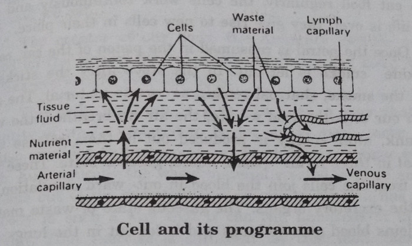

HEALTH IS HAPPINESS
[Arogyame - Anandham]
[Sukhajeevana Sopaanaalu-4]
Take care of your Health
It will take care of
Your Wealth and happiness
Dr. Manthena Satyanarayana raju
Translated by
M. Rajya Sri
Contents
Natural Life style
Experiences and feelings
DEDICATION
To the magnificent pioneer in Nature Cure in Andhra Pradesh, the proficient naturopath acknowledged by Mahatma, the king among Doctors, the experienced celebrity in the chosen field, the selfless mentor - who propagated Nature Cure with affection and amity like a mother, who feeds her children with divine bond and to that great embodiment of virtues, who gifted to the people of Andhra, the joy of healthy life through nature cure and who breathed his last in the true service of patients, to that pious man and a holy soul, Sri Vegiraju Krishnamraju Garu, I solemnly dedicate this book 'Health is Happiness' in the serene presence of Mother Nature.
- Manthena Satyanarayana Raju
A Brief Life History of 'Vydya Raju' - Vegiraju Krishnam Raju
Sri Vegiraju Krishnam Raju, a doctor to doctors is a Nature's Son. A great man. He was a doyen of Naturopaths in India. Though he was not highly educated, he was highly knowledgeable. He was interested in classics of the Hindus and in Ayurvedic medicines, so he probed into these two and mastered over them. That's why he rose up to great heights at a very early age and had blessed Andhra Pradesh with Nature Cure.
He lead thousands and thousands of people, towards Nature, attuned their minds to this path and cured them completely of their chronic diseases. He rendered great service by transforming many disappointed souls into optimists. He has moulded the centre for exercise in his native place as a centre for health. He was so talented that within no time his fame spread from his village to cities, from cities to the state and from the state to the entire nation. He has become the President of 'All India Prakruthi Parishad'. He was a Gem in Nature Cure. He never sought for titles. The titles sought after him and those titles had gained their name being given to such a great man. You can never come across such a wonderful man-never before, never after! He came under the first category of man 'Uttama Manavulu'. He never stopped half way through, a work he took up, come what may to trouble him. He was such a conscientious man. 'Work is worship' to him and he had dedicated his life to work.
The people who seek higher education and reach higher position become pandits and knowledgeable men. Those who realize truth, follow truth and spread to people far and wide become social reformers. Basically good people, pioneers and who spread good principles to others become Karma yogis. Such people are appreciated as reincarnation of God. Sri Krishnamraju comes under the category of such Karma Yogi. This man, the reincarnation of God, evolved Nature Cure in 1935 and he breathed his last at a very early age in 1955 itself.
He founded Nature Cure Hospital in his native place in 1934 and brought his Hospital to Bhimavaram by 1938. He not only cured thousands of patients of their diseases, but also trained hundreds of young men in Nature Cure and spread this far and wide. That was his greatness.
Sri Krishnam Raju was born as a second son to Sri Subbaraju and Smt. Subbayamma in Marripudi village in Bapatla Taluk, Guntur District, on 7th December, 1910. He was tall, handsome and healthy. He had a good physique. He was an enemy to bad habits and a close friend to exercises. He was well-versed in boxing, wrestling, sword fighting and stick fighting. This young man established a centre for exercise in his native place and moulded and shaped the other kshatriya youth. He stood first for 3 consecutive years in sword fighting and stick fighting to district wide competitions held in Guntur district. So he won a rolling shield.
He revealed remarkable talents. For example, he bent iron crowbar into bows with legs. He tore into pieces the iron chains used for a swing table. He would drag a cart for 100 yards whose wheels were fixed tight by many youth. He weighed a block stone over his chest, displaying it to everyone.
A strong bear came into the village once, when he was 20 years old and it was attacking many people. He counter attacked it with a sword in his hand. He was so bold that he killed it with sword and pierced it into its heart. Not only that, he strongly opposed injustice, wherever it was and spoke in support of Dharma and established Dharma. He was a true example of the saying 'Baahurajanya Krutaha'.
He was a social reformer who had performed widow marriages. Deputy collector Sri Alluri Ramakrishnam Raju invited him to Bhimavaram in 1938. Then he explained all about Nature Cure systems to the collector. Immediately they established a Nature Cure Hospital in Bhimavaram by joining Sri Kalidindi Gangaraju who is suffering from stones in kidneys and some 5 more patients into that! The then Health Minister Dr. Venkataraman paid a visit to that hospital.
The Allopathy hospitals in and around Bhimavaram had to close down due to his Nature Cure Hospital. As a result, due to the poisonous nature of some jealous people, he was injected poison. Consequently, his health was affected and he became serious. Since Krishnam Raju Garu had faith and confidence in Nature Cure, he went to Dr. V. V. Ramaraju who rendered great services to him along with treatment. After regaining his health he went to Ramana Maharshi Ashram in Pudukkot for his blessings and for mental peace.
When he came back, established once again a Nature Cure Hospital, this time at Godavari River bed in Kesavaram. At such a time, Gandhiji's close assistant Yarneni Subramanyam Garu brought a fits patient named Chakrayya to his new ashram as an inpatient.
Gandhiji's Questions and Krishnamraju's answers.
-
Wiil he be cured - Yes, he will be
-
Within how many days - In seven 'Ghadiyas'.
-
What is the expenditure - As much as you can bear.
-
Will it recur again - If you so desire.
Gandhiji was surprised to read these answers. He wondered at the talent of the doctor who could even convince a person like himself. So Gandhiji asked him to cure him irrespective of the time limit.
The answer to the question - how is it possible to cure the disease in just seven 'Ghadiyas'.
The disease doesn't start in the body. The health of a body depends on the food, exercise and habits. Such habits are based on mind and not on body. So to cure your mind and if you listen with concentration seven Ghadiyas will suffice. Those who can't change their bent of mind, can't be cured of their disease. This was the answer implied in his statement. Chakrayya was cured wonderfully was taught yogasana too. He left after he was rid of his fits. In such a way he won the applause of Gandhiji.
Later, on Gandhiji's invitation he visited Sevagram Hospital in Wardha and spent a week's time with him there. During that period, in Wardha, Jamnalal Bajaj's daughter delivered a baby at home under the supervision of Dr. Sarojini Naidu, but she went into coma after delivery. At such a critical moment Bajaj's wife Smt. Janaki Bajaj was scared and rang up to Gandhiji. He too felt sorry for her and rushed at once there along with Krishnam Raju. It seemed they sent out all except two people since Gandhiji would follow a treatment named 'Ramanaamam'. Then as per the advice of Sri Krishnam Raju, started Naturotherapy. When they kept cold sand pack on her abdomen. The waste matter in her uterus came out automatically due to the coldness. When it cleared, the young mother opened her eyes. Immediately Gandhiji gave her some honey. So by morning the critical moment cleared and she was out of danger. They praised Sri Krishnam Raju a lot before Dr. Sarojini Naidu.
Sri Krishnam Raju's fame spread and wide day by day. The king of Jaipur, Vikrama Deva Varma bestowed him the title 'Vydya Raju'. Afterwards Sri Ramakrishna Nature Cure Hospital was established in 1942. Many great people like Vinobhaji, Balkonaji, and from Calcutta Sri Dharam Chand Saragavi visited the Ashram.
During 1948, Sri Ch. V. P. Murthy Raju, a famous Gandhian was in a depressed state due to his ill-health. Sri Krishnam Raju cheered him up, treated him and rejuvenated him. Thus the fame of the Ashram touched the skies. Since people like Rudhra Raju Ramalingam Raju Garu, Venkata Raju Garu a famous wrestler of Lankala Koderu, Sri Pabolu Narayana Murthy, a great business magnet in Palakollu. Gandhiji's grandson from Gandhiji's ashram, Vinobhaji's secretary and many such dignitaries visited his ashram, his fame spread widely and the Ashram automatically developed.
At such a moment, since Sri. Krishnam Raju has struggled day and night for the upliftment of the Hospital, since he neglected his own health, since the poison injected earlier had remained in his body, his health was effected very badly. In such a situation the successors of Gandhi in gandhiji's ashram Sri Prabhakarji and Sri Potti Sri Ramulu had come to his support and the Ashram shot up in its path to success. Their fame spread all over the country.
Finally Sri Krishnam Raju's physical body lost all its energy physically and mentally, due to his tensions over the hospital and due to financial problems. He sent for his brother V.V.Ramaraju in Madras for treatment, but he could not recover. His soul had left his physical body in 1955. That was a colossal loss to Andhra Pradesh. Finally a pole star had fallen down.
Such a great man, the blessed son of Mother Nature, a precious gem in the field of Nature Cure, Vydya Raju - Sri Krishnam Raju, I always forever remember, admire and worship in my mind's eye. I dedicate this garland of book as a homage to my god father, Sri Krishnam Raju.
With humble regards
Manthena Satyanarayana Raju
Mahatma's grand daughter's
Salt Satyagraha with a different purpose
Gandhiji launched Salt Satyagraha as a fight against the British Empire where the sun never sets. Today his grand daughter is launching a new type of Salt Satyagraha as a fight against the age - old habit. What a strange thing!
If this modern 'Salt Satyagraha' was mentioned by any one else, we would not have minded, but she was none other than Gandhiji's grand daughter. She was Sumitra Ramadas Gandhi, Ramadas Gandhi's daughter. She came down all the way to Hyderabad for this purpose. That's why her statement had attained importance.
She got herself cured in Natural Life Style under the guidance of Naturopath Dr. Manthena Satyanarayana Raju in Jubilee Hills. She appreciated him a lot. She said that she had seen many Nature Cure Hospitals and many Naturopaths in India, but Dr. Raju was first of his kind. He was a great man with a powerful intellect and a warm heart, enlisted in the service of humanity.
He was the only man assured you of a perfect health if you totally gave up salt. Sumitra Rama Das Gandhi was eighteen years old when Gandhi passed away. But she had by that time studied and observed his thoughts and the way he implemented them. He had given a great importance to Upavasa Dharma. The Upavasa Dharma mentioned in our Vedas and Puranas, he observed exactly and had taken good care of his health. Gandhiji asked us eat very less quantity of salt, but Dr.Satyanarayana Raju asked us to give up totally salt, oil, masalas etc., to attain a perfect health. This young man has first tried it on himself first, achieved success and then he was spreading it to others.
That's why Smt. Sumitra had come down with her husband for a treatment from him. The slogan followed in the ashram was "The pinch of salt added for taste, would give rise to many diseases". Dr. Raju was proving that a saltless diet and an intake of 5 to 6 litres of water would drive out all diseases prevalent in man and also make him disease free. Smt Sumitra had herself personally followed these restrictions, followed 'Upavasa Dharma' and observed the others following too. Not only that, Smt. Sumitra liked the food cooked there, which was cooked neatly and tastily. The special feature she liked in the Ashram was that it reflected the bond of love and affection found in the families of Telugu people. Every worker in the Ashram was very sincere and dedicated in his work. The added attraction was Dr.Raju's lecture on every Sunday.
Smt. Sumitra spoke with enthusiasm, though she was on fasting for 5 days. She did not in the least look weak. She shared with us many of her childhood memories. She recollected Gandhiji's food habits and his life style. Since she was brought up in Gandhi's family in the lines of Gandhian thought, she developed a faith in the fact that following Natural Life Style was following the principle of Indian Culture. She praised Dr.Raju for following Gandhiji principle in the days when life had changed. Dr.Raju had followed himself Natural Life Style and had spread to one and all with love and affection.
Dr. Raju is a man of action and not a man of words. That's why he had impressed her. He gets up early in the morning and washes his own cloths. He sleeps on the floor.
He is a man with a smiling face. He is a friend, philosopher and guide to all patients. Who else can he be like him?
Gandhi had launched Salt Satyagraha from Dandi since Britishers have laid a control over the production of salt, now his grand daughter has launched a different Salt Satyagraha 'Salt to be excluded from our daily life', from Bangalore to Hyderabad.
(Smt.Sumitra Gandhi retired as an I.A.S. Officer. She worked as a Rajya Sabha member along with Smt Indira Gandhi. She participated in many Women's liberation activities and social reform activities.)
We have compiled here a few parts of an article published in Vartha daily on 12th Feb. 1999 and a few items from the interview with her.
K. Rama Chandra Murthy
Editor
Vartha News Paper.
Awake, Arise
'A thing of beauty is a joy for ever' said Keats. To enjoy beauty and be filled with joy we must first and foremost have good health. To have good health we must follow the truth, The path of Dharma. 'Beauty is truth, Truth is Beauty. So if we lead truthful life, follow the Dharma of the body, it will bring in its train beauty and joy. If everything is fine the mind, the remote control of our body, fulfils its Dharma happily, this is a universal truth. Health is not something which you get from outside. It is acquired by you based on your 'Life Style' - every day of it. You sidetrack one day, the health also loses its track. If you don't check it then and there, you loose your goal.
We are made out of dust by God and ultimately our soul, Jeevatma joins God, Paramatma. In the via middle stage we fluctuate between Health and ill-health. They are like twins to the two inevitable stages of man - life & death. So in this janma, if we don't fulfil our minimum duty of Aarogya Dharma our life on earth is a mere waste. How should that Dharma be to this modern man? Nature's blessed son Sri Manthena has himself followed and a perfect path and is showing us that in a pleasing way! This path shows deliverance to our mind and soul. I was asked to write forward to his book Health is Happiness (Aarogyame-Anadam). But instead of just writing forward and forewarning about diseases, I have written a short and sweet 'Awake-Arise' blended with my personal experiences. I always hope that the various experiences of many people in the book in the said field will be like a garland of flowers, which will invoke good health to many more.
Not a treatment, but a revolution:-
I came across very few doctors since I had no serious need to consult them. My only complaint was putting on weight whether I ate or not! I tried various ways and means of dieting, but I reduced only temporarily. I came to know that without any treatment, just by eating our food with certain restrictions we could not only reduce weight but also improve our health both physically and mentally. This was the sum and substance of Dr. Manthena Satyanarayana Raju's Natural Life Style. I shifted to his life style, three months eight days ago. Within this short period, I found a two fold advantage. I not only reduced 10 kgs weight but felt I had become younger by 10 years. Now I have the same enthusiasm in sets, which I had ten years ago.
This is my experience. When I listen to others' experience I feel this Satyanarayana Raju Garu is not a doctor but a 'Maha yogi'. He does not merely preach any thing, he practices what he preaches. That is his specialty.
Once one old lady met Mahatma Gandhi and asked him to make her grand son stop eating jaggery. Then the Mahatma asked her to come again after a week. This time, he told the young boy to give up eating jaggery. The old lady asked why he had taken one week's time to give such a small piece of advice. Then Bapuji said that he too had that habit and he could not advise others to do what he himself did not follow. So he took one week's time to stop that habit. This is the characteristic feature of great sages. Dr. Raju has cultivated such a saintly feature in him. This is not a treatment according to me. This is a revolution, a great revolution for good health. Many intellectuals should lend their helping hand to it and spread it. We are in the days when for a mere sprain at the leg the doctors are making us undergo many tests ranging from blood, urine and motion test to brain scanning and are knee-bent on squeezing money out of us. We the people, the honest citizens of our country should spread Dr. Raju's Natural Life Style into the blood of every individual which becomes an eye-opener to the doctors. Our state government and central government should honour such a great man who is dedicating his life to the free service of human community. My heart-felt appreciation to Dr. Raju.
With Love
Dasari Narayana Rao.
Film Director
Garland of experiences rich and vivid
Man is a hard worker but the modern man has forgotten all about it, That's why I have to remind him this time and again of the importance of his health. In spite of the repeated reminders, there are many who pay a deaf ear to it. But of course, the Natural Life Style I have taken up, based on the age old Nature Cure, will not stop. The reason is it is the way of life should be lead. Man is born as a part and parcel of Nature. He is not something different from it. But the tragedy is, man is forgetting his Natural Dharma and is behaving in an unnatural way. So I am reminding him in various ways.
Ramayana, our great classic, has a subtle truth and message hidden in it. All creatures of God's creation co-operated with Sree Rama, since he was a staunch follower of truth. When a host of monkeys were helping Rama to build a bridge over the sea to reach Lanka, very small animal 'squirrel' helped him in its own way. It may not be a great help but it has helped him in its humble way. This shows every creature's life is closely blended with man's life. If a man leads a life of Dharma, then Nature will co-operate with him and will guide him.
The further we travel from Nature, the more paltry we become. We should retain something of the fresh simplicity and austere endurance of Nature, than give up our souls to the mere accumulation of wealth and to the superficial life of pleasure.
Wordsworth, who was so delighted by Nature said,
'Earth has not anything to show more fascinating
Dull would he be of soul who could pass
A sight so touching in its majesty'.
Yes Earth has so many fascinating things to offer. Dull will he be of soul who cannot go back to it and eat the natural things offered to him which gives him good health and shows him "Health is Happiness". Upavasa Dharma helps him to attain it all the more.
Our elders have imbibed into us 'Upavasa Dharma' blending it with auspicious dates. People staunchly follow fasting on Ekadasi and in 'Karthika Masam'. Just think for yourselves whether 'We eat to live' or 'Live to eat'. We should eat so that we may survive to fulfil our life's purpose. We are sent to this earth not just to eat, drink and be merry. We have a duty to fulfill. But many have come to the conclusion, we are 'born to die'. We have forgotten Natural food style and 'Upavasa Dharmam' the internal truths provided to man. The good old saying is - 'A perfectly healthy man will live his life full.' But we are falling apart from it. 'Prakruti Dharma' will bring him back to that life. That is a boon to our journey of life. My effort is to give you an easy access to it. That urge in me has driven me to start this revolution though my attempt is as humble as the attempt made by the squirrel.
I have written two books in Telugu entitled 'Sukha Jeevana Sopanalu' to enable you to follow Natural Life Style. Upavasa Dharma, the third book gives you more information regarding this life Style. This book 'Health is Happiness' is the fourth book in Telugu entitled 'Aarogyame Anandam'. Though this is the fourth, this is the first in English translation since it gives you in a nutshell how & and why to follow Natural Life Style and also gives you various explanations to drive out your years regarding the hurdles you face in your new path. In addition to it, you have the experiences and feelings of many people who followed this Natural Life Style and followed Upavasa Dharma and who attained remarkable cure from their respective diseases. I express my heart felt thanks to a great Saint, the most respectable person Sri Sri Chinna Jeeyar Swami who has agreed to reach the book, 'Aarogyame Anandam' to all of you.
The same way I am grateful to Sri Dasari Narayana Rao, famous Director who has written 'Awake, Arise' clubbed with his personal experiences. My thanks to the Editor Sri K.Ramachandra Murthy who met Smt.Sumitra Gandhi, grand daughter of Mahatma Gandhi and has penned her experiences with us. My thanks to our good friend and well wisher, famous journalist, Sri Nadimpalli Seetha Ramaraju for having done editorial service to our book. I extend my thanks along with blessings to Vakada Srinivas, who has stood with me, throughout, in my effort. My appreciation, go to famous producer and actor Sri Nagendra Babu who is an embodiment of love and affection, who gave us his full support in Upavasa Dharma. I extend my thanks to famous doctor Smt. P. Satyavathi who gave us full support to our revolution from Amalapuram. My thanks go to each and every one of those who have written down their experiences in this book.
My special thanks and regards are for an efficient industrialist Sri Atluri Subba Rao who has stood as a beacon light to our institute, come what may to disturb our institute.
Also I am grateful to the management of Suraj Printers, Sivaji Raju Garu & his staff for printing my first book Upavasa Dharmam in 1998 and the second one 'Arogyame Anandam' in Telugu as my marriage gift on i.e. June 24th 1999.
Come - See - Conquer.
For ever yours,
Dr. Manthena Satyanarayana Raju.
Madduri Rajya Sri - The Translator
Madduri Rajya Sri did M.A. in English Literature from Presidency College, Chennai and Post Graduate Diploma in Higher Education from Bombay University, Mumbai. She was a Gold medalist in Telugu in B.A., She has been working as the Head of the Department in English in Nagarjuna Junior College, Hyderabad. She hails from a Publishers' family M. Seshachalam & Co. She is the daughter of Late Sri M.N. Rao, the founder of Andhra Pradesh Book Distributors and a doyen of Telugu publishing and EMESCO fame.
Smt. Rajya Sri edited nearly 300 EMESCO novels and prepared back matter. She contributed most thought provoking articles and short stories to Pustaka Prapancham, Eenadu and other periodicals. She aptly translated number of books from Telugu to English and vice-versa. She interviewed many popular personalities and published the interviews in magazines.
Popular among her translations are Alice in Wonder Land, A Cry from Heart and Varka Children's magazine. Publishing manual-edited by her was acknowledged as the reference book in most of the publishing institutes. She also edited the famous book named, Inside Story of Indian Railways. She translated short stories of Smt. Govindarajula Sita Devi. Her book on Grammar entitled Apt English Grammar is widely followed by students of all ages.
She has also specialised in internet publishing. Her valuable contributions in Telugu Bhakti site are globally adored by international Telugu community.
She was inspired and enthralled by the lecture of Sri. Manthena Satyanarayana Raju on Natural Life Style. At my request she readily volunteered to take up the translation work of Arogyame Anandam. Her translation of Arogyame Anandam is in a very simple and easy to understand style. This altruistic service to international followers of Natural Life Style is real yeoman work.
May god bless her.
Read and follow the Natural Life Style - enjoy the healthy and happy life.
Blessing you a healthy life.
M. Vishnu Prasad, M.Sc., Correspondent,
St. Alphonsa's Educational Institutions
15/A Sidharthanagar, Hyderabad-500 038.
Acknowledgments
'A journey to a thousand miles must begin with a single step'
A journey to perfect health begins by just listening to Dr. Manthena Satyanarayana Raju's lectures or by reading his books. To many of us he has given a glimpse of "Truths that wake to perish never".
Wordsworth said, "The world is too much with us; late and soon".
Getting and spending, we lay waste our powers.
Little we see in Nature that is ours.
We have given our hearts away, a sordid boon'.
Through his Natural Life Style Dr. Raju tries to evolve, along with perfect health, the qualities of strength, endurance, unaffected simplicity, courage and hope - qualities which are predominant among rustics who live in the lap of Nature.
Many people who were lucky to have read or heard Dr. Raju's preaching have realized the impact of Aarogya Dharma and Upavasa Dharma. Some of them have detailed upon their experiences and their thrill in their own way, in this book.
I am luckier still than all those people introduced to him, since I am given an opportunity to pen his writings in Telugu into English. Little did I expect that I, who have been teaching all about Natural poets would one day be blessed by Mother Nature to replicate her blessed son's work. In this connection, at the very outset I thank Mr. Y.S. Rao our family friend for inviting me to attend Dr. Raju's lecture which turned out to a turning point in my life.
Next I would like to thank Sri. M. Vishnu Prasad, our well wisher, who enabled me to meet the doctor personally and was the sole cause of this honourable responsibility of mine.
I am ever grateful to my brother Sri. M.S. Kumar, who has brought out the writer and translator in me and to my husband, Sri. K. V. R. Rao, the Director of Finance in St. Alphonsa's Educational Society, Hyderabad, who has kindled the creative talent in me. Not only that, my husband has given me full moral support and helped me throughout this project, in various capacities. My little daughter, Snigdha, too added her share of contribution, in sorting out things.
I am also thankful to our Principal Sri Jagan Mohan Reddy, for providing me a congenial atmosphere for my work and my colleagues especially Mrs. Mani Rao for their encouragement and support. My uncle, Sri M.V. Subba Rao and my sisters Smt. Meena Rama Rao and Smt. Prameela and sister friend Smt. Aruna Yasoda have lent a helping hand in proof reading, which saved lot of my labour.
Last, but not the least I thank Dr. Mrs. Visala the better half of Dr. Raju, who stands true to the English saying 'Behind every successful man there is a woman'. Dr. Visala has meticulously gone through my work, has guided me, has appreciated me and has commendably helped me in making this dream a reality.
I do hope Dr. Manthena Satyanarayana Raju's thought flow, ideas and principles have been portrayed to you as he has been doing in Telugu and I wish my humble attempt will assist his marathon revolution.
My gratitude to him.
M. Rajya Sri
Head of English Department
Nagarjuna Junior College
S.R. Nagar, Hyderabad.
Residence:
W/o. Sri K V R Rao
B-4 Banjara Cottage
Yellareddyguda,
Hyderabad - 500 073
Email: ragav1@hd2.vsnl.net.in
Chapter I
AMIABLE DAILY ROUTINE TO BODY
Each living creature in god's creation has its own shape to suit its life style. The life span also varies from species to species. If any creature has to lead its life to its full, its body has to co-operate with it. If the body fails to co-operate, the soul in it suffers and so leaves the body quickly. The Sastras tell us, such a soul enters another body. The soul thus shifts from one body to another and finally reaches human body as an intelligent soul. Puranas depict that janma of man is the highest and ultimate one.
So before we give up this life, we should realize our goal in life, we should apply our reason to that, and see that our body doesn't hinder our progress. This is our ultimate aim. To reach this target, we should use body as a means but the body should not be the end.
If we don't take care of our body, it will be spoilt. God, who has created the body has framed certain rules for the same, for all living creatures. Only if we stick to those rules, can we lead a healthy life. 84 lakhs of creatures are leading a peaceful life to their extent of life span without violating their dharma. That's why they don't require a hospital, medicine or medical science for them.
Man too was healthy before civilization, on same grounds, ill health is directly proportionate to the amount of his negligence of the body. If health is dharma, adharma is ill health. So if we cross dharma the punishment is disease. If we wish to get rid of diseases totally, we have to realize the importance of dharma and live accordingly. We should set right things where they have gone wrong. Which adharma brought us this illness? We should drive out that part of adharma. That is the only truth, the bare truth. That is the harsh reality.
Suppose we fall sick, we run around hospitals not once but many times! But we are not able to get rid of the disease totally! We are not permanently cured. We are not completely hale and healthy. Why? What's wrong and where? Is it not our prime duty to know why? Don't say casually 'Yes I do!' Now you introspect yourself before you answer, you should go into the root cause of the problem. You cannot become perfectly healthy if you don't follow the dharma of the body! The doctor or the medicine cannot drive out the adharma you follow! They can't promote rightful action. The side effects of medicines promote adharma, they provoke another disease! So the body greets a New Year with new ailments but doesn't clear itself of old ailments.
Any number of modern methods in medicines, super-specialty hospitals can only extract your money but not your disease! Unless you purify your heart there is no point in going to kasi, having a holy bath in Ganges or wearing a holy mantle! The same way unless you give up the adharma of the body, and change your life style. You cannot get rid of the ailment you acquired. If you want to rectify your mistakes or to be free from mistakes, you should first and foremost know the dharma of the body.
Dharma of Water
Dharma of Food
Dharma of Exercise
Dharma of Rest
Dharma of Excretion (Dharma of Fasting)
This five-fold dharma will safe guard the body which contains the five elements of nature. The violation of this will harm the body. So it is left to us, whether we want to protect it or destroy it. You can fulfil it as per your desire.
1. Dharma of Water
Our body contains 5 litres of blood and 68% water. It is our dharma to know how much water we must drink and when to drink to keep them pure. Except man, every other creature knows its dharma of water. The animal of one species drinks the same amount of water, in the same way throughout the world. The animal is not as intelligent as man, but it is drinking the required amount of water without any medical aid. That's why its body doesn't stink even if it does not bathe regularly.
On the contrary, the man, the intellectual who can reason out things doesn't know till date how much water he has to drink. He requires doctors to enlighten him. But though science has advanced much, it has not been able to stress on the importance of water to the human body.
Man got accustomed to eating food against the will of God. The same way, he is accustomed to drinking water of his own accord. It is more harmful to him. The water he drinks is not sufficient to cleanse his internal body, and so it stinks. Any amount of scents or powders cannot drive out the stinking smell. People are scared that they pass more urine, if they drink more water. But how will blood be purified if sufficient quantity of water is not provided? The uneasiness caused to the body due to shortage of water should be rectified accordingly. Medicines cannot help. Water should be supplied in the right way at the right time.
2. Dharma of Food
Every living organisms is destined to eat a particular type of food based on the shape and size of its body. These dumb animals lead their life accordingly. The man, the more intelligent one, has no proper knowledge. He doesn't know whether he has to eat vegetarian or non-vegetarian, cooked food or raw food, daytime or night or both times!
Man's life span is 100 years. Then shouldn't he take the food that promotes the cells which would sustain him for his lifetime? Our life is a waste, if we cannot sharpen our intellect and attain jnana ultimately. The food we take should help in the process. So we should eat food that would get digested easily, would give us more energy in less time and send less waste material.
The main dharma of food is, it should contain life in it, which in turn promotes life in us. But what are we doing? We are not providing such staple food! Instead we are cooking, frying, toasting and adding edibles to the food. We are taking that food at odd hours. To worsen it, we are eating as per our senses ignoring the dharma of the body. Can a car run with kerosene in the place of petrol? We are doing that to our body! When we are violating so many rules, how can we expect to have good health from childhood onwards?
The body is suffering because of the food that is supplied to it. It can be cured only by replacing the food of adharma with the food of dharma! No medicine can give it a permanent cure! For instance, we require unleaded petrol for our car. It is not available in the nearest bunk! Are we not going very far, to get the petrol we require? When we can realize this simple truth to an inanimate thing like our car, can't we take a greater care of our precious possession, the one and the only body we have? But that is our greatest tragedy, our sin, our curse! Call it whatever you want! But even now it is not too late to realize our mistake and to walk on the path of dharma!
3. Dharma of Exercise
No creature ever acquires food without some amount of exercise. Exercise is useful to digest the food, to send the digested food to the rest of the parts of the body and send out the waste material. That is the dharma of exercise. Exercise is as important as the food we eat, the water we drink, the air we breathe!
Modern man has invented machines to do his work but can those machines digest the food in his body? That's why our elders said no work, no food! Gandhi insisted on shramadan. But we feel we have lots of ancestral property to spend and parents to do the work, so why slog ourselves? But that laziness results in germs settling down in our body. They are bacteria, virus, worms etc. The output of food should be proportionate to the input of food, but for a lazy man, for want of exercise 50, 60 percent of food stagnates in his body. Consequently he falls sick, Our forefathers are healthier than us, because of the amount of work they do!
We, as human beings, have to fulfil our duties at home and at office, so we have little time for exercise. To compensate that, our elders have suggested yogasanas, pranayama or some exercises in the morning. We are ignoring this, so we have to face the illness. Unless the dharma of the exercise is fulfilled, food cannot be digested or sent out! So even if it means some strain for us, we can't but help spending sometime on exercise! Let us pave our way towards good health and change our daily routine.
4. Dharma of Rest
Dharma of rest doesn't mean sleeping in an idle way. Every living thing must have certain amount of work and leisure. Before electricity was invented people relaxed at night, but now day and night we are slogging. Our body which has slogged requires some rest.
If we work for 12 hrs & relax for 12 hrs, our body will get energised. If we take rest, our hands, legs, nerves, joints and bones only get rest! But you know what our body consists of? Not merely these! The parts which work constantly too need rest. The parts like the intestines, liver, pancreas! If we don't give them rest at night they cannot digest our food effectively, next day. They cannot battle against microorganisms. So we fall sick. Can we work properly one day, if we miss a good night's sleep the previous night? Doesn't it apply to these parts like liver? Rest doesn't mean eating our stomach full till midnight and then sleeping happily. We should eat before sunset. Rest means charging the internal parts, which can successfully discharge waste material.
This dharma of rest helps us fulfil the dharma of fasting. If these parts require rest, how can medicines provide us that rest? Do you think we can buy this dharma in the market? It is high time we realize medicines cannot rejuvenate us! It may further deteriorate us! So let's hurry up! If we don't open our eyes, we will be at the last stage of life at an early age!
5. Dharma of Excretion or Dharma of Fasting
Animals are free birds so they can urinate anywhere anytime! The output is more important than the intake of food for anybody. If we eat before sunset and give rest for the body from then, around 12 in the night the dharma of fasting begins to do its duty inside. It goes on till we start eating something solid again.
If we take fruits, raw vegetables or juice, they don't hinder the excretory action. Around 9 a.m. or 10 a.m. we eat sprouts or some tiffin after an hour the excretory action comes to an end.
On the contrary as soon as get up, say around 6 a.m. or 7 a.m. you take coffee, tea! They stimulate these parts and put a break to the excretory action. That's why you are asked to take light food in the morning. Idli, dosa, curd rice - such things cannot be classified as light tiffin.
Our health depends upon the amount of time we give to this excretory action. If we wish to possess a bright, energetic body, free from any ailment, we must respect this last but not the least dharma, the dharma of fasting! The food we take is converted into Shakti, but in the process even waste matter is secreted. They are released in the form of solid, liquid, gaseous states. If these three forms of waste material have to be sent out of our excretory organs, we should co-operate with them by providing them rest.
The day we eat before 7 p.m., that day excretory parts will function effectively. The day we delay to 9-10 p.m. time will not be sufficient. Waste material gets stagnated. The food eaten at 10 p.m. will not be digested completely before we get up. Immediately after we get up, we eat again. So what happens is, we are eating even before we can send out the waste material. So the intake is more! That leads to many diseases. The temple in which our soul lives is spoilt by diseases in such a way. How can it lead a proper life then? If we wish to get rid of these diseases, we must follow the dharma of rest, and get rid of waste material first. If we don't adhere to this dharma, no doctor, no super specialty hospital, no God, no amount of money can save us! We can continue to be human beings only if we live up to this dharma! Otherwise we are demons in the form of men!
God has gifted us with this body and assigned us to follow this five-fold dharma. If we ignore these dharmas and go around hospitals, God cannot save us. In fact even if we pray endlessly to the very same god who created us, cannot come to our rescue - 'Dharmo rakshati rakshithaha, Dharmo hanti hantaha'. You protect dharma, dharma will protect you! You kill it, it will kill you! Dharma is the absolute truth! Dharma is Health, Adharma is ill health. Negligence of dharma is nothing but negligence of God! You want to have good health. You have no other way than to follow these five dharmas. You may wonder but how long! As long as you live! We are not born on earth to eat, drink and be merry! Such a life leads to misery! We should stick to some norms of life.
'The ant is a Siddha jnani
Pig is a Mahajnani
Rooster is a kala jnani
Dog is a Sujnani
man is an Ajnani' said Vemana
The ant can scent sweet wherever it is, so it is a Siddha jnani; the pig eats with the same intensity of happiness both tasty and dirty food so it is Maha jnani; Rooster wakes up man at 4 in the morning to remind man the value of time and his duties he has to fulfil before his life time, so it is Kala jnani; the dog can differentiate between good and bad people and show gratitude to its master, so it is Sujnani. But the tragedy is, man who has to lead an exemplary life in the path of jnana following the dharma, he is yielding to a life of adharma physically and mentally. So man is called Ajnani.
The early rays of sunlight drive out the darkness around. The same way let us drive out the darkness of our ajnana with the sun light of our jnana. Come let's start it right away and achieve it like the king Vikramarka, who never gave up!
Daily Routine
We should frame our daily life in such a way that it would enable us to follow the five-fold dharmas which could work in our body to cleanse it and to promote good health. I personally experimented on my own body for the past 5 years and framed a new life style. Such a life style is useful to all irrespective of their age or health condition. Come on, follow this daily routine to lead a life devoid of any disease.
Dawn - Our elders proclaim that its good to wake up before dawn. 4 a.m. or 5 a.m. is auspicious time (Brahmimuhurtam). If we cultivate the habit of getting up at that time, it keeps us in good humour for the rest of the day. We feel very peaceful. So can think of pleasant things. Just as we allocate some time for office hours, some time for sleep, we should allocate for our health too. It is our minimum duty to spend some time for our body which provides us comfort and cooperates with us all the 24 hours. So let's start doing some justice to it, early in the morning, for about 2 hours. So to begin with, get up peacefully from bed between 4 and 5, pray to yourself. 'I will do my level best to follow whole-heartedly natural life system and then start'.
Dharma No.1
The body will be involved in excretory action from 12 in the night till dawn. Towards dawn some waste material will be transfered into blood by cells. This has to travel through blood to the excretory organs and through them come out of the body. For such a processing blood requires water.
The water you drank last night will not remain in blood and cells. That goes into kidney as urine. Early morning, water content will be less in blood. If you can send large quantity of water into blood the waste material in blood will get into water and come out in the form of urine.
Here you should follow the dharma of water. Without any deviation of mind, you gargle your mouth with water and at a stretch, drink one liter to liter and a half of water. You are benefitted in two ways. First, the stomach is filled with water. So its heavy weight falls on the rectum under it. After you drink water, you concentrate on the lower part of abdomen and move about in the house for about 10 minutes expecting a nature call. Then there will be a quick movement in your body. Concentration is very essential. You should move about thus till you get a feeling you must at once rush to the latrine. As soon as you rush into the lavatory, first you must have motion (in large quantity in one shot) then you must pass urine. That means you had a free motion. You should not go in installments. Then you brush your teeth.
The second use is, all this water goes into blood from stomach, and attracts the dirt in the blood into it and comes out in the form of urine or sweat during exercise. That way the large quantity of water cleanses blood and helps in a free motion.
Dharma No.2
Dharma of exercise. You can start exercise 20-25 min after drinking water, wearing the clothes that suit the requirement. Pranaayama (long breath) is a must. Asanaas are very good for health, though they may not make you sweat. Nothing can reduce your weight like asanaas. If you can't do them, brisk walking, if you are above 60, and jogging if you are below 60, is a better option. Ultimately you should sweat at the end of an hour. That is the goal. You should not neglect it. 'No work, no food', remember this. You think you can eat without doing work, but whom are you fooling? Yourself!
Dharma No.3
After the exercise, after you sweat, you should relax for 10 minutes in 'Savaasana' (no movement). Then again without break drink water about a liter to liter and a half. If you concentrate on large intestines, you have free motion in large quantity for the second time since it was stirred in your bowels during exercise. Whatever turns into faecal matter from the food you consumed yesterday, comes out and the large intestine now is totally free as if you have cleansed it. Two motions in the morning welcome a happy day and a good health.
Through exercise, heat is produced in your body. That hastens the movement of the waste material into the blood and that in turn is quickly brought out of the body by the water you drink. So till now you cleansed your inner body. Now clean your outside body. You have a bath. Earlier, if you have consumed only two litres, now you take one more liter of water. This last liter gives a final wash to the body. If you have already consumed three litres and there is no time further, you can stop there. Excretory act is still going on. Now you can pray to the God of your choice. You should pray for a truthful life and friendship of saintly people.
Dharma No.4
You can start this from 20 min after you drink water. The buffalo that pulls heavy cart moves faster when it is given a blow. The same way a vegetable juice hurries the excretory action and purifies the blood. You can make juice out of these: Tomato, carrot, beet root, leafy vegetables, keera; you can mix keera with any two vegetables and prepare a glass of juice. Can add honey to make it tasty and more powerful. Drink it slowly sip by sip for 10 minutes. Slowly you rinse it in your mouth and then drink; it is good! For whatsoever reason you can't drink vegetable juice, you drink fruit juice. Treat this as bed coffee or tea and bid good bye to coffee and tea!
Dharma No.5
This can be started from half an hour to an hour after drinking the juice. If you are not in a hurry can give two hours gap. Your vegetable juice stimulates your hunger, but the excretory action is still going on. So you must take food which doesn't hinder it, but which helps you in sending out last night's residue and which keeps you energetic for three to four hours. If the waste material doesn't come out completely today, a residue will be left out for tomorrow and will cause a nuisance.
Tiffin doesn't mean idli, dosa, poori, upma etc. Since they don't have pranic energy in them, the pranic energy we breathe in, goes for the digestion of these. That means the pranic energy instead of cleaning the blood goes to help the digestion. So there is a break in excretory action. That's why both children in school or men in office feel drowsy. Of course you can prepare such tiffins without salt and oil, but still prepare them only on holidays or special days. Don't eat them everyday.
Healthy new tiffin is sprouted seeds - Make sprouts from the seeds of green gram, bengal gram and wheat. Soak groundnuts in water at night. Morning you remove these groundnuts from water, eat them with the other three along with dates. Eat as many as you can. You can eat even coconut pieces, but these must be chewed well. These seeds have sumptuous pranic energy or nutritious value, which helps in excretory action and for physical exercise. 45 minutes after you eat these seeds, excretory action slows down and finally stops. Such a tiffin helps you in many ways. You don't feel thirsty, drowsy, tired, hungry, don't feel like drinking coffee. On the contrary it gets digested quickly and makes you work energetically! See how helpful it is!
You know something? You give rest for the women in the morning. Not only that, you save money you spend on tiffins and on medicines. But of course it has its own problems. You can't gulp it quickly like idli. Idli is adharma so it is gulped! Which is against dharma. Whatever you eat, you should chew it and eat! That is dharma! You can't gulp the seeds that way! You can see for yourself the difference between the food that has life and that is lifeless. That is the difference between dharma and adharma. You drink one or two glasses of water 1 1/2 hours to 2 hours after taking sprouted seeds. It is better to drink as much as possible. If there is some delay for food, you can drink any amount of water. Even if you want to suppress your hunger for some time you can drink water. If you drink now, you need not drink one liter water before meals.
Dharma No.6
Drink 1 liter water half an hour before meals to set your stomach ready for food. Then the stomach gets emptied and you feel very hungry. The water consumed at this time of the day protects the skin and the body from sun's heat. It is better to eat between 12 noon - 1 p.m., because when the sun is at his glory, the digestive fluids in your stomach and intestines also will be at their full swing. So food gets digested easily. Whatever good food is required for body's care, it has to be taken in lunch. Here you should fulfil the dharma of food.
You should provide the calories required for the body to keep it energetic till night. The staple food should be unpolished rice or wheat or pulka. The curries should be cooked without oil, salt and seasoning. Nearly one kg curry can be consumed. You can eat as much curd as you want.
Your lunch, which is to your stomach full doesn't provide you health, but at the same time doesn't spoil your health. Since it is saltless there is no further loss. It doesn't help the body, but it helps to have a quick meal and curry to carry on your work. Since you can't eat raw food in office, you can compensate it with bananas and mangoes. If you so desire, can have a small nap for about 15 min.
What happens if you drink water during food?
It is grave mistake to drink water during food. That lays a foundation for gastric problems. Now that you have modified your system of food by giving up salt, oil, ghee, masalas you don't feel thirsty and so don't need water. Earlier you consumed all these and so to digest them drank a lot in the course of eating. Drinking many times while eating and immediately after eating spoils your stomach.
You know why you should not drink water while eating? Hydrochloric acid produced in your intestines digests your food but that becomes diluted if you drink water then. So it cannot digest food early and the process takes double the time but still it is not digested properly. As a result food will be in the stomach for a longer time. For example, if you apply soap to a soiled cloth and wash it immediately, the dirt is not completely gone. Instead, you soak it in soap for sometime and see, how bright the cloth becomes! The same theory is applicable here also.
In fact, no creature ever drinks water during food or immediately after it. They are showing you practically the dharma of water. Whenever they drink water, they drink only when their stomach is empty. That is your dharma too!
Here is yet another example - Suppose you are grinding dal for idli! Do you grind water and dhal together? No! Only after dhal gets grinded, you add water. Otherwise you can't get the Idli mix you want. So you know the law of things, but you don't know the law of life or to be more specific the law of the body! See how we are cheating ourselves!
Our elders tell us one mistake leads to the oter! How much truth is there in the statement? You commit one crime by eating spicy and oily food. You add fuel to fire by drinking water with it! You may wonder how you can avoid water during food! No you won't feel thirsty if you eat raw vegetables or fruits! Because it is natural food because it is food of dharma, it automatically leads to the dharma of water! That's the difference between good and evil. So don't, even for pleasure, slide towards adharma!
There is yet another loss, by drinking water during food. Water taken in an empty stomach, comes out with in fifteen minutes but water consumed during food remains in your stomach along with food. That's why all human beings, even those who do shramadan grow a belly. Water taken during meals causes even heaviness. Food becomes heavier still with water and pressurizes the lungs and the heart. So we should not drink water for two hours. After that a glass or two will suffice. The water taken then will join the food which is grinded, then both together become liquid and join blood from intestines - you feel a little uneasy if you don't drink water then. So don't forget to drink water at that time!
What happens due to incessant eating?
It leads to indigestion. This becomes poison. Food eaten when hungry is nectar and unwanted food is poison. The reason behind it is, when a person is hungry, the digestive juices will be waiting for food. On the contrary when he is not hungry the food goes in unwanted. Wanted food is like a pleasant sunshine in winter, unwanted food is like prickly eat in summer. If you eat on hourly basis and try to please people around you, the stomach in you, and the soul within you will suffer! So beware! It has to live for 100 years.
Let us work it out this way! Suppose you had food at 2 p.m. Then for the company sake you ate sweet and hot at 3.30 p.m. What happens then! The food you ate at 2 p.m. was digested 50% and is in the third stage of digestion. At that time the second installment goes and joins that. What should the intestines do now? Should they go on with their first duty, or keep it aside and honour the second guest? By the time the second guest gets digested to 50%, the first installment stagnates, giving a sour smell. That's why we get belching, hiccups, burning sensation etc.
For example a woman normally cooks four glasses of rice for her family. One day suddenly two guests land up. She requires two more glasses of rice for them, but by that time their regular quantity of rice is half-cooked. She doesn't add this extra rice into that! Why? Because she knows that, the first half becomes paste and the second half is half-cooked.
The same way she has to grind flour for Idli, she grinds in two separate installments. She doesn't mix one with other! Isn't it strange! You know how to handle things outside your body? But you know nothing about yourself! You acquire everything but not good health.
Ramana Maharshi said 'Know about yourself - You know the world'. Man knows about small things as mentioned above, but is not able to safeguard his body. Our elders never ate anything after meals. They were not much educated, but they knew things much better than us, who profess to know everything.
The doctors advice us to eat something or other every two hours to avoid acidity, but we develop acidity and gastric troubles. You can't suppress indigestion problems this way. So you don't eat unnecessarily for anybody's sake. You eat only when you are absolutely hungry. That is the secret of your good health and your resistance power.
Dharma No.7
Around 3.30 p.m. you should drink one or two glasses of water. This time water helps your skin to face the weather outside. Between 3.30 and 4.30 you can eat fruits available at that particular time of the year. As far as possible eat them with the pulp. The body gets protein rich, nutritious food and gets resistance power too. If necessary you can add honey and dates to them.
Dharma No.8
Around 6-6.30 p.m. drink again a liter to liter and a half water at a stretch. This time concentrate on the intestines for a free motion third time. You can eat evening food only if you have motion for the third time. This means morning tiffin is digested completely, and you feel hungry now. After a bath, you should have your dinner before sunset. If you don't have much physical strain, you should eat pulka, with raw or cooked vegetable. Raw vegetable is useful for those who have chronic diseases, have obesity and wish to have good health. If you strain a lot, you can eat rice. But people above 50, those who have not much work to do and those who wish to get well soon eat just fruits, coconut and dates. You can have butter milk or just curd rice with them. If you take raw food 60% (vegetable juice + sprouted seeds, fruits, coconut + dates) and 40% cooked food (lunch & dinner) it means you have fulfilled your dharma of food properly. With this you have to put a full stop to food for the day.
Dharma No.9
It is advisable to spend time on reading good books which provide you Jnana. Around 9-9.30 p.m., if you take half or one glass of water, the digested food joins blood. Around 10 follow the dharma of rest. By that time food gets digested and so the stomach, intestines, liver, pancreas etc., will also relax with you. This is possible only if you take food before sunset. If you are very hungry, drink water + honey but don't eat anything. From 12 a.m., the excretory work begins. If you follow the above suggestions routine of one day is completed.
Such a daily routine makes the five dharmas of the body work on the body. So it is good for everybody. Actually man's life span is 150-170 years or even more. But we are told it is for 100 years. But since we are violating these dharmas it is reduced to 60, 70 years. This routine is not suggested to make you live for 100 years, but to live a healthy life. This naturopathy suggests to you a particular life style.
If any patient strictly adheres to these dharmas for four months, he will be totally devoid of his complaints. Blood gets purified. You loose interest on previous life style. Then you can control your nerves and senses. Your body is in good condition and is ready for the dharma of fast. Till such time that is till 4 months, you need not fast. Later if you fast, you will not have any problem.
The natural life style suits anyone and everyone - man or woman, young or old, chronic patient or ordinary person. You should only have a strong urge and a good inspiration to have a sound body. That's more than enough. This routine helps you a lot! So come on - hurry! Start it on a good day!
Chapter II
OBSTACLES IN DAILY ROUTINE
Buddaha taught four stages to reach Realization
-
Stage of starting on the path
-
Stage of occasional return
-
Stage of no return
-
Stage of realization
Any thing new we start, initially, we face some problems and stop that work temporarily! But once we start again with a determined mind, we don't stop for whatsoever reason and reach our goal.
There is a transition period for any new work we start, new venture we jump into, new place we go to, we face some initial problems till we get used to it, but we don't give up the new work. Do we? Even if we go to the place of our long cherished dream, we do face some hindrances to begin with. But very soon we get adjusted to it. We are mentally prepared to face them.
The tragedy is, the modern man is not able to adjust accordingly in matters of his physical body and cultivate good habits. The reason behind it is, we are giving first preference to tasty food, second to our profession and last to the health. Our daily routine is in accordance with these priorities. Such a routine is outwardly very simple and joyful, but inwardly is very harmful and destructive to the body.
If we lead such a routine, our nature will be more prone towards materialistic comforts. Saintly habits are those which are very wonderful which fill us with happiness and good health. Since we should aim at such a saintly life, we should face bravely the hurdles and march towards a better tomorrow in matters of happiness and health. First of all let us analyse in what shape we get these hurdles and in what way we can get over them! Every problem has a solution! So let's proceed.
1. Nausea due to water
Nobody ever says bed coffee is bad, only drinking water on an empty stomach is bad. You know why? Because everybody drinks coffee. Is it strange to say that bottles full of coloured water is not harmful to the body, but pure, crystal clear clean water causes nausea! It all depends on how you inculcate your body to your habits!.
We are consuming water on an empty stomach for our own good health, not for time-pass, not to fill stomach. Water may not be tasty and exciting to the mouth. If you don't question its importance and drink it wholeheartedly, it won't question you (in the form of vomiting). This good act in the early morning keeps your body healthy.
Till you show liking for it, your body will trouble you. Sometimes, you may be interested but your body may not receive it, due to excess of digestive juices in your body. If you get vomiting sensation it is better to vomit immediately by keeping fingers in your mouth. Then it will mitigate your feeling.
Of course those who are not heartily for it, will for ever feel the nausea! Our body is used to receive water only when it requires, Suddenly we are deciding terms and sending in water on an empty stomach. The result is nauseating feeling. Nearly 60% people feel so in the first week.
2. Vomiting due to water
A sudden consumption of litre to litre and a quarter of water may result in vomiting. If you are prone to vomiting easily, initially it is better to drink two glasses of water, give a gap of 10 minutes and again drink two glasses. If your vomit has sour taste or yellowish colour, it means there is some waste material in your stomach or intestines. In such a case, you drink at a stretch four glasses of luke-warm water (even if by force) immediately after you get up, then by keeping fingers in your mouth vomit at once. 20 min hence forth drink slowly water from the vessel. Follow such a procedure for 4 or 5 days if you have biliousness.
Some people may not vomit for the first litre of water but they do so, for the second or third time. If you still feel nausea even after vomiting, drink honey lime juice with water, instead of plain water. Some may not vomit at all! 40% of people vomit now and then within the first week, but no problem! Nothing to worry. You will not even be weak! Only realize that anything bad is coming out mixed with water.
3. Breathlessness due to water
A consumption of litre to litre and a half of water at a time fills the stomach. The weight of the stomach falls on the diaphragm and that makes the breathing difficult. As a result a few people feel heaviness. Some suffer from breathlessness. If it is too much of an uneasiness it is better to vomit at once. Many feel heaviness but of course subsides in no time. Once you get used to it, you drink happily plenty of water(1-1 1/2). If you have any breathing problem, you increase the quantity slowly day by day.
4. Loose motion second time
The motion you get, after taking one litre of water is quite normal, easy. But the motion you get second time will be watery like loose motions. But there is nothing to worry. The second dosage of water goes into the large intestines, clears it and brings out the waste matter in it. Before you started this life of drinking a lot of water and if you had loose motion, you could have been worried about it. But now no need to worry! We can take it for granted our large intestine is thoroughly cleaned day to day! So it is nothing but the water we drank in large quantum. Those who take enema during fasting and those who take proper food and abide by the rules of water do get such a motion at the second time!
5. Heaviness of stomach due to water
You don't feel heaviness of the stomach due to the water you drank in the early morning. The reason is, the stomach sends away the 1-1 1/2 litre water in not more than 15 min to blood. Ever since water falls into the stomach it will be sucked gradually little by little so that there is no scope for heaviness! If such a thing is there, it is the heaviness of the mind. So you first clear your mind before you fill your stomach.
People assume that if we drink so much of water on empty stomach the stomach gets enlarged! It's wrong! In fact it helps you reduce the heaviness of stomach and your fat. Actually it gets enlarged if you drink water along with food, since as long as food remains in the stomach, so long does water remain!
Wait till the heaviness is reduced then again drink the water sufficiently. Don't forget that the size of the abdomen and the weight of your body will be reduced due to drinking water.
6. Urination more times
You drink lots of water in the morning! The weather is chill then. So 75% of water you drink comes out in the form of urine. So in the mornings you seem to urinate more than usual. No problem. You see, all along you have been eating more of salt. So a large quantity of salt, along with a large quantity of water is accumulated in your body since ages. But now you stopped taking salt. The salt stored in your body will move by the large quantity of the water with this urine along with water stored. So in the beginning you urinate more (1 litre urine for 1 litre water). Fat people and those who have edema feel they are urinating more than the water they drank. It happens for some people. It goes on for 10 to 20 days. It is proportionate to the water or salt in store in your body.
Some are scared that they are developing sugar complaint (diabetes) if they go for urine so many times. No, there is no such danger! Take in more water and send more water! If this happens it only cleans your body it is a healthy aspect! Realize that!
7. Cold
You generally use hot water for head bath. Suddenly you are told it is good to use cold water, you bath in cold water! What happens? You develop cough, cold, running nose, nose-block, heaviness of the head and what not. It is because the blood-circulation to the head is easened by cold water which in turn hastens excretory action. Consequently, the waste material in the head move causing a heaviness. When you feel heaviness, keep your feet in hot water for 15 min. The same way, if there is a nose-block, apply a little honey in both the nostrils with your fingers. Or do stream inhalation! It is quite natural to face such problems in the first few days. But should not run away from the situation. You don't have the patience, you are the loser! Wonderful habit of cold water bath and you become total strangers!
Ever since you started this routine what are you doing? You are drinking 5 litres of water, drinking fresh vegetable juice, gave up salt, eating more of curries, fruits, that too eating at an early time! To top it all you gave up artificial food. So as a consequence the waste material in your chest or head are churned and sent out in the form of cold. You get a cold in the first few days and feel uneasy. Don't think this routine or this type of food is not suitable for your health. Be reasonable! Understand that it is only driving out the bad in you! So you don't have a bad notion.
8. Motions due to raw vegetable juice
Most of you are accustomed to eat cooked food and hot food! So suddenly you drink raw vegetable juice! Your stomach may not be able to receive it and so sends it out in the form of motions. No problem even if you have four or five motions, Don't worry! You won't be weak! In such a case, stop for two days and again start on the third day! Then also you can add more water to less of juice and drink sip by sip slowly as you drink coffee. Once your body gets accustomed to it, then you can have thick, strong juice! Suppose you don't like it, but still you drink it quickly, just because it is good for health, it only comes out as quickly in the form of vomit! Or it causes uneasiness.
First and foremost you must tune your mind to your new life! Sound mind in a sound body our elders said! But to get that sound body, I tell you, you must have a sound mind!
So you accept the reality that you drink the juice not for its taste, but for your taste, in the sense, to purify your blood and to keep you fit. Then nothing can cause you any problem!
9. Motion in Beetroot colour
You use beetroot in vegetarian juice or eat beetroot curry, even after it is digested the left over will be in the same colour. The digestive juices in the intestines cannot change its colour so the urine or the motion is in that colour. There is a special reason to raise this point! Some people were shit scared at that colour since they thought it to be blood and so raised a hullabaloo in the house! The same way, you eat leafy vegetables, your motion may be green in colour! It does not mean you haven't digested the food and it has come out raw! So, don't you be frightened! Don't bother about the colour. An odourless motion is good for health!
10. Gas in the stomach
The large quantity of water you drink moves slowly the dried up motion in the intestines. There will be no gas formation when motion is dry, but more gas will be formed before it gets dried up. For some of you more gas will be formed from the third day of this new routine. Since you eat more of fruits and saltless curries, more of waste matter is formed anew, but the movement of it is blocked by the previous waste matter. As a result gas is formed. The same way the sprouted seeds taken for the first time and proteins in them don't get digested easily; so also more of gas is formed. Since it is formed out of half digested food, it gives a stinking smell too. Such a gas formed will go out through the anus, if the large intestine is empty. If not, the gas travels up and so causes tightness and heaviness in abdomen and chest.
The sprouts you eat should get sprouted properly. You should chew and eat them properly. Otherwise gas will be formed. If you feel uneasy due to this, you stop these seeds for a few days. Wait till your stomach gets used to saltless food. If you get a free motion two or three times a day, then you can renew this food. During this period you can eat fruits or saltless idlis. You can eat wheat upma or ragi malt. You can minimize gas by chewing the food well. The heaviness of the stomach will reduce in proportion to the gas in the stomach. If you feel very uneasy you can have hot water fomentation.
11. Stomach ache
The large quantity of water you consume in the first four to five days starts soaking the dry faecal matter. If the soaked waste matter comes out immediately, you will have no problem, but when it doesn't, it causes immense pain at navel and lower abdomen due to the movements of the intestines. Constipation patients are likely to get such a pain. If you have the problem you go for enema. It should be done only with lukewarm water. You can do it even during the pain. Then you will feel better. Some of you may get a stomachache on the very first day of this new routine. The food is not digested properly for them. It is better to give up curries and all other items of food and eat only curd rice.
12. Sour eructations
Some of you may face this problem on the very first day or second day. When you are eating a new food, the digestive juices in the stomach may not be produced in the right proportion. Consequently, the food will not be digested properly and so become sour. The gas formed out of this food is sour and gives slightly a burning sensation when it comes out of the mouth. You slowly munch an Ilachi for some time and you feel better. If you drink one or two glasses of luke warm water also, you can feel better. Within three days the digestive juices get tuned to this new food. So, you will never face this problem again during your new food style. We have observed that many people got rid of it on the first day itself.
13. Headache
A very normal inconvenience for majority of you people is the headache. There is a sea change in your routine! You stopped coffee, tea; on the contrary you started drinking plenty of water. So your body questions you in the form of this headache. Tea, coffee stimulate your nerves and cells. When that is put to an end you face a stress! But to mitigate this pain you resort to tea, coffee, you can never give it up! You can neither get rid of your headache!
First few days take a tablet, but don't go back! Otherwise have head bath with cold water twice a day! Place a wet towel on the head and put your feet in the hot water for 15 minutes. Try one of these you will feel better!
More amount of water, churns more amount of waste contents. Five litres of water, soaks and moves the waste matter in your cells. There will be a starting trouble for anything! Be it due to water consumption or head bath in cold water! But should not deviate from the right path and think that it doesn't suit our body! This headache is a must! So bear it with a grin for a good cause!
14. Reeling Sensation
You have stopped over night your age-old habit of consuming salt! The result?
You feel a reeling sensation due to a change in blood circulation. If you compensate salt-less diet with 4 or 5 litres of water you are safe. But generally people cannot drink more than 1 or 2 litres. Such people face this problem. If you stop salt, water content required for the blood circulation will not be sufficient. So you should see that you take 4 or 5 litres water. Other wise drink tender coconut water 2 or 3 times. Take a little rest. Then everything will be normal! You will not face this reeling sensation again!
15. Cough
A few people get cough after 5 or 6 days of starting this routine. Those who have phlegm, get more cough! That is because this new food is driving out the phlegm stored all along. Our earlier salty food could not drive out the phlegm! So those days, even if we coughed, phlegm did not come out! Now, this new diet, does not give rise to new phlegm! On the contrary, it helps the lungs to clear themselves! So lots of phlegm comes out now!
There is a relationship between saltless food and the phlegm falling out! Salt promotes phlegm and sticky substance in the lungs!
Your night's sleep may be disturbed due to cough. You should feel happy, waste matter is going out! So in a way it is good! Instead if you worry that you had no cough before, now you are suffering from it and rush to a doctor for a cough syrup it will not help you! The only medicine is, you drink water, preferably luke-warm water on an empty stomach and vomit yourself. Plenty of phlegm will be cleared.
If you have phlegm, you should give up sprouted seeds and should drink honey and lime water 3 or 4 times before food. In such a case, lungs get cleared in a few days. You should have an early dinner. You can also brush your teeth with neem stick. If phlegm reduces, coughing reduces. If cough stops, it means lungs are cleared.
The medicines you take only block the wind pipe, but don't clear it. But this new routine, clears your lungs without the aid of medicines! So you should realize cough initially is good! It is the very first step to your good thoughts and good health.
16. Weakness
Saltless food you take, in little quantities is not sufficient for physical needs. So you feel weak for nearly 15 days. There may be many other reasons for such weakness. But saltlessness is the main reason.
You know something! Nothing can beat salt in exhilarating man - not even, coffee, tea, cigarette, pan, gutka, toddy, hashish etc. Can you believe that salt stimulates the nerves and cells hundred times more than any of these things! So salt is more harmful than any of these harmful things!
The nature of work of the cells depend on the salt! Till date we have been providing this salt to the cells through our food! The excess of salt get stored outside the cells. Since you have been consuming salt everyday. There was no use for this excess salt.
Ever since you start this new routine, the body doesn't get salt added to the food! This new food has, in born salt provided to it by God! But the body doesn't realize it initially! So its work slackens and we get weakness.
Let us say, suddenly the light goes off and we light a candle. Initially we feel this is nothing before the bright light of the tube light. But once we get acclimatised to the darkness, that light is more than enough. The same rule applies here! Our body takes time to get adjusted to the natural salts! Just as we probe in the darkness in the beginning, the same way our body struggles in the deficiency. You should accept it as a law of the body, but should not add salt to your food!
The day you give up salt, weakness also sets on you the same day. Drink lots of water as a compensation! Otherwise blood circulation will be slow. There is yet another reason for your weakness. Once you stop salt, the food isn't tasty, so you consume very little curry, rice or chapatis! So the intake of food is less! Not the intake of salt! So eat heartily saltless food! You will not have any problem whatsoever! You can't eat curries properly? Then compensate them with curd rice, fruits and dates! Drink 2 or 3 times coconut water! Drink sugar cane juice and vegetables juice, and fruit juice.
You get quick relief, if you add honey to anything you drink! It acts like saline! In addition to this, relax for a while in the afternoon! If possible sleep a little! You are totally devoid of this weakness.
So don't be upset and don't rush to a doctor. If you do so, the doctor will first blame me for advising you to stop salt and then blame you for following it. But do you know something? Most of these doctors don't know that salt is nothing but poison. So it is in your hands to take preventive measures! First of all you should be able to brave any situation! If you put two steps forward and four steps backward you cannot reach your goal - your goal of a healthier life.
17. Sleeplessness
It's a chain reaction! You eat suddenly a saltless food, so you can't eat properly. If you can't eat properly, you are not happy! If you are not happy, your mind becomes restless. If your mind is restless, you cannot sleep properly! But these are rare cases. Because 90% people told me they had very good sound sleep, thanks to the new diet. Not only that, never before had they such sound sleep!
Yet another reason for your sleeplessness can be, you had food before 7 p.m. So it is digested early, you feel hungry and so don't feel sleepy. If that is your problem, eat fruits or 10 dates. There may be small problems caused by the body. So you are not able to sleep. Then keep your feet in hot water for 15 minutes or put two drops of honey in both the eyes. Then you will be fast asleep.
Another reason for your sleeplessness is you have to get up 2 or 3 times to pass urine, since you drank 5 to 6 litres water before 7 p.m. This problem is faced mostly by people beyond 50 years. The excess water in your body has to come out (even during nights) in the form of urine, but you will over come this problem in 15 to 20 days. If you still face the problem you put an end to drinking water at least by 6 p.m and drink just half a glass of water, two hours after your dinner. If you can't sleep properly, you feel weak the next day and you are likely to assume it to your food style. So change your water style.
18. Lack of appetite
Those who have digestive problems feel uneasiness in the beginning. They don't feel like eating! They feel their stomach is bulging. But the general trend is people normally feel very hungry from the first day of this new routine. The food they eat gets digested in two hours. They feel an emptiness in the stomach and feel like eating something again.
Your hunger is related to your thoughts. If you can't relish the saltless food and the very thought of it frightens you, the digestive juices will not be secreted. So you don't feel hungry. On the contrary, if you get the smell of a much cherished food, you feel very hungry, though you were not hungry before.
Some people just can't control their desires, even though they suffer from many ailments. Naturally they can't relish the saltless food. They eat as if they are doing others a favour. Such people feel this lack of appetite.
If you don't feel hungry, it is better to give up for a few days Chapatis and curries and take only curd rice and fruits. If you feel uneasy in the stomach drink honey in luke-warm water. It rouses a little hunger. You should not go for sprouted seeds till you feel very hungry. You can just eat fruits in the evening instead of food.
The food you eat only when you are hungry, becomes a tasty food. It becomes 'Amrutham'. The food eaten by force without being hungry is nothing but poison. So you become healthy only when you eat, when you are hungry and only when you eat as much required.
19. Inability to work
We have a deep rooted belief that if we don't consume salt, we don't have energy. It's totally wrong! We require good food to get energy to work, not salt! How are the animals like horses, cows, buffaloes able to carry such a heavy weight, able to slog the whole day? In spite of the heavy work, they are able to develop weight? Think it over again and again! So first attune your mind to this life style before you attune your stomach to it. Most of the physical problems are psychological problems. If we think we can't work on a saltless food, yes we can't work!
Some people wanted to experiment on the saltless food - even doctors tried on themselves. But problem is - you eat saltless food, it becomes tasteless so you can't eat your normal quota of food. You can't get the sufficient energy! The result? can't work! So the conclusion? You can't work if you don't eat salt! That's how people spread this rumour and others are ready to receive this wrong notion very willingly.
But you know something? You have to substitute it with something else! Salt is not staple food, it is a medicine, which you don't require! Substitute salt with plenty of food and plenty of water and see for yourself. You can do double work with half the stress and strain.
What you have done is you stopped the intake of salt, and did not give additional water. So water quantity in the blood which goes to brain and heart is not sufficient and so leads to some small problems. For the man who consumes salt, the little amount of water he drinks is stored in his body and helps in evaporating when he is straining himself! Whereas for the one who has stopped the intake of salt, the little water that he has consumed is used for his necessities or for going out. So he doesn't have sufficient water to bear the heat produced in his body. Consequently he feels weak, tired with body pains etc. Automatically he attributes it to the salt content but not to the water content! You should strike at the root cause of any problem! I have gathered this knowledge by my own experience!
I know personally many people who work happily 18 hrs a day following this life style. So eat, drink (I mean water) and work merrily! Experience is the best teacher! The happiness of this life style should be experienced and not explained!
In saltless food you can't experience happiness in just 5 to 10 days. The happiness of it takes at least four months! But if you want to achieve something you have to forego something. If you want to come up in life, give up some minor pleasures for a period of time? The same way, you want to have a very good health for the rest of your life, you have to struggle for just four months. So why delay!
You should do tomorrow work today, and today's work now! So come on start it at once! Initially when you stop the intake of salt, your body will not co-operate with you! So you can't work as happily as you have been working! But no problem! That is only the first hurdle! In proportion to that food you also reduce your work for some days! Not very long! Till your body gets attuned to the natural salt in the place of artificial salt! The same is the case with your body. Till your body gets acclimatised to your new food style it wonders at it and it causes hurdles. Once it gets used to it, it makes you run around on your work so smoothly! Now it is your turn to wonder at your immense capacity! If you are travelling in a car, till you reach the highway you face problems. But once you reach it, your vehicle goes on smoothly.
20. Fever
It takes time for a bad boy to become good. The same way it takes some time for our body to get accustomed to the new food habits as opposed to the old ones. So as already mentioned, it causes hurdles. There is a clash between old and new routine in your body which results in a fever for some people. All good things you started at one stroke. It is difficult for the body to receive them. Nobody can change overnight! Not even the body! So nothing to worry! Take things coolly! Drink plenty of water, stop solid food for that day! Give rest for the stomach. If you don't get motion, go for enema. For every two or three hours drink honey mixed with water. After the temperature subsides you feel hungry, you start solid food slowly increasing the quantity day by day. By the fifth day you can eat everything in the new diet (including sprouted seeds). If the temperature is high, you can keep wet cloth or mud cloth over the forehead or below the navel three times a day or do enema with cold water! The fever is only to cleanse your body! Once you get over it, you can easily follow this life style! So all is well that ends well!
21. Muscle cramps
The inevitable solution offered for muscle cramps by doctors and experienced people is to increase salt content! But what about the people who do eat more of salt? No that is not the remedy. You have to adjust it with water content.
These who walk a lot or roam around a lot, feel this muscle cramps initially on a saltless diet, because the amount of salt that is required for the foot muscles to work is not sufficiently provided. The salt already in store in body takes sometimes 5 or 6 days to come out into use for the muscles! So it is just a matter of 5 or 6 days. You are facing trouble, not because salt is a must for the body, but because body longs for that which has been given all along but if you are wise enough, and don't yield to the temptation offered by the body the whole body gets the better. You compensate this longing by providing more water, by drinking tender coconut water (2 or 3 times) or by even keeping your feet in warm water!
It is better to reduce the amount of exercise and walking for some days, once you switch over to this new diet. One reason for cramps is - the tongue cannot at once appreciate the new food and doesn't take more food! The second reason is a sudden stoppage of salt content! To add insult to injury if you do exercise every day, the body cannot bear the strain of it. So the best medicine is rest! After a week or 10 days, you can double your exercise without your knowledge. You feel so energetic.
22. Inability to eat more quantity of curries
Once again it depends largely on how you prepare your mind towards it! It demands a lot of self control on your sense organs! Initially you find it difficult to eat saltless curries! Especially if you aim at 40 to 50% of good health only! Because If you don't aim at cent percent good health even the food you eat, you like only 30 to 40%, and the rest is unrest! You can't appreciate the food!
If you digest the fact that you have switched over to a new diet, only to get a better health, then you can relish this food! Earlier you gave more importance to taste rather than to necessity. Now attune yourself to the tasteless food before you start eating. Then it appears tasty. Otherwise you can't eat it whole-heartedly. If you accept things they are, you are blessed with sound health and happiness. Then you get material comfort. You can achieve anything and everything! Nothing whatsoever pains you or troubles you or gets you attached to it. As I tell you, you win a man's stomach through his heart! Be detached to food, you can be detached from the worldly affairs.
The tastebuds on your tongue have been accustomed to a certain amount of salt all along. So suddenly if there is a change in the taste they are unable to receive them, so it causes inconvenience. If you take it to heart this inconvenience, and highlight - you cannot automatically adjust yourself to this food! To win a man's heart is through his stomach! So first of all win your heart! Be prepared to attain a good health and happiness! Then you start eating. In such a case, the old tastebuds will die, giving place to new tastebuds! These new tastebuds are new to the old habit.
For example, a typhoid patient would have starved for about 10 days. On the 11th day, do you think he can relish the food eaten by everybody else in the house or even the food he himself ate 10 days before? No! By then his tastebuds would have changed; so he finds this food hot and chilly!
The same way for 10 to 15 days you can't relish this saltless food. But if you still continue to eat the same. Mr.Tongue changes accordingly and yields to our taste. If mountain does not go to Mohammed, Mohammed has to go to mountain. So if you don't yield to the commands of the tongue, the tongue will yield to your demands. Accordingly your heart changes! You feel this is a very tasty food and eat this type of food more happily and lay a foundation for good health! You may not eat these curries at an early stage! But after sometime you may eat so much, that others wonder at it! Patience and perseverance is what is required here!
Easy money doesn't stay long with you! It drags away your happiness and peace of mind! The name and fame you get without any difficulty or hazardous task, doesn't stay long. The same way, you don't know the value of good health, which you got without any effort on your part. Such good health may not stay long too! If you have to enjoy happiness you should know what is misery! So the happiness attained after sadness is the real happiness!
The daily routine we are going to follow may cause small, trivial hurdles. But look beyond! There is a steady, perfect good health waiting for you there. It is but natural to face any such problem. All along you have taken in food that gives place to lots of waste material! There was no proper outlet for that material! Our routine was framed to suit tongue and heart. Now the tongue and heart have to give importance to the body. So it does take time to get everything; time to get acclimatised to this new routine.
Even bad habits like cigarette and alcohol cannot be acquired easily. First time a man smokes, the lungs prevent the entry of smoke into them. So drive it out in the form of smoke. But does he give up that bad habit? No! He wants the pleasure of it! So he patiently bears with the tiny problems he faces in the first few days. Once he starts smoking happily, he forgets the suffering before!
The same is the case with alcohol! First week he gets nausea, a reeling sensation and he even vomits! But still he bears with it to have the fun of drinking! So now think it over! If you can patiently acquire a bad habit and spoil your health why can't you have the same patience to acquire a good habit and improve your health? Health is wealth. This body of yours is your mode of transport to enable you to fulfil your duty as a man. So you concentrate on the process which helps you to live happily for 100 years without throwing away money on illness! Come on. Follow it and learn to live in peace and happiness.
There is no hard and fast rule that everybody will suffer initially in the routine. There are 25% to 30% people who don't face anything! This is directly proportionate to their mental stability and to their food habits and life style!
One last word! If you sit at the sea shore and look at it, you see the waves and hear its roar! You assume the whole sea is filled with this roar and waves! No! But if you go beyond the sea shore, into the water, you will know the secret! You will know how calm and pleasant the sea is! The same way, people with a determination, who can get over the tiny problems they face in the first few days of this naturopathy, will acquire a pure heart and a healthy body! Instead, if you run away at the first break, you cannot achieve this happiness! So it is all in your hands! So try! If you don't fail in your attempt, success won't fail you!
Chapter III
THE WAYS AND MEANS OF PUTTING AN END TO MEDICINES IN THIS NEW LIFE STYLE
84 lakhs of creatures of all types are leading their lives in a systematic way. Since they have no other work, they spend their time to lead a life of dharma! Each living organism has its own dharma, and the dharma of the body! Since these organisms fulfil their dharma, they are leading a hale and healthy life far from diseases, ailments, medicines and bed rests! They are happy too!
Man is a social animal! He cannot dedicate his entire time to his health or to the dharma of his body. Since he gives more importance to others leaving 'Swadharma', he is facing health hazards. Had he allotted a few hours in a day for his body, he would not have had to go to a doctor. Ever since the dawn of civilization, man has had time for the betterment of everything, except for the betterment of his own health. He is realizing its importance too late! He can enjoy anything, only if he has sound health.
The change in our life style is the sole cause of our health hazards. We are changing our body to suit our habits. We are not providing it what it requires. For instance we are not giving it sufficient amount of water! We are blindly eating something without knowing what to eat, how to eat and how much to eat! We are not able to breathe properly! Not able to give importance to nature calls! Due to our bad habits, the body becomes a recipient of all diseases.
Now we require a medical science which can strike at the root cause and cure man completely of his disease. But the tragedy - all types of Medical sciences and doctors are aiming at the complaints only! They are giving medicines only for ailments! They are not taking into consideration of man's life style! So they are not able to drive out the deep-rooted evil of the disease. They are telling us these diseases are chronic diseases and that we should be a life long devotee of medicines. We are following them blindly! But our body is suffering perennially.
We do have a complete way out to get rid of these diseases and ailments! Instead of making our body get adjusted to our habits, we must get acclimatised to our body! This is the only solution! We have no other go! That is a 100% certainty! If we don't change according to the requirements of the body, we cannot put an end to doctors and medicines!
A sensible soul will realize his mistake in the right time and will rise up to great heights. Let bygones be bygones. Let us keep aside our previous habits, thoughts, ideas and life style. Let us follow this new routine which suits the requirements of our body and which enables the body to be purified and to keep itself free from diseases.
Food is the actual medicine. So it doesn't require any outside medicine. The body cures itself of all ailments step by step; So consequently the intake of medicines can be reduced step by step and ultimately we reach a day when we don't require a single tablet. You can comfortably long for such a day, provided you strictly adhere to the rules and regulations of this new routine.
Suppose you can't adhere to it completely - you continue medicines too. If I ask you to stop medicines, it is not because I am against medicines. I am against the thought that medicines alone will cure us and that we should be a life long devotee of medicines. In fact I pity you in such a case!
Medicines should be limited only for an emergency case! Our interaction with them should be only then! Haven't you heard of the slogan, An apple a day keeps the doctor away! This apple symbolizes the food of nature you are asked to consume! So don't be slave to medicines! It is high time you wake up and lead the rest of your life happily!
What should you do?
You should not, at one shot, put an end to all medicines if you are taking medicines daily. It leads to unnecessary complications! The medicine 'salt' should be stopped at once, but the same rule is not applicable to Allopathy medicines. It should be done in a slow process. If you give it up slowly, then it means you are showing your due respect to both Allopathy and Naturopathy! It is our humble duty to honour all types of medical sciences.
Now let me analyse how each ailment can be cured in what way!
1. High B.P. Patients
You should follow your routine without any change. Since you have given up salt totally, that is the best medicine for high B.P. But, as mentioned earlier, you cannot totally give up medicines from day one! You continue all your medicines, get your B.P. tested once in four days and reduce just one tablet, if your B.P. is 120/80 mm.Hg or a little less than that in the rest. There is a possibility of your B.P. shooting up slightly from next day. Since you have given up one tablet no problem. You continue the same way and get tested once again! If it is 120/80mm.Hg or a little less, Once again, you give up one more tablet. If you slowly lessen the number of intake of tablets, ultimately you will reach a day where you can put an end to them! But if your B.P is 150/90 mm.Hg initially, don't give up medicines immediately! Follow the above procedure and do it slowly!
If allopathy doctor comes to know that you have given up salt totally, they can't digest that fact! They threaten you that it is harmful! But if you yield to them you can never be cured of your B.P., can't avoid medicines, can't save money. Year by year the quota of your B.P. medicines will increase and proportionately, your body will be affected. These doctors should first try for themselves a saltless diet and realize its impact. But the tragedy is they don't give up salt and they don't allow us to do so!
We know that normal B.P is 120/80 mm.Hg but it is wrong! You may treat me as a mad man if I say so! But the fact is we have been consuming lots of kgs of salt ever since our childhood! As a result we are becoming B.P. patients even in youth! You may be surprised at it! You may hear this for the first time! But this is the harsh reality! Hard fact! The normal B.P. for a healthy man is 100/70 mm.Hg or 110/70 mm.Hg. If any body has more than this he is a B.P. patient. Since every human being consumes salt, 120/80 mm.Hg has become a normally accepted B.P. Normal B.P. for a man with salty food is 120/80 mm.Hg whereas for man who follows natural life style and a saltless food, normal B.P. is 100/70 mm.Hg.
Even I believed that normal B.P. is 120/80. Till last five years I also had the same reading! After I stopped salt completely, I got it checked up after 5 months. It came down to 100/70 mm.Hg. I was a little scared that it was low B.P. But even after several months there was no change in my B.P. and I was more energetic and healthier then than when I had 120/80 mm.Hg. I wondered if this feature is peculiar to me or it was common with every one with my type of diet. So I examined all the patients with a saltless diet. It was the same as with me for everyone. You know what! It is not beyond 110/70 mm.Hg or 100/70 mm.Hg for any age group - 25, 40, 60 or even 80 year old people. The same B.P. is maintained for all those who have not been consuming salt for ages together. So it is a wrong notion to think that B.P. increases with age. Now it is proved in our natural life style B.P. doesn't change as per the age, it changes because the salt we eat hardens the blood vessels.
If we stop the intake of salt, the body retains only the amount required to assist the heart function in a healthy body. The normal pressure is 100/70 mm.Hg, which means, the heart is able to supply blood all over the body with little pressure itself. If we have B.P. in this fashion, our heart can function till 150 years. Except for kidney patients, most of the other people who follow our natural life style, are cured of B.P. complaints 100%. If you read the chapter. 'Experiments & feelings'; You will know for yourself. Again if you start eating salt, within ten days B.P. increases. So my sincere advice is if you want to eat salt, you better buy medicines too!
2. Low B.P. Patients
The one perennial question I always face. 'You advice us to give up salt totally. Where as doctors advice Low B.P. patients to add salt to everything we eat! Whose advice should we follow? Don't you think saltless diet leads to low B.P?'
The problem is, there is a deep rooted belief that the only medicine for Low B.P. is adding salt to your food. O.K. by adding salt you are relieved of your suffering for the time being or that day? But what about the next day? Are you cured of your Low B.P. Permanently by the new intake of salt? No! Then listen to my argument!
Low B.P. symptoms are seen in those people who don't drink requisite amount of water. Even if your B.P. is less than 120/80 mm.Hg, if you drink plenty of water, you will not have reeling sensation. Those who play and run a lot their B.P. will be only 100/70 mm.Hg. But will any doctor call them Low B.P. patients? No, he says it is normal for a sportsman. Since they are quite hale and healthy they have that pressure. In that case, don't you think we should also have the same B.P. if we are also hale and healthy?
It is always better to start drinking five litres of water first and then to stop taking salt! Otherwise no salt, no water leads to giddiness and you may even fall down on the very first day! Plenty of water helps in pumping sufficient blood to the head and brain. So giddiness will be minimized. Even head bath with cold water is good for Low B.P.
If you don't follow this food style properly you will feel weak and giddy. If you assume that this is due to Low B.P and start the intake of salt, you can never be rid of low B.P. Even after the failure of both the kidneys you cannot stop salt! So for whatsoever reason, don't add even a pinch of salt!
Drink two to three tender coconuts water ever since you start this new routine. It reduces your weakness. It is good for Low B.P. patients. Raw vegetable juice is a must. If you follow all these precautions, you don't have to use salt. You can see the difference for yourself from the second day itself. We can say low B.P. has yielded to us.
3. Diabetes
The general belief is you get diabetes because your grand father is a diabetic patient or since your father and mother both are affected by it. So you think it is hereditary and so you got it but not because you had some bad habits. Once a sugar patient always a sugar patient is the belief. So sugar patients get depressed to some extent. I too agree there is no medicine for sugar it is true! But is also true that if you attunes your mind, you can totally get rid of the disease.
The doctor said there is no medicine for sugar patients but they didn't say there is no food! So, since in natural life style, food only is the medicine, there is every possible chance to get rid of diabetes. Those who take tablets have reached a stage, in natural life style, where they don't require a single tablet and where they too can eat any fruit like any other person. Even those who take insulin, 70% of them are cured of the disease, without the need of insulin.
Sugar reduces in proportion to salt. Less salt means less sugar! Salt and cells are closely related to each other. The cells don't use sugar quickly when salt is taken. So sugar content increases in blood. Where as if you stop the intake of salt, cells workmanship increases. This aspect is dealt with in detail in the chapter 'salt' in the book 'Food and Thought'.
Now let's think of the diet! If you are a sugar patient, drink vegetable juice with Tomato, keera and carrot. If your sugar reading is less you can add two spoonfuls of honey. If your sugar reading is more don't add honey!
Eat chapatis with curries till the disease subsides; then you can go in for rice! If you are taking only one tablet a day, you can eat from day one, fruits like Sweet Lemon, Pomegranate, Papaya, Watermelon, guava every day. But Dates should not be eaten until sugar is totally under control. The same way even honey should not be used. You get rid of it quickly, if you eat Pulkas with lots of curries in the morning and evening Pulkas with raw vegetables. For every four five days undergo a post lunch blood sugar test and reduce a tablet if it is 120 mg% - 130 mg%. Thus you can gradually reduce till you can totally put an end to it.
You don't feel weak, if sugar percentage is more than normal! But if it is less than normal, you should totally give up medicines. Those who take two tablets a day can reach normal reading within a month, with out a need for medicines. You can start consuming fruits, honey, dates from the day you reach a normal reading. The same way, those who take insulin also should get tested once in 2, 3 days in the first ten days and reduce the dosage slowly. Post lunch record should not be lesser than 150 mg%. It can shoot up to 250 mg%. No problem. If they can eat pulkas with raw vegetables both for lunch and dinner it's much better for them. Sugar patients won't feel weak if they eat sprouted seeds.
4. Headache
There are 10 to 12 reasons for a mere headache. The medicine you take won't cure any reason. It can only mitigate your pain. So, the only cure for headache is take a medicine whenever you get headache as long as you live. But in our natural life style, if you can strictly adhere to the routine suggested. I can assure you, that your age-long headache will be totally driven out within a month. There will not be a single soul who can say I am still suffering from headache! You will be totally devoid of it. You don't require any medicine! You don't have to tie up a cloth to your head!
Would you like to know how? Come on! Listen! You follow the daily routine strictly according to rules! Especially drink 5 litres of water and have head bath in cold water every day without fail. But mind you, first 4, 5 days you may suffer from a more severe headache! In such a case, don't give up your regular quota of medicines. You stop them only after it subsides totally.
If you have motion problem, you have to do enema for yourself and then eat your food! You will not be cured of your headache unless you get motion. Many people get rid of it completely within 10, 15 days. If necessary (if headache persists) it is better to have head bath in the evening.
5. Arthritis
The general opinion is that arthritis is a symptom of age. Some say that the joints have worn out bones and no lubricant, they need operation. For any case of joint pain, swelling, Arthritis the cure is one and the same. Your previous life style of consuming more salt has spoilt your joints. But your new food style helps you cure them. The food you eat - raw vegetables and fiber food helps in the formation of natural sticky substance in the midst of joints and prevents a rupture of these joints. Saltless food drains out the water amidst the joints. So swelling is reduced.
You don't have to change your new life style in any way you can reduce the medicines based on the mitigation of pains. When the pain is severe if you apply Sesame oil slightly, and do fomentation with luke warm water and later tie up with wet cloth over that part, you can feel some relief.
6. Gas trouble & Acidity
People suffering from gas trouble and acidity are generally asked to stop eating sour food, reduce Masala items and avoid lemon. Any number of medicines may only give them a temporary relief, but not a total way out of it! Why? The root cause of it has not been attacked. Unless you get a very normal motion you can't be devoid of these complaints.
If you drink 5 litres of water in a systematic way and eat plenty of vegetables, you will get a free motion and so the formation of gas in the stomach is reduced. In case you don't get a free motion you must go in for enema. You can use lemon! If you feel uneasy initially, you eat only curd rice for lunch and dinner and fruits now and then.
The saltless and oil free diet controls the formation of acids. So you will not have acidity problem. You can drink honey and lime juice mixed in luke-warm water. Especially, if you have these two troubles, you should not eat food until you feel very hungry, even if it is time to eat. You can stop medicines one day before this new diet. If you feel uneasiness during this time, you can take medicine. Suppose you don't feel hungry and digestion is not proper and you feel uneasy in the early days, stop eating sprouted seeds and compensate it with fruits. You can resume eating sprouts after some days.
7. Constipation patients
If you are taking medicine daily, to have a free motion, you can stop them from day one itself. Since you drink a litre to litre and a half of water at a time, the motion will be soaked and so you get a free motion. The second quota of water and the evening water before food, also enable you to have a free motion if you concentrate on it while drinking water. If constipation is more, if you do enema in the morning with lukewarm water, you get motion and feel hungry. If you have this problem, it is better to take 7, 8 litres of water. In matters of food - you should eat lots of curries, coconut; eat all types of fruits with the pulp, especially papaya. If you follow the rest of the routine as per our specifications, you will have a free motion two to three times. You will also feel terribly hungry.
8. Heart Troubles
These patients will be consuming more number of tablets. If you are a heart patient, you follow this new routine as per schedule and get your B.P. checked first once a week, and get rid of this medicine first. Other medicines you can reduce slowly and normally after a month, as per the doctor's advice! At this rate, by the end of the fourth month, you can completely give up all medicines. In future, as long as you stick to this life style, you can lead a happy life devoid of medicines and operations.
9. Asthma patients
We all think there is no permanent cure for asthma! Asthma is like grass on the ground. The grass keeps growing green in colour as long as it gets a supply of water. Once water supply stops, it stops growing, but its roots will be buried deep in the ground. At the next drop of water, it sprouts again. Salt to asthma is like water to grass. As long as Asthma doesn't get the supply of salt, it becomes dry. Once it gets salt, it springs up like grass. So the asthma patients, those who can give up salt, are the lucky souls.
The new diet cures them of this disease in 2 or 3 months itself. Of course it may take 5, 6 months for a few. You will get a good relief if you totally depend on raw vegetables, fruits, seeds etc. In the beginning instead of cold water bath, you have head bath in luke-warm water, once in 2, 3 days. Drink luke-warm water in the morning. Add honey in all juices. It gives you good energy. You should eat 70% food and keep 30% of stomach empty. You should eat early in the evening.
If you still suffer from cough or breathlessness, you give up breakfast and in that place, you drink honey and lemon juice mixed with luke-warm water two or three times. If necessary, apply some oil to the chest and do steam inhalation. Phlegm comes out as a result of it. Following these methods, you can reduce the use of inhaler or medicines till you totally give them up.
10. Sinus trouble
The rivers may dry up in summer, but some people always have a running nose. Because of cold, they have breathing trouble, sleeplessness. They even feel delicate to move in public. The saying goes, treated cold takes one week to get cured, whereas untreated cold takes 7 days. But in natural life style cold or sinus trouble can easily be cured. The simple cure is - give up salt entirely and drink 5, 6 liters of water. Vegetable juice adds to the cure. If you are a sinus patient or are suffering from cold, you follow this new routine and go for brisk walk or jogging in the morning. It is a must! Any activity which activates the muscles. You can follow the same diet as prescribed for Asthma patients. If at any time nose gets blocked, instead of using nasal drops, if you apply honey to your finger and apply it into the nose as far as it can go, you will at once feel free.
11. Patients suffering from cholesterol triglycerides
You can give up medicines regarding this from day one itself. The food we eat now is free from oil, sugar, ghee, flour etc., so the increase in the amount of cholesterol will come to a stand still. In addition to that, the new food we take has ingredients which can fight against the additional cholesterol and triglycerides in our body. So slowly they will be getting reduced. Especially sprouted seeds, raw vegetable juice, plenty of vegetables, unpolished rice, fruits act more powerfully than medicines against cholesterol. You can undoubtedly use raw coconut. It does no harm. But if you have triglycerides, avoid rice and dates. The rest is the same as others.
12. Those who take vitamin tablets
Till recently you have not eaten proper food so you wanted external aid in the form of tablets for energy. But now since 60% of the food you eat is raw, you get sufficient quantity of protein rich food. Honey and dates help you to have more blood. Instead of ordinary rice, the unpolished rice you take provides required amount of B vitamins. Saltless, oil free diet enables the intestines to absorb the essence of the food. Balanced diet is provided by the plenty of curries we eat. Sprouted seeds are enriched with proteins. So you can put end to tablets from the first day itself. Horlicks, Bournvita are not more helpful than these. Your daily routine makes you energetic and healthy.
13. Thyroid patients
The belief that thyroid patients have to take medicines life long is not applicable here. Natural Iodine is required for thyroid gland, since it is missing in our food, the gland cannot produce properly hormones. If you eat natural food every day all glands in the body will function normally. Thyroid also can function normally, can produce hormones. 80% to 90% thyroid patients have come to normalcy in our Life Style. If you follow the routine exactly in 3, 4 months - hormones can come back to normalcy.
In the first month, follow this diet and take the medicines normally! Next month take only half a tablet, third month totally give up the medicine and get yourself tested in the fourth month. If necessary, you may have to take medicines for a few days. Of course, even if you give up medicine you will not have any complications like the swelling of the body, change in your voice or weakness. You should eat grams like green gram, Bengal gram or groundnut along with coconut, ginger, dates and dry fruits etc. Next, exercise, if time permits pranayama and some asanas help you to a greater extent. So you don't have to use iodized salt to cure thyroid. It's no use!
14. Skin disease patients
Skin diseases take a longer time to be cured. The only medicine for these diseases is total raw food! The medicines only give you temporary relief! Of course you can use medicines or ointment in the course of this new routine to mitigate your pain. Salty food can never rid you of skin disease. Even if you attend parties or weddings, you should satisfy yourself with just curd rice. You should not be tempted towards salt! So much care is required. Those who take medicines take a longer time to be cured than those who don't use medicines. The former ones should have fomentation.
You know something? You have specialists in various fields for each disease in Allopathy! But here in natural life style, you don't require a doctor. So no consultation fee, no medicine, no blood test, no X-rays, no hospital, no wastage of money. Only one cure for all diseases! All diseases vanish in natural life style!
You just control your tongue! That is enough! Age long diseases, Chronic diseases are no more hard nuts to crack. You don't entertain any fear in your mind. Don't wonder how you can be cured of a chronic disease! Don't wonder whether this food suits you or not! Don't think of your disease, or the medicine you use!
You do one and only one thing! Whole-heartedly you follow the new life style! You cannot get rid of any disease or a medicine for that without this natural food! So it is high time you wake up! Better late than never! Divert your mind towards Naturopathy and lead a life of good path from this very minute. Then you can bid good bye to diseases at an early stage. Live in peace and happiness! Lead the life of Buddha, lead the life of a Jnani.
Chapter IV
HOW TO DERIVE PLEASURE OUT OF HEALTHY STAPLE FOOD?
The very word 'natural food', disheartens man at once. He treats it as spiceless food because it is free from salt, oil, seasoning, chillies or masalas. Many of you say such a natural food devoid of these things makes you lose interest in life. After all how can you eat just boiled vegetables? Is it worth living? Are you not born as a human being to enjoy a tasty food? These are the questions raised! Of course you can't be blamed for that! All along you have followed 'Variety is the spice of life' and enjoyed food of various tastes and spices!
You are not realizing one fact! If you fall sick, your body faces a problem! It can not receive the spicy food as before, but the heart is not able to accept it! It longs as before the spicy food (with salt, oil, ghee, masala). It demands much more food with much more salt! You fulfil all the desires of your heart, slowly all the parts of your body will decay and this vehicle of yours will be beyond use! Finally it will be a piece-meal of various lifeless parts! At this stage you take it to doctors; they treat it in parts and tell you to give up many tastes and to take medicines forever! Now if you really don't give up some ingredients, neither the treatment nor the medicines work on you! As a result you are in a very bad shape! You follow treatment on one side and restrictions of food on the other! You can neither be happy nor unhappy! You are neither very healthy nor very seriously ill. Neither live peacefully nor die peacefully! You pass your problems to others and make others' life miserable! You will ultimately arrive at a conclusion that man's life is real hell and long for heaven after death!
You know why all these problems crop up in your life? For the simple reason. You are unable to control your tongue! If you go to doctor you should follow his diet restrictions as well as his medicines. But are you really cured of your diseases? No! The doctor is getting benefitted by you!
So in Allopathy you follow both diet restrictions and medicines but still are not assured of good health! Whereas in Naturopathy you follow only diet restrictions, you don't take a single medicine but are completely assured of good health! A cure from chronic diseases! So you think for yourself!
But the problem is, so far nobody has given due importance to Naturopathy! They are not able to follow this diet completely! The food here may be tasteless, but it aims at perfect health! But so far, only chronic patients go to these nature cure hospitals, follow the diet restrictions strictly, get a temporary relief from the disease and go back! They just don't go back home! Had they done that it would have been better! But they go back to their normal spicy food. Consequently, their diseases also come back to them with a flying pace! So they are not able to appreciate this natural food!
Day by day the number of patients, diseases, medicines, doctors, hospitals are increasing! Such a rapid growth like pests is not good for a country! From such diseases, we, our family, our society and finally our nation at last should come out! If we so desire, we should concentrate on a food which gives us good taste and good health! We should pray to God for that! If we genuinely pray for such a thing, God is always eager and ready to help! He will send somebody to help us! It is his Dharma! Whatever desire we have, a good desire, will definitely be fulfilled!
In the olden days, in nature cure hospitals, they used to boil ten varieties of vegetables with leafy Vegetables and give the water content to some, and the vegetables without chilli powder to the others along with chapatis. It provided them good health no doubt but it was driving out their happiness! So as per the desires of the patients, they started adding a little of ginger, garlic seasoning and even a little of salt to these boiled vegetables, in these nature cure hospitals. This has been the practice for the past 25 years.
The patients ate such a food only as long as they were in the hospital! Once they reached home they started eating everything normally. You tell the ladies of the house to add a little salt they add a little more and make it a normal curry! You should eat completely rice or should totally give up rice! Taking only a pinch of salt, a little bit of masala, two drops of oil, will not continue for long! It will, without your knowledge come up to your normal diet. You will realize it only a little later! For instance, you can be a chain smoker and can suddenly decide to give it up, and so can altogether put an end to smoking! But if you think I will smoke only two, three a day, it will not work out! It is not practical thinking! The same way you cannot limit yourself to less of anything! The dividing line disappears without your knowledge!
Our desire is a sound health! In such a case we should altogether give up salt, oil and masala and bring about a revolution in our food style! The new method of curries will be tastier and will be handy to the people! It will help the sick to get rid of diseases and even the healthy who believe in prevention is better than cure! I experimented with curries with such an objective! It worked out! My desire is fulfilled! My goal is reached!
Here you have new curries! You know what! They are pleasant to smell! Attractive to look at! Good to taste! Easy to cook! In addition to these you can prepare quite a variety of things in less time and with less expenditure. They provide you extra energy in a short time. They don't give birth to new diseases, on the contrary act as preventive medicines! Don't trouble you to eat as long as you leave special items in parties and special occasions, they brighten your mind. They are useful for all age groups of people, helpful even to workers of menial jobs and last but not least, help you get along well in your daily tasks!
Are you surprised at this elongated list? Do you think I am exaggerating things? No! If you really taste this new menu, you will find for yourself some more important information I missed out! See, it is a chain reaction! If you wish to understand it, you should experience it; If you have to experience it, you should implement it. If you have to implement it, you should get the desire to follow it. If you should get the desire you should first of all know about it! Sir so come on! So first of all know about this new preparation!
There are seven tastes. They are salt, oil, ghee, sweet, sour, hot and masalas. All varieties of food and tastes have sprung from these basic tastes. Without these seven there is no taste and without these seven there are no diseases too! From seven swaras (Sa, Ri, Ga, Ma, Pa, Da, Ni) infinite number of ragas evolved. But from these seven 'Ruchis' infinite number of diseases are springing up!
Disease is cropping up from 'ruchi'. For taste we are distorting the natural food provided by God. The diseases in our body are directly proportionate to the quantity of these seven ruchis. So you give up these seven, you have conquered all the three worlds. You can live happily without diseases. You can eat happily. You can live and let others live. You come closer to these seven - you are going farther off from health. So you go farther off from these seven and come closer to humanity, be a philanthropist and enjoy the happiness special to mankind alone.
So, now let us think of the new recipes without these seven tastes.
Salt:- Every eatable item created by God, has some pinch of salt in it! In fact we require only a little quantity of salt and every item we eat does have so much required quantity. Of all the things, we do require salt for our body and the creator of our body, God knows this very well. So he has taken care that we should not miss out on this item. That's why he has provided natural salt in every ingredient and that's why we don't have to add salt from outside.
Then you may question, why your tongue is not realizing the taste of salt in it! It is because, so long, your tongue had been acclimatised to salty food, which contains more of salt and so now it is not able to realize the lesser quantity. If you are accustomed to drinking strong coffee, don't you make out the difference at once, if the decoction is less and milk is more? The same thing is applicable here also.
For three to four months if you don't add external salt, then your tongue can identify the quantity of salt in vegetables and fruits. In the place of salt, you can add any of these to make it tasty - milk, curds, coconut, tomato, leafy vegetables, sour things.
Chilli Powder:- Till date you have been using red chillies or red chilli powder in your cooking. Now substitute it with green chillies!
Sour:- So long you have been using tamarind for this taste. Now use raw tamarind, mangoes, lemon, amla as much as you want.
Sweet:- Sugar, jaggery are known to everyone! But now use harmless honey in their place. You can also use dates.
Ghee:- You can replace it with required amount of thick milk or curd.
Oil:- You can use the seeds that provide oil. For instance in the place of groundnut oil, you can grind groundnuts and use its powder. The same way you can use 'Til' or coconut. They are not harmful.
Masalas:- Zeera, ginger, dhaniya, mustard seeds etc., are prohibited. Replace them with dals. Replace garlic with onion. Onion also gives a good flavour to the curry. Add Pudina as much as you wish!
So this is the secret behind our success! In the place of seven harmful tastes, you can use many more helpful tastes and give your food new dressing! In such a way you can prepare anything and everything - chutney, sambar, fry, idli, dosa, tiffin, sweets, hots what not!
Where there is a will, there is a way! You can still enjoy all types of tastes and be rid of your diseases! Isn't it a wonderful thing? If you wish to know more about these seven tastes and the detailed explanations as to why you should give them up, or more elaborate way of cooking different items in a new fashion, you can read my other book Food and Thought. It covers all details and will drive out all your doubts about it.
Of course, the first few days of this new routine troubles you. You feel disappointed in life. Let me suggest some methods to help you drive out this disappointment.
A few tips to enable a happy eating.
1. Silent eating:- You require the services of your tongue while eating. You also require the services of the same tongue while talking! Poor tongue can't do two things (eating and talking) at the same time! That's why eat while you eat and talk while you talk! If you talk while you eat, the food gets stuck up. But you don't care! So it's high time you realize you are sitting before the food for eating and so concentrate on that one work!
You have two-fold advantage if you chew your food properly while eating. First food starts digestion in the mouth itself! So one healthy sign is you should chew the food till the solid food becomes liquid! At such a time, if you try to talk, the tongue has to free itself to do so. So it drives out the food into the food pipe before it is chewed. The mind which has to decide whether the food is turned into liquid or not, whether it is digested or not, is otherwise busy, so the tongue is escaping its duty.
Our elders did not tell us for no reason, we should chew our food 32 times! Food gets digested 30% in the mouth itself, but for chatter-boxes only 10% gets digested. If you can eat the food in small morsels and chew it properly, then the digestion in the stomach will be quick and powerful.
The digestion in the mouth is equivalent to the primary education from L.K.G to 5th class. Just as the primary education lays a strong foundation for higher education, the digestion in the mouth lays a strong foundation for the digestion in the stomach! Follow a simple logic! God hasn't given us teeth in the stomach! It means each thing has its own place and has its own duty to perform! We should not neglect this duty! We are not born as animals to gulp food in a hurry and ruminate later. We are different from them and so eat differently!
The food that isn't chewed properly in the mouth, consequently cannot be digested properly in the stomach too. As a result it stays long in the stomach and creates new problems. It becomes sour and so produces gas, gives heaviness, belching, breathlessness etc. Another problem is, however much you eat, half of it goes out in motion undigested. That's why though you eat a lot, you still feel weak.
the second advantage is, if you eat silently the saliva glands in the mouth, by the touch of food, produce more of saliva! As a result the food in its first stage gets mixed up thoroughly with the saliva and digestive juices. Moreover, since you chew it more, it touches the upper part of the mouth more and so fills you with the pleasure of eating. So only those who chew well their food, get this pleasure!
You don't get hiccups if your food is mixed with saliva and sent into food pipe. So if you do get hiccups, it only means your body is sending you a warning signal that you are not chewing it properly! Instead of realizing it, you drink two gulps of water and continue to gulp food! No that's wrong! Man alone is given reasoning ability, but he is not using his Jnana or the reasoning ability properly.
Your food should get mixed up with saliva, not with water - mind you! After all, you talk like a chatterbox the whole day! Can't you keep quiet for the few minutes you eat? Haven't you learnt 'Speech is silver, silence is Gold?' Silence, especially during food! It helps you in so many ways! So come on, from this very minute stop talking while eating!
2. Concentrate on your tongue:- The tongue gives you the sense of taste no doubt, but it is the mind that decides the taste. So when the mind is distracted it cannot tell you the taste in it and so you cannot enjoy it! So you feel very unhappy!
In the civilized world of today, man is surrounded by T.V., Tape recorder, newspaper etc. But he is so busy in his work, that he hardly finds time to watch them. So he mixes this work with eating food. So the tongue does its work like a lifeless machine! Some people find time only then to spend with their wife and children. So they all talk and laugh while eating!
You wish to eat tasty food, but you don't concentrate on the taste! Isn't it funny! How will you get the evaluation made by the tongue when the mind is employed elsewhere? You may argue, are we eating without gauging the real taste of food? I say 'Yes,we are!'. The food you eat with your mind elsewhere doesn't give you more than 50% happiness. You can accept this only if you test it with 100% concentration.
Let me give you an example. I once gave kalaakhand made out of honey to four people. They were talking to me while eating that sweet. After they were half way through. I asked them about the taste of it! They unanimously answered it was good, it was sweet, it didn't look different though it is made out of honey! Now I asked them to chew the second half of it silently without talking. Then they were able to realize the salty taste more than the taste of sweet. Now they could make out the presence of honey! They could feel it was much better than sugar. So, their first opinion was a biased opinion. They took it for granted it could be sweet and so could experience no other taste. If you think only of it and eat you can get even the taste of milk and coconut in it!
The same is true with all fruits and vegetables you eat! If you concentrate on them, you can feel the taste of salt in them and derive pleasure out of it! If you eat thus dates and papaya you can at once realize that the salt content is more in them. When you eat the saltless food, you should concentrate on it!
Mind is the sole cause of everything! If you realize this and concentrate on what you eat, you can eat more of it with more happiness and more vigour. In such a case, you can be benefitted by this food and your health will improve. So start working out in these lines from today itself.
3. Mix rice in curries or eat curries with chapatis:- Your practice so far is to mix curry in rice. You eat less of curry and more of rice. Curry will be in a little quantity, farther off in your plate. Even that little you can eat only mixing it with rice because it has plenty of oil, salt, chilli powder etc. Since you are eating only less amount of the curries required, the proteins required for the body also are not supplied sufficiently. Also you will not have a free motion and so are prone to new diseases.
But in our natural life style you should mix rice in curry instead of mixing curry in rice which means you should eat more of curry and less of rice. Of course if you have to slog a lot, you can eat more of rice too, but curry should be the same amount. If somebody questions you, how much curry do you eat, you should be able to show it with both the hands. On the contrary if somebody questions how much rice do you eat, you should be able to show with only one hand.
The curries will not taste insipid if you mix rice with them. Of course, in the beginning you may not like them with rice. In such a case, have them with chapatis. This way, you should consume more of curries, then you can be healthy very soon. You will get a free motion! But if you eat only a little quantity of this type of curry, you will be weak and face some problems. So don't forget! Don't eat less quantity of curries!
4. Squeeze a lemon over food: These curries you eat cause unpleasantness in the early stages. So some people are not able to eat this saltless food. If you desire to relish this food, even if you are not used to it, you squeeze lemon, a little more, on the curries. It tastes sour and drives out the uneasiness or unhappiness caused in the saltless food. The sour taste of lemon subsides the saltlessness in food.
There is another advantage too. The saltless food doesn't stimulate saliva quickly in the mouth. So you can't decipher the taste quickly. Whereas the very idea of the lemon's taste springs out saliva as a stream. So when this sour taste touches the mouth more of saliva oozes out giving a new dimension to that item. So you can eat more of the curry.
All of you can use everyday one to two lemons. You won't get ulcer or gas trouble if you use so much of lemon! So don't entertain such strange fears! Lemon never does such harm. In fact it has 'C' vitamin which helps the intestines to absorb the iron content from vegetables and rice.
You know that? Lemon can drive out your sensuous desires too! So, once you eat lemon you don't long for eating this or that unnecessarily! So don't you see for yourself the number of advantages of using lemon!
5. Add curd to tasteless food:- You can eat some curries and relish them! But some of them you may not! You get up from food still feeling hungry! No! This time you add thick creamy curd to it and see the difference! It has its own salt content in it and so substitutes the lack of salt! Squint eye is better than blind eye! Something is better than nothing! So curd reminds you of its utility value! Make proper use of it!
6. Use more of green chillis:- Those who taste our food for the first time, complain they are not able to eat so much of hot! In fact they think chillies or chilli powder is bad for health and so avoid them! They are bad no doubt, but they avoid even green chillies and so are surprised to see them in our food.
No, it's wrong notion! Green chillis are good in manifold ways - is my theory. Of course it was proved true in America. A doctor from America told me that a research was done on ulcer and a theory was formed that ulcers were formed due to a particular type of bacteria but not by green chillies. The green chillies have nutritious values which are not found in anything else.
So now you have understood that you can eat as many green chillies as you can bear! Just as the sour taste substitutes saltlessness, even hot substitutes it! As you eat this spicy food, the tongue faces its spicy taste and in the course of it forgets the fact that there is no salt in it! So it diverts the mind! Isn't it enough?
There is yet another advantage! This spicy taste also creates more of saliva, which in turn makes the food tasty. Of course, once the chilli goes into your stomach, it causes no harm! Eat them along with curries and see for yourself! You will get a new taste! In fact if you eat these curries and have a bite of green chilli now and then - the pleasure you get out of it! My God I can't explain! You feel you have tasted veritable food of Gods! But only a few can drive that pleasure!
7. Round pieces of onions all along:- You cut onions into round pieces, squeeze lemon over and have a bite of it every now and then in the course of food and see! My God! Words are not sufficient to describe this happiness! It can't be explained, it should only be experienced. Once you taste it, you yourself will wonder why you have missed out on such a tasty food all along!
The raw onion can replace the saltlessness and make food tastier and make you eat more! Any amount of onions will not cause you any harm whatsoever. There is a saying in Telugu which means 'Even the mother cannot beat out the help done by an onion'. It will not harm your spiritual thinking too. So you too can try from now itself.
8. Saltless Papads:- You can get special papads made! You tell the people who make papads to use basin (Bengal gram flour) in the place of maida and now you can go for palak papad, tomato papad, beetroot papad or even sesamum papad. Whatever papad you want, of the above mentioned items, you grind them and add the juice of them to the flour! If you want you can grind green chillies too! These items have salt in themselves, so they don't taste insipid. You can keep these papads direct on the flame, within ten seconds they become crisp. You can eat any number! You don't feel thirsty too!
Suppose you find it difficult to cook the curries, you can eat these papads with rice and feel happy that you too are eating everything like any other person! This happiness is what is required for man! See, if I ask you to please yourself with just a saltless curry, you can blame me! Or you can feel unhappy! But when I show you a hundred ways out, and still you can't rush to it or relish it, even God cannot save you! May be you have done something wrong in the previous janma at least! So may be you are destined to suffer! So you can't revert destiny!
9. Unhappiness due to Saltlessness:- My God! Are you still asking for a pinch of salt? Haven't you understood what I have been trying to convey all along? It means all my efforts to convince you have gone down the drain! You prove once again 'Dog's tail can never be straightened, and so is man's mind!'. He doesn't get benefitted by anything good.
I want you to be far from the clutches of diseases, medicines, doctors and hospitals! That's why you too have come to me! In such a case, listen to my sincere advice, have faith in me! I tried to convince you, explain to you as much as I would have tried on a child and still you want to cling to salt and cling to Doctors! What can I do for you?
Are you trying to test my patience, because I told you I cultivated patience by my saltless food for the past five years? Or are you trying to make me say you can eat a pinch of salt? If that is the case it is an impossible hope or desire! No sorry! You can never hear such a word from me! Are you wondering how I can speak so vehemently? Yes I am! Because I wish to see you in perfect health. I wish to train you in those grounds. Health is happiness. No amount of wealth can give you this happiness of a sound health! Not only me! Any body who wishes you to be happy cannot advice you to eat salt! So I will be the last person to say so! So please don't expect it from me!
You analyze for yourself one thing! You are not longing for or brooding over the loss of other items like oil, ghee, sugar, hot & masalas (six important tastes) but you are longing only for salt! You feel life is not worth living without salt! It is because salt has become a bosom friend of every nerve and cell in your body and has become inseparable from it! That's why this harmful salt is making you long for it! But still you are not realizing how harmful it is!
Suppose you go for lunch or dinner to any body's house, you don't mind if any of these other six tastes are missing. You don't ask for oil or masalas for instance and add them in your food. But if salt is less, you ask for it and add it on top! That means salt provokes you like any alcoholic drink! If you realize this factor, you will be free from diseases, ailments, problems and worries.
You should run away from salt! Salt will never run away from you! Fevicol may in the course of time loose its sticky substance and the wood may peel off, but salt doesn't come out of your cells on its own. Of course if you want to get rid of this fatal salt, come on, get acquainted with me. Have faith in me! Do as I say! Do your duty and leave the rest to me! I'll take care of everything.
You like it or not, if you can stay free from salt for a matter of four months, that is the foundation for your good health! In these four months, the age-long storage of salt gets dissolved slowly in the water you drink and comes out in installments in the form of sweat and urine.
The new food - healthy and saltless food you have been eating for these four months helps in the formation of your blood free from salt, which in turn drives out your craze for salt. So you will be free from unhappiness and can concentrate more on the healthy staple food, which helps you have a healthy sound body. So unless you can by heart and soul, leave salt, you cannot be a healthy person. You cannot become intellectually and spiritually sound. In such a case you feel your life is a waste.
Why such big words! Come on let's forget everything. Let's take an oath, that from today we will follow the suggestions given, we will give up salt totally, we'll eat wholeheartedly the new recipes prescribed. We long to be completely hale and healthy as per your new natural life style. We'll lead a life of a man who is not sick, who will not be sick in future. In one word we'll lead the life of a saint! Let's pray to God to stand by us and to give us the strength and determination to follow this path.
Chapter V
ARE YOU PERFECTLY HALE AND HEALTHY?

This is the shape of a cell. Our body is filled with trillions of such cells. We cannot see these cells with our naked eye. We require a microscope to examine them. Do you wonder what such a small cell can do? All the chemical changes that take place in our body are done in the cell only. The food we eat, the water we drink, the air we breathe - everything finally goes into the cells. In fact we are eating, drinking and breathing for their sake.
The air we breathe in goes into the lungs, joins the blood from there and through blood reaches the cells. That air helps in the production of energy in the cells. The same way the water we drink, ultimately reaches these cells through stomach and blood and fulfills the needs there.
The food we eat, after it gets digested in the intestines goes into the blood and from there is carried into these cells. These food items get burnt up in the presence of air and water and produce energy. The energy and heat produced there is the reason behind the heat of our body, shit and urine.
Cell is like a stove, like a piston to a motor-cycle. The energy produced in the cells spreads all over the body fulfilling unendingly the needs of the body. We feel very weak if we delay our lunch by four-five hours. It means the energy produced in the cells is getting exhausted and it is warning us in the form of weakness to eat food. So they are sending such natural signals! If we eat food regularly, the cells work continuously and ones their life is over, they give rise to new cells in their place.
Once the petrol is consumed in the piston of the car, carbon monoxide smoke is let out. In the stove after the sticks are burnt, the smoke, charcoal remain as waste material. The same way in our cells the food we ate, the air we breathed, the water we drank, after energy is produced out of them release waste material in three forms - solid, liquid, gaseous state. These three forms, from the cells join the blood in out-ward circulation, and reach the excretory organs. The gaseous state of waste material which joins blood goes to lungs and is let out in the lungs. That is in turn breathed out by lungs in the form of carbon-dioxide. The liquid state of waste material goes through blood to kidneys and skin and is left there. From kidney it comes out in the form of urine. The same way solid form comes out through intestines in the form of motion. This is a constant, every day's chemical reaction in a body.
The waste material produced in the cell through food, air and water should be proportionate to the waste material sent out (1:1) from the cells. Then only we can claim to be perfectly healthy people. Whoever has such a perfect proportion in the cell, will have a healthy atmosphere in the cell. Just as you clean thoroughly the stove everyday and remove the charcoal or ashes, the same way the input (food) to the cell should be equal (1:1) to the output (waste material) from the cell, then only the water flowing in the cell will be pure and clean. That water doesn't give out a stinking smell. It isn't sticky.
The infant who depends only on breast feeding has this 1:1 proportion for the simple reason he drinks only when he is hungry and stops when the cells ask him to stop and he doesn't control his natural calls. So that purity is there in his cells. The 84 lakhs of creatures in God's creation follow the same formula.
Once the body is given solid food, this dharma of the body changes. The waste material produced in our body is based on the food we eat.
The creator of our body, the Almighty decides our food based on the size of the excretory organs in our body. After all, he has every right over our body.
The body built up is given in such a way that if the quantity of waste material to be let out is more, more exercise is also provided to that creature. For instance a tiger eats only flesh. Automatically the waste material created is more and it has to come out of the excretory organs totally. So God has created its body in such a way that it can run hundreds of kilometers per day. That exercise is sufficient for that food. Since waste material that comes out is more, it doesn't touch food again till that comes out. That's why tigers eat once in 40 hours and sleep for 20 hours. That is the secret of God's creation.
On the contrary the elephant which has a relatively big body eats only vegetarian food. So the waste matter also is less relatively. So God made it walk slowly. That amount of exercise is enough for it. The faecal matter goes out every day. So it keeps on eating from morning to evening. 10-12 hours of sleep in the night is sufficient enough for the excretory action.
Who advised the tiger to take rest for so many hours? No one! The non-vegetarian food it eats suggests it to do so. By now you must have understood the fact that waste material is based on the food stuff and in turn exercise and even rest. If you understand this formula, you will automatically, understand why we are prone to so many diseases. Our health or even ill-health is based on this.
We human beings do not know three things
- what food we should eat
-
How much exercise we must do (for a let out of waste material) to eat,
-
How many hours rest we should give to eat again.
There is no creature which does not know these things. Only we, human beings do not know. So we eat whatever we want, as much as we want whenever we feel like, totally ignoring the laws laid down by our boss (God) and harming the nature around, harming ourselves and are leading a life of ignoble men.
God has gifted us with fruits, raw vegetables and seeds. If we can consume them as they are, our excretory organs can let out the waste material every day. They are given that much energy. This natural food if we take before darkness, the time for excretion will be quite sufficient. Then the proportion will be 1:1. If we continue to eat till 10 O' clock in the night, the night time is not sufficient for excretory action and so 10% of faecal matter gets stagnated in the body.
The food we eat can be divided into four types.
First type of food
Sprouts, fruits, raw vegetables, food grains alone, if you eat, the body lets out daily the waste material and so the cells will be pure and healthy. The waste material produced by this food is very less. So less time is enough for the body. If we can compare this food with oil it is like petrol to the aeroplane. Pick up is more, smoke is less. The food mentioned above has more of energy and less of waste material. Body will be healthy, automatically your mind will be sound. This type of food is a stranger to ailments, is a stranger to stinking smell of the body.
Second type of food
60% of food is raw and 40% cooked. Food has to be cooked as per our natural recipe without salt and oil. Still 90% of waste material is let out and 10% remains. That is because there is 40% cooked food! The pick up is 80-90%, waste material formed is a little more than in the first type. This type of food is like the petrol used for ordinary cars. Of course there will not be major problems with this type of food. Though this is not as pure as the first type. Once in a year or two you will be prone to small disturbances like cold or fever.
Third type of food
This is totally boiled food. You eat salt, oil, masalas but only vegetarian food. You eat pickles also. This food has a pick up of 50%. 50% of waste material gets stagnated and only 50% is let out. You can compare this type of food with diesel. It has 50% pick up & 50% smoke, 50% stagnation of waste material, since it has everything that comes out of the body, the urine, motion, sweat gives a stinking smell. Even the mouth! There is uncleanliness in the cells and that is spread all over resulting in this putrefying smell. You will have some ailment or the other, somewhere or other. Even you feel very restless.
Fourth type of food
This food contains salt, oil, masalas; stored food, non-vegetarian items, brandy etc. This food has less of pick up and more of smoke. 30% pick up and 70% smoke. It is like kerosene. It gives you only smoke, but cannot pull a vehicle. 70% waste material gets stagnated in the cells and only 30% goes out. The natural calls give a very bad smell. Cells will be living in a polluted atmosphere. The cells even die before their stipulated time. New cells are born in their place in a great number, but what is the use? The major part of energy produced out of food is diverted to the birth and death of cells. So these people are tired very early. They are likely to be affected by chronic diseases. They are more prone to irritation and anger. They can never be peaceful. No sign of good health in their body. This is their mentality!
Do you now understand why food directs our physical health and even mental abilities? So those who consume the food that gives more of energy and less of waste material can have a sound mind and a sound body. The smell that comes out is based on the waste material in the cell. So you can decide for yourself whether you are a totally healthy man, depending on the smell that comes out of your body.
You feel you are healthy, if your blood test report, X-rays and scanning reports are normal. Or if there is a trace of sugar in your blood test, you feel you became diabetic. But this is not true. You don't get sugar complaint on the day you had your test done or three four days prior to that! It had come out that day but it is a resultant of the decay of the cells for ages past. Can we foresee cancer in the blood test made? No! We get our blood tested twice or thrice a year and boast to ourselves that we are healthy. We cheat ourselves thus!
Now let's learn whether you are a perfectly healthy person or not! If your cells are pure and clean, you are really a healthy person! How do you know that?
-
Your mouth should not give a bad smell even if you don't brush your teeth for a few days. Your saliva too should not give a bad smell. Then you are very healthy.
-
You should be able to bathe without soap. Your body should not give out a smell even if you had not bathed for two or three days.
-
Your sweat should not give a stinking smell. The clothes you wear, even if you wear them continuously for a few days, should not give out a bad odour. That's a healthy sign.
-
You pass urine in the bathroom and don't pour water over it. Still bathroom shouldn't smell. The urine shouldn't have a foul smell or a bad odour. Then you are totally healthy.
-
Your motion should not give out a bad odour. The motion should give out the smell of the food you ate. If that is the case, you are healthy.
Those who win in the above five fold tests don't require any further test! There is no doubt about it. We can guarantee that! Such a change in the body occurs after 5, 6 months to those who eat the first and second type of food explained above.
The waste material produced in the cells traverses from the cells to the excretory organs and from there back to cells. Since they are revolving round thus, they are polluting the body and the cells. The water in the cells receives the stinking smell from the cells and flows all over the body. This is the smell we get outside!
Flowers can't give a stinking smell and dirt cannot send forth a fragrance! You can't either make dirt give out a fragrance by pouring scent over it! The same way the smell in us cannot be driven out by any amount of pastes, soaps, powders, scents, phenyl or spray in the bathrooms too are of no use.
We are not cleaning our inside body! If we don't do that, however much we clean the body externally it is not helpful! What's the use of cleaning our hands if our feet are dirty. But that is what we are doing!
The cells should be cleaned! They should be cleaned by fasting! If we fast and take only honey, energy goes into the cells and the waste material will be driven out of the cells, thereby cleaning the cells. That's why fasting is compared to penance. Fasting makes the body holy. For those who do fasting, the stinking smell disappears, and also new cells are formed.
If you follow the food style mentioned above for 5, 6 months, even then the cells will be purified. You don't have to fast in such a case. But of course you should eat before sunset and put a full stop to food after that! Only then it is possible.
Do you long for life devoid of any disease? Do you want to take any measures? Then see that your mouth, saliva, sweat, urine and motion don't stink. If any of these stink, you are likely to get some disease. Do you wish to keep your cells clean and pure? Then use the oil (food) that gives you more pick up and less smoke. Eat only natural food. Enjoy the tastes of nature as they are! In return get the benefit of a perfect health. In such a case you can drive the motor car of your life without even sending it for servicing (without diseases) with full pick up life-long.
Come on! Fix a target for your self! See that you clean every cell in your body! Welcome heartily this natural life style! Greet a happy and healthy life! Realize Health is Happiness and wealth! You prove to one and all good health is not beyond the reach of man! Nothing is impossible in the dictionary of man! So come on start implementing it straight away.
Experiences & Feelings
Geetha - our prophecy maker
Lord Krishna enlightened on the human nature in a sloka, when he was imparting 'Geetha' to Arjuna during kurukshetra. Man loves to eat hot, sour, salt, sizzling hot, very cold, extremely pungent things and the things which cause him misery and sorrow. How true it is! If somebody tells him, even today - this is good, this is extremely bad, you should not do this at any cost - he only distorts it and laughs at him.
The sun, moon, the stars, the earth, the various animals and creatures all of these are fulfilling their dharma in the presence of five elements of nature. But the tragedy is, man who can differentiate between good and evil and lead a perfect life, is losing his mind over mean things! He madly thinks 'Money makes many things', so is ignoring the mother Earth, is blind to the holy water. He is unable to realize that nature has provided us free of cost water, air and fire. He is not drinking the free, pure, crystal clear water. Instead he is becoming a slave to wine, brandy etc. He thinks that is only life! He is inviting trouble for himself.
We are lucky to have a specialist in Nature cure "Dr. Manthena Satya Narayana raju", who has dedicated his life to the well being of human beings. Who is elucidating the advantages of Nature and its elements to mankind. If we strictly adhere to his preaching we can forget the spelling of Hospital in our life.
A Journalist's Investigation: As it is, I am a journalist. I am more of an investigative journalist. Added to that, I believe firmly in speaking the harsh reality! Journalists in general, do have a little of excited nature hidden in them, by virtue of their job, of course of the food habits aggravate that nature.
I have been a tee-totaller all along! In addition to that I have been doing exercise! So I am free from any ailments. Even a very minor ailment like headache and I were total strangers for nearly four decades. Minor health disorders of childhood I myself drove out through exercise, as long as I was a student in school, college or even university. I landed up in the playground. Once I took up a job and started touring all over the world, I resorted to exercise and never stopped it.
For the past four five years, I am slowly becoming a High B.P.Patient! Why? Why should I become a high B.P. patient from being a low B.P. one, when I am leading such a systematic life? I raised this question to myself and to many expert doctors, even in America. At the early stages I was asked to eat more of salt! Later I was advised to reduce its quota but was warned not to give it up totally! I read articles which said 'B.P. a silent killer' in many medical journals. For that matter I have a minimum knowledge of diseases and its impact on human being as also the exploitations done in Hospitals! So I was terribly upset! At that stage what a great relief and a consolation was Dr. Manthena's Naturopathy and his innovation in that field! I followed at once that life style. Even before I started 'The Dharma of Fasting' I was in a better condition. My next step was the penance of fasting.
I was born and brought up in the lap of nature! You can see the calm flowing river Godavari on one side and the rich landscape of konaseema on the other side! But the food we ate was rich with oil - thanks to our riches. Our house was overflowing with guests and so my body was overflowing with variety of spicy oily food, especially non-vegetarian food. So whatever disease I am likely to experience, must have entered my body then and there itself.
Mind is the keyboard to the instrument 'Body'. It acts as a remote control! So first and foremost you should control your food habits through the mind! This I could not do for many years though I knew about Naturopathy, Though I knew how people from Ramakrishna Paramahamsa to Ravidranath Tagore; from Gandhi to Moraji Desai followed Naturopathy, I could not myself put into practice such a system! Gandhi's grandson Ramdas Gandhi's daughter Sumithra Kulkarni at the age of 70 came to the Nature's son Manthena to learn all about Naturopathy! At that time, I interviewed her and came to know through her that Gandhi followed throughout his life - in India, England, South Africa the same simple natural life based on Naturopathy - the essence of which he received from Bhagavat Geetha.
Nature's Gandhi - people like Morarji Desai, Guljari lal Nanda, Acharya Kripalani who followed the footsteps of gandhi are the best examples for his great life style based on Nature. They died not because of ill health but of accidental death! Bala Rajamaharshi of our state spread far and wide the special treatment and became a 'Maharshi'. Our doctor Manthena is one such Bala Rajarshi. I have been following his footsteps for the past 5 months. I drink water like 'Amrut' and follow verbatim his suggestions of food style. That's how I could drive out my unexpected guest 'B.P.' without any warning. I am making the other members of our family follow the same. So my investigations as a journalist on Nature's son Manthena has proved true. So truth is always truth.
Once our nation had Natural Gandhiji.
Now we have amidst us Nature's Gandhi.
"Let! All beings be happy".
Nadimpalli Seetharamaraju
M.A., L.L.B.
Ex. 'Udayam' Chief reporter
Ex. 'Vartha Main Columnist
Gems in Nature Cure
Food and Thought, Health is Happiness and other books are classics on Health, written in very simple language to be read by a common man. They are like Bhagvatgeetha regarding Nature Cure.
In the 21st century, hi-tech medicine has become a business in the name of Super Specialties, Man is treated in parts. Instead of getting cured, he is only attacked by new diseases. At such a time, Dr. Raju's Classics are God's gift to entire mankind and are like nectar to those who follow them.
There are many books on Health Science but they are the first of its kind in simple, colloquial language. I can affirm so, since I have been working as a librarian since 1959 and so I have come across thousands of books and have read many of them. So far I have never come across such useful, such wonderful, such simple classics. Any one who reads these books, intellectual or a common man will arrive at the same conclusion. These are not written by a doctor, they are classics written by a pioneer who has been leading the life of Dharma, they are not a thought flow of an ordinary man, but gems flooded out of sincere experience.
Dr. Satyanarayana raju's writings on health promote not only good health, but inculcate spiritual thinking and enable the upliftment of man. 'Dust thou art and to dust thou shall return' we are part of nature and ultimately join nature. These classics are wonderful lessons to lead a life close to nature in the lap of nature. His sayings are precious, thought provoking. The problems we face in the course of our life regarding health are dealt with here and easy remedial measures are suggested for the same. They are the path makers for one and all.
We are in very serious times! Our Indians are falling a prey to foreign culture, losing track of our age old tradition and culture. At such a crucial time, Dr.Raju, through his books are alerting us to awake and arise to a noble, spiritual thought provoking life. He himself is a live example of his natural life style. He longs not only for good health for one and all, but desires to lead the future generation in a proper way. Such a dearth of feeling is felt in every word of his - written or spoken. These books are evolved after a thorough analysis of his experiences and feelings. Those who read, understand and follow every line of it will experience the same happiness. The whole life will be heavenly! And hope such a heavenly life will be experienced by one and all.
Indukuri Suryanarayana Raju
Librarian
Sundarayya Grandhalaya Samstha
Baghlingampally
Hyderabad.
Could not eat more Natural Food earlier
I am a very unhealthy person, I have staunch faith in nature cure and so have been following that life style even in food for the past 50 years. First I was operated on for Appendicitis. Then I was attacked by Rheumatism. I underwent various types of treatment but to of no use. After four-months treatment Dr. Colonel Raju said I would have to bear it all my life, there was no treatment for that. This was the advice given by a doctor to a patient!
Later on, I underwent treatment in the Ashram in Bhimavaram on the advice of Naturopath Sri Vegiraju Krishnam Raju. Those days in Naturopathy they made you fast just by giving you lemon juice. After sometime I felt better. Ever since then I started fasting every 'Ekadasi' for 25 years and remained silent! Ate only boiled vegetables! Since there was no restriction for salt it was added to taste! No chilli powder they said, but seasoning was allowed. A few days I ate coconut, banana, raw snake gourd, ridge gourd, unknowingly I came back to my normal style. The boiled vegetable remained a sample in the corner of the plate. I continued to eat other tastes - salt, tamarind, seasoning, fried vegetables etc. This life style continued for long. Every time I was down with ill-health. I resorted to chilli free food and fasting and again came back to normal food in due course.
Ten years ago I had heart attack. Allopathy provided me no cure! My special interest in Naturopathy made me follow it and I was relieved of it. People around me felt, a man like Murthy who follows Naturopathy could not escape heart attack and was not cured of it. After all are nothing before him! So why should we give up tasty food, let's eat! Even I wondered why I was attacked! It took me so many years to understand it! I knew what exactly is pure natural style of living, what comprises natural food and what fasting actually is, from Dr. Satyanarayana Raju.
Dr. Satyanarayana Raju when came to meet me explained natural therapy and advised me to add honey to lime and water. In such a case we don't feel weak, not only will we be cured of disease but also proteins will not reduce. He described in detail, scientifically, the way and means of drinking water. He even enlightened me on the great evil done by the salt in our body. It is like poison and leads to many health hazards! He gave many examples for it. Our natural body doesn't require artificial salt and the salt required for it, is provided by God in the natural food. The same way he detailed upon the actual natural food which should be devoid of salt, oil, masalas, tamarind, sugar etc! He showed me ways and means of cooking new recipes without these.
At last I got an answer to my troubled mind! So that's the reason behind it! Earlier, though I ate boiled vegetables, I did not give up salt! So it isn't helpful to the body! In addition to it, I did not drink the required amount of water for the body. Even if I have taken it, it was not the required way to help me let out the waste material. That's why I was attacked by arthritis and heart attack!
Now I am following the life style prescribed by Dr. Satyanarayana Raju. Now I understand the true meaning of 'Ruchi' and realized how we have been bothering our body by eating salt. Tamarind, oil and masalas in the name of 'Ruchi' earlier we could not eat natural food for long. After eating for a few days again we feel like resorting to normal food. That puts an end to new food. But now by eating this natural food suggested by the Doctor, I enjoy the real taste of food and get real happiness of eating tasty food. There is no exaggeration if somebody says you become a saint. The method suggested by Dr. Satyanarayana Raju is different from all other Naturotherapies and is feasible for all age groups. I am a live example for such a life! I am free from ailments thanks to free motion and sound sleep.
Every Sunday I attend Dr. Satyanarayana Raju's lectures and learn may new things from them. I am very much inspired by them. Naturotherapy means consuming food in its natural form or taste. So now I am convinced, if we fall sick, if we give up anti natural habits and receive food in this method, we will be cured of it. Earlier I had no such faith. But now I am doubly convinced of that!
Dr. Satyanarayana Raju has brought a perfection to Naturopathy and brought it to the door step of every common man. He has evolved a totally new life style and food style blended with fasting. He is spreading Naturopathy far and wide through his speeches! He is really a great man! The life style advocated by him helps man physically, materialistically and even spiritually! His is the best method ever possible.
My love and best wishes to my god son.
Ch. V. P. Murthy Raju,
Freedom Fighter
Ex-Minister.
King's Dictum
Man is the best creature of all God's creation! Best in what? In protecting himself, Providing food and comforts for himself and even in enjoying life! Not only that! He is best in acquiring disease, falling a prey to them and nurturing these diseases! Whereas the lower animals don't seem to suffer from so many diseases and in so many ways! Only these animals which are domesticated by man are exposed to epidemic diseases and die an untimely death.
The diseases concocted were less in number before man had a craze for comforts and choicest foods. In many people, their caliber and intelligence were hidden within and they had no outlet for them. That's the reason why man's progress is going at a snail's pace.
Our primary requisite is 'Perfect Health'. If we have such a perfect health, then only our life's purpose is fulfilled. God has abundantly provided us with many treasures.
-
Physical
-
Emotional
-
Intellectual
-
Spiritual
In such a case why are our talents hidden within us? Because of our weaknesses.
Mainly we are suffering from 1. Selfishness, 2. Laziness, 3. Jealousy, 4. Hatred. These weaknesses are hindering our progress. So first and foremost we should acquire perfect health. For that we should drive out our laziness and a craze for tasty food! Very soon we will realize what is good taste and what is good health. Only then can we achieve anything in life! Only then our life's purpose is fulfilled. If we provide good health to our body, it will in turn sharpen our mind, intelligence and energy.
For instance if you want your car to be good condition, don't you take a great care of it, you provide petrol at the required hour. Give it for servicing, don't overload it etc. The same way our body also should be provided food which is harmless, which gives it energy, increases its life span and protects its health. The food we take should not make us lazy, fat and prone to diseases. It means we should take natural food 'Our Sanjivani' as advocated by Dr. Satyanarayana Raju and lead a life of happiness.
Exercise: You do your daily chores yourself. You do yoga which is very important. If still left with time meditate upon God.
Water: Water is helpful in so many ways. It protects your body, increases your life span, cleanses the internal parts, It gives you life, runs your life and it is itself life, it is Sanjivani for you. It is given by God, free of cost! You don't have to spend a single pie on it. There is no life without! But what are we doing? We are ignoring it because it doesn't taste like coffee, Coca Cola, soup or it doesn't give us a kick like toddy, brandy and because it is available anywhere and everywhere!
The surprising thing is, we use plenty of water to clean the house and plenty of water to clean our external body but we don't use sufficient water to clean the intestines waste material, the smell or the dirt inside! In addition to that we have many superstitious beliefs. For example - we don't drink water, 1. If we get cold, 2. If our feet are swollen, 3. If a woman delivers, 4. If a person is ailing. Thank God man has not conditioned his breathing too! Probably because everyone knows the consequence of rationing it!
When it comes to air, when fresh air provided by God is available in Green fields, man is confining himself to the four walls and is breathing polluted air. So do Pranaayama in fresh, pure air, breathe fresh air and save yourself. Increase your life span, energise your body! Drink 5, 6 litres of water in a systematic way.
Planning of Time: Dr. Satyanarayana Garu is giving lectures! He has written down in books the ways and means of doing exercise and taking food and rest! You chalk out your programme accordingly and be benefitted by it! If Dr. Satyanarayana Garu is coming to your door step and is doing spoon-feeding regarding health, and still you cannot come forward to be benefitted by it, what else can any body do for you? Mother Nature can only pity you!
There are many Philantaropists, Saints, Rushis, Greatmen, Scientists, Doctors, Rulers who have dedicated their lives in their chosen field. Such people are born with a definite purpose. Dr. Manthena Satyanarayana Raju is a real Karma Yogi. He has learnt, implemented and spread far and wide a new life style.
For the past 30 years I have been treating patients through Homeopathy and Allopathy. What I have observed is people are coming to me with various complaints. They are relieved of their diseases, but what's the use? Again within 5, 6 months they are coming back again for the same complaint or another complaint. For ever they are running around hospitals. They seem to be relatives to diseases and hospitals. No body is even able to proudly proclaim, I am perfectly healthy person. I used to wonder always how to make them perfectly healthy. I had an answer to my question when I got acquainted with Dr. Satyanarayana Raju. I followed and made others follow his Naturopathy. I blended my treatment with Dr. Raju's 'Dharma Ninadham, Prakriti Vidhanam' and I now feel doctors like myself can treat themselves as full fledged doctors.
Generally doctors think what they know is the ultimate. But once you follow Dr. Raju's medicinal style, or at least understand fully his disciple's experiences, you know the root cause of any evil and what has to be done in the name of treatment. If you go through every small thing scientifically and how it has to be implemented at once. His method is not experimented in lab or on pigs. He has tried it on his own self, experienced every part of it and has brought to be the tool of everyone. They are gun shot methods of perfect health. So no medical science can deny any part of his methods. If you desire good health. You have to obey this modern raju's lessons as King's orders!
Once you start implementing this nature's style of living, you can drive apart doctors and medicines. 'Dharmo Raksahti Rakshitaha' only those who follow the Dharma can be saved from ill health. They can experience boundless happiness. They can be their own judges, their own doctors and lead a happy life. If everybody aims at leading a healthy life should all follow Dr. Manthena's Natural Life System as a yajna. Then only they can achieve good health. Mother Nature will be thrilled.
I am trying to influence my co-doctors to realize the impact of Aahara Dharma (Dharma of food) which is a foundation for good health. My best wishes to our friend and Nature's son Dr. Manthena Satyanarayana Raju.
Dr. P.V. Satyavathi,
M.B.B.S, M.F. Homoeo (London)
V.N. Nursing Home,
Amalapuram-533201
No Idea of retirement
My 12 months experience with Dr. Manthena Satyanarayana Raju's Natural Life Style.
At the outset, let me explain what made me resort to nature cure. I am 51 years old. I passed M.B.B.S and ran a Sevasadan Nursing Home in Bhimavaram for 13 years. For the past 16 years, I have been in business. I have been suffering from high blood pressure since 1987, spondylitis (Lumbar + Cervical) and acidity since 1990. So I don't feel like working. If I look through the files for an hour, I feel the strain of it. I drink coffee or tea to relax myself. Thus I oscillated between enthusiasm and tiresomeness. There were times when I felt like retiring from my business and responsibilities. As a doctor, to the best of my knowledge I used many medicines. Slowly my complaints aggravated but did not subside. Why am I not able to cure myself of my complaints, in spite of being a doctor myself! The medical science I have learnt is accepted as a healing science by scientists, researches and people! Then what is wrong, where? Are we not able to implement it properly? Are we not able to follow the method properly? Or are we not able to understand it properly? Where exactly lies the problem? How do we cure it?
I got an answer for my questions from Dr. Manthena Satyanarayana Raju in may 1998. Those days he had some time to spare. So we discussed many things, for two hours a day, regarding Natural Life style and learnt them with interest and real. Later I read his books in which many people poured out their experiences which were like precious stones in this new path. You won't be cured of your diseases if you undergo treatment or take medicines. You should follow the path of Dharma, eat the Natural food offered by God to us mortals, then only you will be rid of your diseases! So that's the answer! The path of Dharma lays a foundation for your good health. It's an age old truth. Dr. Raju has followed it, experienced it and has written it down in his writings. Every line of his writings highlight this point. Yes! The pioneer of Modern Science Hippocratis also stated the same thing. "Thy food is thy medicine", because he led a life of dharma.
He spoke the truth. But it is our greatest tragedy that the modern medical science is deviating from this truth and from this Natural food. Becoming a slave to the bad ways and eating artificial food is the sole cause of many number of diseases.
I have started 'upavasa dharma' since June 23rd, 1998 under the guidance of Dr. Satyanarayana Raju who has brought back the Natural food for all of us. I followed the food style advocated by him. Within one week I could see the difference. For the past 12 months I have given up medicines completely. I am enjoying the natural food, a proper medicine for ill health. As per this doctor's advice - I did not drink water while eating food, did not eat anything between breakfast and lunch and dinner, drank 1 litre in the morning and completed 5 litres by the end of the day. Ate dinner by 7 p.m., all these things showed a good result. My blood pressure is only 110/90 mm.Hg, 80% of spondylitis is reduced. No trace of acidity. Even if I ate curries with plenty of green chillies in them and squeezed lemon over them, I faced no problem. Earlier I was scared I would put on weight, if I ate many mangoes. So I ate in a limited way. But this year I had a grand gala feast with mangoes. I ate them to my stomach full.
Once I switched over to this food I feel my heart and body are purified. I feel like working for any number of hours, but the tragedy is I don't have so much work now. Since I am more energetic now, efficiency increased and no work is pending now. I would like to work forever and wish to enjoy this happiness all through my life. Now I have no idea of Retirement. Everyday's work became an Entertainment. Now I have developed positive attitude towards life. I can face ups and downs in business easily. I am able to do any work with commitment and without any pressure. Earlier I was worried about ill health but now I am confident I will not fall sick. Perfect health, happiness in work, sound sleep, positive attitude - what else do you want? That's why I feel I am lucky enough to follow this natural life style.
I have strictly followed 98% of these food habits. Wherever I am, in motherland, in a foreign country, in an aeroplane, in a star hotel, in a guest house, in home - anywhere and everywhere I eat the same food. I did not yield to anybody. If we are determined at heart, we will get Natural food wherever we go. We get at least curd rice, raw vegetables and fruits. They are enough to make us adhere to our food style. Dr. Manthena has moulded the food style into such an easy way.
This year due to unavoidable circumstances, I had to eat salty food four times, within a matter of 4, 5 hours my previous ailments and complaints showed traces of their appearance. There was at once a slight change in my health. When we are eating only natural food and have driven out completely all that is unnatural from our body, and then we face a consequence as mentioned above, we can easily understand that there is no exaggeration in Dr. Raju's statement, "The salt we add is like poison". The natural relationship between health and food is hence proved. That's why I have decided to follow this pure life style to the rest of my life.
Dr. Satyanarayana Raju has cultivated Nature, experimented on Mother Nature in many ways and brought into light this life style which is a part and parcel of our age old culture. He is spreading this new life style as a movement in the best interest of people around. He is selflessly devoting his time and interest towards it. I strongly feel his marriage with Dr. Visala who has the same bent of mind, large heart and a philanthropic attitude like him will nurture his movement more and he will be all the more successful. Hope God showers them both with his choicest blessings.
N.P.V. Sathyanarayana Raju,
M.D
D.C.L. Finance Ltd
The Advantages of Natural Food - My Experience
I am doing certain Yogas. I have been wondering what type of food I should take to suit my Yogas. Once in December 1997, I attended a life programme of Swami Sukha Bodhananda. Then he spoke a few things from 'Fit for life' and advised us to follow those things prescribed in the book. It was written by an American, but they suit Yoga/Naturopathy life style. Ever since then I have been following the methods suggested in that.
The main methods enlisted in that book are
- 70% - 30%
-
Body Cycles
-
Eating fruits properly
-
Combining different food items properly
1. 70% - 30% method: In the entire solar system there is life only on earth, that is because there is 70% water and 30% land on earth. The same proportion 70% water, 30% solid is there in man's body. That's why man should consume food also in the same proportion. Only fruits and vegetables suit such a requirement. Only if you don't cook vegetables the water content in them helps as good food. If you cook water content evaporates leaving it lifeless. That's why man's natural food should be fruits and raw vegetables.
2. Body cycles method: After examining man's blood after the intake of food. It was discovered that at different times different parts of the body are more active. Based on this research, they divided the day into 3 parts.
-
Morning 4 O' clock to afternoon - Elimination cycle (sending out waste matter)
-
From noon to night 8 O' clock - Appropriation cycle (Receiving food)
-
Night 8 O' clock to morning 4 O' clock - Assimilation Cycle (Digesting food)
All the three things go on all the 24 hrs but at the stipulated time a particular thing goes on more. So what you have to gather from this is, you should eat between noon and 8 p.m. 8 p.m. to 4 a.m. food gets digested. Morning 4 to 12 noon sends out waste material created out of digestion process. So during that period you should not take any solid food except fruits or fruit juices. If you eat solid food elimination cycle will be disturbed. Fruits get digested quickly, so you will have no problem. So your breakfast should be fruits only.
3. Eating fruits properly: Fruits get digested easily (within 30 minutes) so you should eat them only on an empty stomach only then you can be benefitted by them. Instead if you take them after food or along with other food items, those food items take 3-4 hours to get digested. So the essence in fruits is not received properly by the body. So it is better to have breakfast with fruits and fruit juices between 8 and 12 noon. In case you eat fruits any other time of the day, you should not eat anything else for half an hour.
4. Combining different items properly: You should not mix up protein food and carbohydrates (starch) together. You should eat proteins and vegetables or starch + vegetables because different engines are required to digest these different items. So it takes a longer time to digest the mixed food and in the process the food gets spoiled in the stomach.
I have been following the above mentioned methods since last April. They are especially,
-
Breakfast: Exclusively with fruits.
-
Afternoon: 2 pulkas, sprouts + raw vegetable
-
Evening: Sprouts + rice + 2 pulkas + raw vegetable
-
Weekly once total raw food.
By following these, I am very energetic, I feel light. Now I know how happy we feel on an empty stomach. Generally people think we will become weak, we should eat something, whenever they are on an empty stomach. But I have experienced how energetic we feel then and how useful that time is to do the things we enjoy. For instance at that time I do
-
Meditation
-
Practice relaxation
-
Praanayaama
-
Yogasanana/jogging
-
Eat fruits
Since we do all these on an empty stomach, that time is very precious. Man acquires health, happiness, energy etc., from natural food. Dr. Satyanarayana Raju's method also is more or less the same type. My hearty wishes to the doctor who is advocating such methods to common man in a simple language.
M.V.V.S. Murthy,
Joint Director,
D.F.P. Ministry of I & B,,
Kendriya Sadan,
Koti, Hyd.
Salt Spoils the Original Taste
Obesity is a great drawback! You become a laughing stock! You are a butt of ridicule. Even film directors and writers did not leave them to their fate! In one word obesity is a great curse! You have to face many problems physically and even socially! I suffered heavily due to my heaviness for the last 15 years. It leads to many health hazards too!
On many an occasion, I decided to reduce my weight and went to many 'Nature Cure' hospitals. How many ever courses I underwent, how many methods I implemented, I felt I have reduced only very negligible weight. Once I came back, my weight came back to me! So I was getting depressed. At that time, artist Raja Ravindra referred to Dr. Satyanarayana Raju, his Natural Life Style and specially the saltless food advocated by him. To tell you frankly, I became wild, 'Ravi, don't be silly. Just food! A cure for obesity! No I can't believe it!'. But Ravindra persisted, 'Why don't you meet once this doctor and see his Ashram?' I went round so many hospitals and so many doctors. So why not I try this, I thought!
Of course I went with zero hope and zero interest on Dec 2, 1998. The doctor said I could easily eat a saltless food and asked me to try out that day in his ashram! Can I eat it? Won't it be difficult to eat? Why did I come unnecessarily? I was musing thus till lunch time. Many others there were relishing that food! So I too felt like trying it! I did eat it with pleasure. I did not feel it was a saltless food! So good it was! I continued eating such food for a few days. Later, as per the advice of the doctor, I went on Fasting for 35 days. I faced no problem and reduced 20 kgs. Again I ate saltless food for 20 days and again did fasting! Again I reduced 20 kgs, which means a total of 40 kgs! You know what? I not only reduced weight but also got rid of my B.P., my panting, dullness, arthritis, followed suit.
Now I can do yoga and exercise quite easily. I have been following this dieting system for the past seven months but I was not disheartened or lost interest in it! In addition to that I do it with greater interest and enthusiasm. I can strongly say I will continue this life style in future too!
In this food style we are able to enjoy the natural taste of the items provided by Nature! I learnt by experience, the salt we add drives out the natural taste of these things and also harms our physical body. I am able to keep myself away from artificial food in spite of being in filmy world.
My filmy friends used to laugh behind me and called me by nicknames! Now they are surprised at the heavy loss of my weight! I wonder what they will call me now! I feel very energetic and happy now. Laziness and disinterest have totally disappeared. Earlier I could not climb the steps carrying my daughter who is hardly 15 kg weight. Now I carry her with love and play with children like a child!
Not only me, even my friends are benefitted by the Naturopathy! Those who saw my obesity are surprised and happy at the improvement in me. If you follow any method for just three months and give it up, it will not help you! You should have an undaunted will and desire to follow this life-style for the rest of your life! In such a case you don't have to rush to a medical shop! Don't have to consult a doctor! I, who suffered a lot due to overweight, am now happy without any complications. I am happy, I am perfectly alright. Thanks to Dr. Satyanarayana Raju garu.
K. Nagababu
Producer, Actor
Anjana Productions.
Flat No. 128, Road. 10
Jubilee Hills, Hyderabad
Not Insipid Foods, but a Veritable Food
I have been suffering from varicose veins due to my obesity and I decided to join any Nature Cure Hospital. At such a time, I happened to get acquainted with Dr. Satyanarayana Raju through my friend Raja Ravindra. I explained my problems to Dr. Raju and started on the Dharma of Fasting and carried it on for 40 days. I was thrilled when I reduced 20 kgs weight. Slowly my disease - varicose veins started reducing for five days.
I consumed only fruits and felt hungry after that and came back to solid food. That was ever the first time, I tasted saltless natural food. In 32 years of my life, I never tasted such a wonderful food. So it should be termed tasty food and not a tasteless food.
I am 32 years old but because of my obesity lots of fat got stored in my body. I never ate properly for fear of putting on more weight. So body had no proper supply of vitamins, minerals and protein-rich food. So the cells did not get the required energy or pranic energy. So the skin lost its strength and shine. That's why many people felt I was 40-45 years old. I used to be offended.
Ever since I started this food, gradually there was a change in the skin texture and it became smoother and finer. I feel lightweight and happy due to proper blood circulation in the body. I am able to try Yogasanas too. I am a film production executive. My filmy friends started encoring the reason behind my activeness. I was excited to hear that I look much better these days.
This natural food changed my life style. I could never before relish. The taste of any vegetable! After tasting the real 'Ruchi' of vegetables, I understood how much 'Aruchi' (tasteless food) we ate in the name of 'Ruchi' and how many diseases we welcomed and how we lost 'Suruchi'. My parents like any other parents very fondly made me eat bread, sweets, pickles etc., and took me so much time to avert the problem I faced due to their thoughtlessness. The food, mothers offer out of love, only brings diseases later on. This should be realized by everyone.
My mother once questioned why I have reduced so much. Then I answered her what I mentioned above and told her that the food she served me earlier had brought me sickness, but now thanks to nature cure I am very healthy. Of course she was initially offended but immediately felt happy on seeing clearly how happy healthy I am.
Earlier I tried to eat curries with less of salt and chilli powder but could not eat to my stomach full since they were not tasty. But now I am relishing the taste of food as prescribed by Dr. Raju. I am eating it whole heartedly to improve my health. I am able to eat thrice the past quantity of food. Doctors and scientists prescribed a particular number of calories for man per day, but I am receiving more than the prescribed calories, but still I am not becoming fat. You know why! The extra quantity of calories we take in nature's food, helps in reducing the fat stagnated in our body. We require energy even to reduce fat. But doctors say we put on more weight by taking more calories. It is true only regarding food mixed with oil and salt. That food can't drive out waste material, in turn it becomes fat and causes more harm. On the contrary the calories of natural food, reduce extra fat and provide energy to the body and efficiency in different parts. That's why our doctor is knee bent on driving out salt!
So far I have reduced 30 kgs weight thanks to new food style and Dharma of fasting. I never even dreamt, I could continue eating such food. I am inspired to continue thus, seeing the results. In spite of being in film industry, where I have easy access to spicy food, non-vegetarian food and wine, I am sticking to this natural diet. I am not tempted towards the other food. The credit goes not to me, but to Dr. Raju's notice method of appreciating natural food and deriving pleasure out of it.
One last word. If we desire to live a carefree, happy life to our last without any problem to life and limit, Naturopathy is the only source! Otherwise we can't escape untimely death due to diseases. This is the truth I learnt in my acquaintance with Dr. Raju. My regards to Sri Atluri Subba Rao garu who has brought Dr. Raju's services to the people of twin cities.
Sri Kumar
Film Production executive,
Venkatagiri, Hyd.
Will Not Fall Sick
I was blessed with the friendship of Dr. Satyanarayana Raju in April 1998. I have already read his book. 'Sukha Jeevana Sopaanaalu'. We are not new to Naturopathy. It has been handed down to us from our great grand fathers. I have been longing for the past 2 years to join a Nature Cure hospital and get my body changed thoroughly, but time factor is preventing me from doing so. Dr. Satyanarayana's friendship helped in getting my desire fulfilled without having the need to join Nature Cure Hospital and without any problem.
The specialty in him is - he has moulded Nature Cure as a life style, which can be implemented quite easily. It is no more a treatment!
I conceded to do fasting on the second day itself. Of course I had no problems then! On the fourth day of my fasting I had to go on a foreign tour for 10 days with ten people. I toured still continuing my fast. It went on thus for 28 days. Of course now and then I wondered whether it is justifiable to fast thus, but my body itself, which was becoming pure & healthy - was positive proof for the advantage of fasting. Unless we do a thing we can't criticize it! Why fear when we have the support of Dr. Satyanarayana and his therapy!
I used to suffer from constipation, acidity, belching. They all disappeared into thin air, once I resorted to fasting! If fasting is one aspect of life, consumption of natural food after that is yet another aspect! We become hale and healthy after fasting! But after that, to retain that good health for the rest of our life, we should resort only to natural food! This is the only way possible!
Recently our eight year old daughter fell ill. Her mouth gave a foul smell! We assumed that it was due to her bad brushing of teeth! Since Dr. Satyanarayana gave a detailed description of everything we made her fast for eight days. She got rid of her fever and even the foul smell. The problem was related to her stomach. Since that was driven out in the course of her fasting, she was cured of her fever, which was a resultant of her stomach-upset! This is how treatment should be! It should strike at the root cause of evil! It should not just give relief, but should bring back good health!
Ever since then, we started implementing his life style. We were fully aware of Naturopathy through his books and his speeches. So we are also fully confident that we won't fall sick now or in near future! I am able to fulfil my duties now with the same tempo and energy throughout the day! Now I know what to eat, how to eat, when I go out of station! I don't face any problem! In case I do face any problem, I know how to avert it! If we follow this method both our food and body become tasty and pure. We can be perfectly healthy. We don't have to rush to a doctor for every small ailment. For that matter we don't require a doctor at all! You don't fall sick at all! 'The secret of your success is your happiness'. You gain confidence in yourself! I sincerely wish every body should gain this confidence!
G. Srinivasa Raju
Now I am a Real Doctor
Ours is a doctors family! I am surrounded by doctors and even specialists! My husband is a doctor! My daughter is a doctor! My son-in-law is a doctor! For that matter our son-in-law's father, his son-in-law, our brother-in-law's son, his father-in-law, that man's son, my brother's son, my sister-in-law's son, his daughter, name any body all are doctors! In addition to these the famous Dr. K. Krishna Reddy M.D. working in M.G.M Hospital, warangal is very close to us. But what's the use? I am the only chronic patient to all of them!
I am diabetic, I have B.P. and I am very irritable. I have obesity too. Some of these doctors I mentioned, also suffer from some of the complaints I have. So they say, even we are suffering from these, it's all in the days work, they are inevitable, you have to bear with them, so bear them with a grin! More or less in these terms wherever I go! If you have nose, you can't avoid cold! So you have to be a life long devotee of medicines! I don't mind being so, provided I can one day totally get rid of these diseases! But there is no such guarantee! You should not take a tablet less or a tablet more! Can you at least eat whatever you want! No definitely not! Forever you should undergo blood test, urine test etc. I was vexed with life!
We left our native place Narsampet and came down to Warangal District. We arranged one Ashram for ourselves near Bhongir and settled down there three years ago with my husband Dr. Bommineni Gopalareddy. Sri Gangisetti Narasimha a resident of Bhongir frequented our Ashram. One day he referred to Dr. Satyanarayana Raju in Hyderabad, Jubilee Hills. It seems he delivers lectures and gives suggestions every Sunday to patients like me and that many such patients were benefitted by his suggestions and his new life. He even gave me his book 'Sukhajeevana Sopaanaalu', and his address.
We reached his institute in Jubilee hills on 21-1-99. That day the doctor enlightened us; on things like - tastes and its harms, the damage caused by oil, masala, non-vegetarian food; water and its advantages! Some enlisted the benefits they received by putting his suggestions into practice. That day we ate there itself! Their natural food without salt and oil! It tasted good! We at once shifted to that food style! In fact my husband doesn't have any health problems. But still he was willing to eat natural food along with me. Within 10 days I reduced my weight! No B.P. no sugar! I put an end to medicines from that day onwards. Isn't it strange! We went to watch the great swimmers but within no time we found ourselves swimming along with them.
Later we met Dr. Manthena Satyanarayana Raju and thanked him. We asked his advice regarding fasting. But he asked us to follow Nature's food for two months. Later we fasted too. We felt very thrilled after 43 days of fasting. It was like doing a Mahayagna! I gained a lot of confidence over myself! Now I can definitely cure many patients akin to me! No doctor can give such an assurance! 'Now I am a real doctor!' Don't you think so? All those who follow the doctor's advice - young or old, man or woman get the same feeling after 3, 4 months of Natural Life System. You can feel you are the doctor of your body. That Sunday many people expressed the same feeling in different ways! I was inspired by those speeches.
In fact Dr. Manthena Satyanarayana Raju is younger than my younger son, but in intelligence a wise man! So I convey my gratitude to him through my salutations.
Smt. Bomineni Rama Devi,
W/o Dr. Bomineni Gopala Reddy
Tapovana Hospital,
Bhongir, Nalgonda district.
The Proper Life style for Modern Man
The nature cure methods and natural life style provided by the great pioneer 'Kuhne' has reached perfection by the golden touch of Dr. Raju. Dr. Manthena's writings 'Sukhajeevana Sopaanaalu' (3 parts) churned out of his personal experiences are true to their name. The Natural Life Style he has advocated is the best medicine which can show immediate result from day one itself. The best of the lot is the third book 'Upavasa Dharmam'. Based on the main aspects dealt with in the first two parts I have named them this way 1. Dharma of Life (Jeevana dharmam) 2. Dharma of food (Aahaara Dharmam). Just as a sumptuous meal fills the stomach of a hungry man, the same way the above mentioned three books please the man who longs for good health.
I have been interested in Nature cure for the past 15 years. I don't have any serious complaints, but small ailments like cough and fever raised dissatisfaction in me regarding my health. I wanted to get rid of these too and enjoy perfect health but I couldn't fulfil that desire. I used to discuss it with Naturotherapists. I have a feeling, it is possible only in this method. Gandhi referred to Dr. Kuhne in his books on Nature Cure. I managed to get hold of the book. The New Science of Healing without Medicines and Operations written by Kuhne and read it. It appeared a wonderful classic. He has proved with examples non-vegetarian and eggs are not man's food. But still my longing for a systematic life style has not come to an end. Not only that, I have observed many chronic patients going back home from Nature cure Hospitals without being cured of their diseases totally.
Dr. Manthena's books have at last satiated my thirst. They pointed out to me 'Here is the systematic natural style you have been in search of'. But just theoretical knowledge is like undigested food. I was lucky enough to put into practice in the first week of May, the knowledge I gained through 'Sukhajeevana Sopaanaalu' in April.
I underwent operation for my knee on April 30th. The ligament under the knee got cut off in a road accident I met with, a few years ago. It troubled me a lot since I did not have a proper treatment for it. That is why this operation was done. I was discharged on May 3rd and was also advised to take bed rest for three weeks.
So I felt the right time had come for implementing the 'Dharma of fasting'. The fourth day, after consulting Dr. Raju over the phone, I started the 'Dharma of Fasting'. At the knee which was operated on, it was slightly bleeding and even the knee was swollen. My wife was worried over my decision at such a condition of my body. I patiently explained to her the impact of fasting and how it wouldn't fail. I stopped taking antibiotics and started 'Upavasa Deeksha'. This is written on the 20th day of my fasting.
The dawn is symbol of the arrival of the sun. The same way I could already experience some benefits. Let me mention them. Within 15 days the swelling of the knee totally disappeared. The dirt stored in me for the past 45 years is slowly leaving me.
We are lucky enough to be the contemporaries of Dr. Manthena. He has built a bridge over the gutter of our bad habits and bad desires. The foundation for the bridge was laid by his Jnana and his practice. So let us avoid the gutter, climb over the bridge and reach the other end - a world of perfect health.
Dr. Satyanarayana Raju is a pioneer and a path maker to the mankind in showing natural life style in an easy way. We are blindly carried away by the things told by scientists and doctors who are specialists in their fields. We are following whatever they are asking us to do. We gave up the good habits taught by our forefathers as mere waste. We are keeping our valuable time and money in the hands of specialists. We are keeping the more valuable children's life in their hands without any fear. We can see to ourselves the consequences of that. So let us decide to 'awake, arise, stop not till the goal is reached'. Let's follow the Natural style now itself and get the result of it by evening itself.
Dr. Manthena has highlighted in the first pages of the first book itself how perfect man's life should be. Now there is a mad rush for money and wealth forgetting in the process the basic requirements of man. The day we realize the excess money we save, gold and diamonds are the three things which drive out our mental peace, that day our life's purpose is fulfilled. Let's derive great pleasure by tuning our minds towards spiritual ideas, leaving out material comforts.
My regards to his parents, the blessed souls, Smt Lakshmamma and Sri Rama Raju.
Bandlamudi Nageswara Rao
Center for cellular and Molecular Biology (C.C.M.B).
Plot No.507, Prashant Nagar,
Vanasthalipuram Hyd.
A thought provoking path for Modern Doctors
My name is Dr. Bommineni Gopala Reddy. Age 65. I am from Narsampet. I was a leading doctor from 1964 to 1998 and earned fame and money. Presently I am retired and settled in Bhongir. There I established Tapovan hospital through which I am rendering free services to the people.
I don't have serious ailment as such. But I do have traces of leucoderma, itching sensation at the thighs, arthritis. Since childhood there has been puss at the right ear. In spite of being a doctor, like any other doctor I thought these complaints had no cure. But I came to know about Dr. Raju's Natural life style which can cure any gone case through a friend Sri Gangisetti Narsimha, read Sukhajeevana Sopaanaalu book and inspired by that, attended with my wife his lecture on a Sunday. That day he highlighted upon points like - harm caused to the body by salt and oil, advantages of drinking plenty of water, now man as per the prescription of nature should be a vegetarian and not a non-vegetarian. Nature comprises of five elements and if he eats food belonging to the five elements, will cause him no harm. In case he has any ailment this food will drive it out. He analysed thus the concept of Nature. Many people came out with their experiences. Patients Suffering from chronic diseases like Diabetes, Blood pressure, Obesity, Allergy, Asthma explained how they were cured of these diseases by eating this natural food. We heard intently. We ate natural food. From that day onwards we have been eating natural food only. We got to drinking 6 litres of water per day.
I personally witnessed Dr. Anand Saheli, M.D. Physician being relieved of B.P and another man who was ready for bypass surgery being cured of his problem, thanks to the natural food. I was really taken aback witnessing the results of this food style. I was thrilled at the improvement in my health too.
The white scar at the wrist disappeared. The itching sensation vanished. Arthritis subsided. Regarding the pus in the ear, I have been taking medicines for it since childhood and no doctor assured me of a cure for it. Even I as doctor myself, came to the conclusion I have to bear it with a grin life long. So everyday I used to clear it with cotton as a part of my daily routine. Suddenly one of these days my wife prompted out that there was no pus in my ear. When I heard that I was flabbergasted. I didn't even notice when it disappeared. Isn't it strange? A modern doctor was weird of his age-long problem even without his knowledge in a very simple way. You should call this treatment. In fact we should not call it treatment. We should call it 'Healing'. We are prone to these diseases by taking wrong food in a wrong way. All along I have been under notion that I am not an unhealthy man. But only after eating this natural food, after observing the changes in my body, after deriving pleasure out of it, I came to know the true meaning of perfect health. I felt really sorry for having missed it all these years. I realized the importance of food.
Now tell me how do we correlate modern medical science and Dr. Raju's natural life style? Modern medicine has today advanced wonderfully. We know that the reason for different diseases are different and so the cures too are different. We achieved remarkable success through specialization, but we are not able to assure of permanent cure. It means modern medical science has not reached the stage of perfection or it can mean it is still unable to get over unavoidable situations but is trying to cover under the guise of knowledge.
The above mentioned diseases like blood pressure, diabetes, obesity, white spots, itching sensation, arthritis, pus in the ear, mental unrest, bypass surgery problem may be in one patient himself, but they are not inter linked. The reasons for these ailments are different so the treatment is different. As a result a patient suffering from these must consult a physician, a dermatologist, a psychiatrist, an orthopedician, an E.N.T Specialist, a heart specialist and so on. So he must consult as many specialists as per the diseases and take as many medicines as possible. Doctors vary but the patient is the same.
The natural life style is quite opposite to this. Here patients vary, diseases vary but the treatment is the same. In the natural treatment the root cause evolved is the same. The root cause of any disease is the unnatural artificial food we eat and the waste material stagnated in our body. So if we check these we can chuck out all diseases. So for all people and all diseases the cure is one and the same. Which means in this treatment there is no medicine, no treatment, no patient, no disease, no hospital and no doctor! Every house is itself a hospital and every patient is himself a doctor. Isn't it strange like the Seven Wonders of the world?
Any patient whatsoever, irrespective of his disease, should take food devoid of salt, oil, masalas, eat only vegetarian food, drink 6 litres of water as required for the body, do fasting by just drinking lemon juice mixed with honey, do enema, be free from bad habits.
Modern science has not yet realized such a great impact of honey and natural food. So we should all give it a serious thinking and do research in this field.
Dr. Manthena Satyanarayana Raju may be young in age but wise. He proved how Natural food style can achieve wonders without any exception! So I convey my appreciation to his intellectual mind and selfless service to the society.
Dr. Bommineni Gopalareddy
Tapovan Hospital, Narsampet,
Bhongir Mandal,
Nalgonda District,
I don't like to depend on my family or society
I have been suffering from High B.P. for the past 17 years, diabetes for 5 years, psoriasis for 4 years, constipation for 4 years and heart trouble for 2 years.
Of all the diseases mentioned above the diseases which pulled me down mentally and physically are Heart trouble, Psoriasis and Constipation.
The normal state of triglycerides which cause heart trouble should be from 10 to 190, but I have between 2000 to 3000. Though I could control Psoriasis to some extent, I was disheartened by the way society reacted to it.
I realised that constipation started 4 years ago. In the initial stages I used medicines once in 20 days. Slowly the gap lessened and I had to use once in 10 days, 8 days, two days and finally everyday. After a few days twice in one day. I had to take medicine as food against nature's law. I had no way out!
Just at that time Sri G. Bosu Raju Came to R.S.S. office and explained to me the special Natural Life System of Dr. Manthena Satyanarayana Raju. He presented me doctor's three books, advised me to listen his lectures every Sunday and assured me of good health, if I followed his life style. As suggested, I read all the three books, and attended the speeches of the doctor. I gained full confidence in the words of Bosu garu. So I decided to follow the doctrine and be a perfectly healthy person.
I have been in social service for the past 25 years. So I strongly believe in eat to live, but not live to eat tasty food. So in no time I took a decision to give up salt, oil, masalas and sugar.
I evolved a food style which could be implemented easily even while in tours. Though I traveled a lot, without any problem, I followed this dharma of food for these three months. So I can confidently proclaim, I can do so for the rest of my life.
God has given us a few goals to reach as a man, as a family man and as a social being even as he created us. I can say with confidence and dedication, I will fulfil my duty, and to fulfil that duty keep my body fit by providing proteinous food and through good health will reach my goal, will not face any difficulty or lose heart!
Of course if you think God has created you only to eat tasty food, otherwise this life is a waste, then you cannot follow this life style.
I have been following nature's food as suggested by Dr. Manthena Satyanarayana Raju ever since 6-3-99. Morning 6 to 6.30, I take carrot, tomato juice. 7.30 to 8.30 as snacks I eat sprouts, green gram, bengal gram, ground nuts, Alfalfa' Badam etc. Afternoon I eat vegetables, curries or leafy vegetables, 1 1/4 kg of them without salt, oil & masalas. I eat them with two big rotis. I chew them well. In the evening around 4.30-5, I drink again carrot, tomato juice. Finally in the evening around 6-7, I eat fruits to my stomach full. Morning before solid food, I drink 4 litres of water and after solid food before night, I drink 4 1/2 to 6 litres of water. Which means daily I drink 8 1/2 to 10 litres water.
Right from childhood, basically I have been eating protein-rich food irrespective of taste. So I had no difficulty in shifting over to this food.
Every one of us has crores and crores of minute cells in our body which work constantly and unitedly for our health, mind and intelligence. But since we are eating cooked food added with salt, oil, and masalas, the cells which have to keep us healthy are themselves becoming weak and are losing their due life. Simply because of this, we are falling sick, becoming angry, restless and are becoming a nuisance to people around us. If you realise this by reading Dr. Raju's books or by listening to his lectures and follow his Natural Life System, the cells will rejuvenate themselves. As a result our body recoups itself, thereby bringing about a change in our mental abilities and attitudes. When I realized this I gave up salt.
I stopped eating salty food since 25th dec, 98. After a week from 1-1-99, I switched over to salads, sprouted seeds and fruits in the place of curries. From that day itself, I put an end to 18 tablets of Allopathy. I gave up even Homeopathy, Unani medicines and even other. I followed that way for 18 days and on 19-1-99, as per the suggestions of Dr. Raju. I joined his nature cure hospital and resorted to the Dharma of Fasting. After a week my wife joined me, though she wasn't suffering from any disease. She remained there for 23 days and I stayed for 41 days. Both of us followed the Dharma of Fasting blended with honey and lemon mixed with water. It took my wife 12 days and me one week to come back to cooked food.
Though I have given up medicines for my chronic diseases for the past 5 months, though I have been eating raw coconut 10-15 days in a month, the triglycerides which cause heart trouble have come to its normal reading (10-190) from 3000. I get a free motion 2 to 3 times a day. There is no trace of psoriasis. Though I have been eating fruits like mango, grapes, sapota, banana daily, there is no trace of Diabetes. Regarding high B.P. earlier whenever I was very tired or tensed up or forget to take a tablet, it used to shoot up, but now after switching over to Naturopathy, I am able to do my social service actively without any health hazard. My anger, rashness and fuss over cleanliness subsided. I could concentrate more during meditation.
For the past 23 years I have been using spectacles throughout the day except bathing or sleeping. It is both for long sight as well as short sight. Ever since I resorted to Naturopathy my eyesight improved. Now I don't require spectacles for distant objects. Earlier for reading if I removed spectacles, the words looked hazy, but now I can identify though I can't read clearly. Of course when I through of naturopathy, I did not bank on it for my eyesight. But now I am confident enough I can, one day read without spectacles.
Dr. Satyanarayana doesn't take a single paise from the Institute or anywhere else. I was told he doesn't charge even the patients who recovered through him. Not only that he paid Rs.50 per day, for his food as long as he ate in the institute. I was surprised to hear all this and I could not resist asking him directly. He said he doesn't expect any returns! He answered in the affirmative to the question if he can continue to be so selfless life long. When asked for the reason for it, he said he was following the footsteps of those who served troubled ones for thousands of years. He even added he was not treating them! He was showing them only Dharma. The experiences he faced in implementing the Dharma, he is passing over to all those who sought after it! In the history of our holy land, no soul ever sought after money, who was inclined towards dharma! Such a dharma is a part of his life! What a splendid personality he is!
When asked about his goal in life, he said he wanted to save thousands of crores of rupees spent for medicines, save that money to the society and to the family, thereby uplifting the economic condition of the country. Can he achieve it in his life's time? For that his answer was simple. He took our own R.S.S. as example. When it was started 75 years ago, they probably were not sure of their success. Any good work will definitely lead to success. There is no doubt about it. We march towards our goal with interest, dedication, concentration, service-motto. We spend our time and energy towards it. Those who are inspired by it, lend their helping hand to us. They continue our work even after our time. Yes, he is correct. Let us all join hands with his revolution. We will begin new life style!
I will sum up with one conviction of mine. I will be healthy throughout my life and help the society. My health will be so perfect. I don't have to depend on my family or the society. I am doubly assured of it. I long for your good health too!
Muduganti Mallareddy
Social worker,
606, Everest block,
Aditya Enclave,
Ameerpet, Hyd.
The Same Natural Life Style for the whole family
I believe our classics and puranas referred a special treatment called 'Mruta Sanjeevani Vydyam', of course now we can't describe how effective it was but Dr. Raju now has personally experimented on himself and achieved remarkable results in Natural Life Style and has brought it to our door step. We never even dreamt we would eat a food devoid of salt, oil and masalas and we would derive good health out of it. We never knew this was the food prescribed by God to man. Dr. Raju not only introduced this method to the people but also showed in his books. Now this food could be prepared in a very tasty manner. He provided plenty of knowledge through his speeches. He proved how harmful the food we eat is, through the people who have followed his life style and have been cured of their disease. My family members and myself were inspired by their experience and their happiness. We also acquired health and happiness following this new life style. 'Men may come and men may go, but I go on forever' the natural life style is suitable for any generation, so all the four generations in our family have gauged the full beauty of it, have been following it and have been leading a peaceful, happy life. Our house is like Brindavanam.
I had to undergo hysterectomy operation at a very early age, some 25 years ago. Later I had migraine headache and so could not sleep properly. I used many medicines. It did not subside but brought new problems. Acidity, pain at the knee and foot, backache etc. I took medicines for them too. Headache never subsided. It was unbearable. I never thought I would be cured of my headache or sleeplessness in my lifetime. But within two months of eating saltless food and drinking plenty of water, my headache almost receded. I was able to sleep well. Acidity disappeared. I am able to work with more energy and vigour. I feel light and so happy mentally and physically.
My father has crossed 85. Though he always had healthy habits he had some problems. He had pain at the knee so much he could not walk. He had digestion problem too. Now he, my mother, her sister, my daughters, my grand daughters, all take saltless food. My father's complaints have all subsided. My mother and aunt used to take 20-30 tablets a day. They had problems like heart complaint, sugar, constipation etc. They were cured of these complaints completely due to this food and reached a stage where they need not take medicines. The others don't have health problems, but they feel light due to saltless food and sufficient water.
Dr. Raju's Natural Life Style is proved suitable for any age group, any mentality, any generation with any interest in food our family which comprises of four generations is a proof positive for the above truth. We are all wonderfully benefitted by Dr. Raju's selfless service to humanity and his Natural Life Style. So we wish to show it to others how useful it is to take saltless diet through this letter.
Rudraraju Kusuma
W/O Seetharamaraju
Kukatpally, Hyd.
Daily Natural Food - Once in a While Salty Food
I am Uma from Amalapuram. I am 42 years old. I have been a patient right from my childhood. I had to undergo a major operation after delivery. After that I developed a kidney trouble. I consulted so many doctors in Kakinada, Hyderabad and in Madras Apollo, but was not totally cured of it. Every six months I had to go to Madras for dilatation of Urinary Bladder. I used to feel this is my fate for the rest of my life. In addition to this, I had other ailments like cough, cold, allergies, fever quite often. I can't digest most of the items, but I can't live without masalas, tiffins, pulavs etc. So my weight rose up to 75 kgs.
I happened to meet Dr. Satyanarayana Raju in 1996. He told me that he followed a different form of Naturopathy and that I too would be cured of my ailments if I followed his natural life style and if I gave up 'Ruchis'. I realized that 'Ruchis' only lead to diseases and we should give them up if we want a happy & healthy life. I developed faith in it.
I started fasting. I was completely rid of my minor ailments including my kidney trouble. After that I started eating natural food. I ate daily sprouted seeds, phulkas and leafy vegetables. I came down to 53 kgs weight from 75 kgs. My body became strong and energetic. I never even dreamt that my health could improve so much! Only those who experience it, will understand my feelings. God himself has come to our house in the form of Dr. Satyanarayana Raju and has provided me good health.
Now, by following whole heartedly this Nature food I came closer to Nature. This automatically drove out my desire for other food. Ever since last Telugu New Year's day I have been eating natural food and fruits. So I feel light and healthy! I have taken an oath that I should never give up such a food! I do eat normal food along with others whenever I attend a marriage a function or a party. It doesn't upset my stomach as it used to earlier! Fasting is there immediately after it, to drive out any bad element! As per doctor's advice we are eating natural food daily and a festive food when we are in festive mood. How can we even repay the great help done by the doctor who provided us a new method to safeguard our health, still giving us scope to eat normal food once in a while.
Finally a piece of advice to you all! Instead of whiling away the time with diseases if you all realize the fact 'Food is Health' and resort to this new food style this very minute, you will also be happy, healthy and peaceful. Dharma protects those who protect Dharma (Dharmo Rakshati Rakshitah).
S. Uma
W/O. S.S.N. Raju
Konkapalli
Amalapuram.
Good Ridden for Dandruff
My name is Jonnavadu Manipal Reddy. I am 32 years old. I have dandruff for the past 20 years. I have been suffering from offensive sweat, indigestion and constipation for the past 15 years. I have been using many medicines, soaps and shampoos for these 15 years but for no avail.
I heard about Dr. Raju in Feb 1999 and started attending his lecture on Sunday in 'Institute of Nature Cure' and started reading his three books. 1. 'Sukhajeevana Sopaanaalu' 2. 'Aahaaram - Alochana' 3. 'Upavaasa Dharmam' and have been eating food accordingly, vegetarian food devoid of oil and salt. I was also taking head bath twice daily in cold water.
The dandruff which appeared to be a hard nut to crack, disappeared totally in 15 days. Stinking smell which appeared to be unwieldy to soaps, vanished after two months even though no soap was used. Fifty percent of indigestion and constipation reduced. I am very confident that they too could be driven away.
As a result of these, I feel I have become more efficient in my work. Instead of feeling tired after work, I feel very happy. So I sincerely wish I should continue this nature of life to increase my efficiency and happiness.
I used to be a very irritable person and would get irritated at a very small mistake. Now 50% of it has subsided. Earlier I intended to control my sense organs (control the Indriyas) but could not fulfil my desire. So I arrived at the decision that, it is not possible for anyone. But once you switch over to this natural food, even if you don't aim at controlling your Indriyas, it is very easily possible. I learnt by my own experience that if we eat food in the proper way, automatically we will have a hold on our heart and senses.
You also can study and examine the things and lead a life based on Naturopathy. My hearty welcome to you all to this part of life.
J. Manipal Reddy
Janampalli Ramannapet,
Nallagonda.
Lies in the hair disappeared
My best wishes to lovers of good health.
I am A. Praneetha. I am 13, studying 9th class. My father mother, my brother Prasanth and I live together. For the past 5 years, I had lies in my head. My father used to get irritated at the sight of me. Whatever I did, whom ever I spoke to I was worried about the lies in my head. I used to scratch my head always. I took many medicines for that in Allopathy. Used many shampoos but in vain. So I could not concentrate on anything and so was weak in my studies.
At this juncture, my father and mother started following Dr. Raju's Natural Life System for the past 5 months having read his books. They have been drinking 5, 6 litres of water. They wanted us also to drink thus. They asked us to eat sprouts and take head bath in cold water, but I did not follow. But in due course, seeing the happiness and experience of my parents and listening to their words, I too started drinking 2 litres of water in the morning, started eating sprouts and even natural food.
Finally resorted to cold water head bath. As a result, as the doctor has explained in his book, there was a free blood circulation to the head, and all the bad in my body got eliminated, thanks to natural food and slowly the lies started disappearing. In three months time they totally disappeared. Constipation and headache vanished into thin air.
Earlier we had a feeling if we had head bath everyday we will get headache, cough, cold etc. So had head bath only once a week. Hair won't fall off due to daily head bath. Lies, dandruff and itching sensation will disappear. I can vouch safe to you about this from my own personal experience. Now I am very happy. I wish to follow the same life style to the rest of my life. My heart felt thanks to the Godly Dr. Raju.
A. Praneetha
D/o. Damodar Reddy
4-46/13/1,
Sri Sainagar Colony,
Ramachandra Puram,
Medak.
Severe Headache Vanished
I have been suffering from severe headache for the past 20 years. In spite of consulting many doctors, I had no relief. I suffered from headache for four days a week. I got symptoms for it as thunder and lightning before rain. I was scared of those symptoms. At once I used to take one tablet and another one within a few hours, but still I was very irritable and restless. Our colleagues new at once, it was due to headache.
As soon as I go home, I tie a big towel round my head and instruct people around not to disturb me. I suffered thus for 4 days a week. I got it for any reason. In travel, due to strain or delay in food. All Doctors unanimously said I could not be cured of it totally. Some advised me to drive out my tension. No amount of Homeopathy, Ayurvedic medicines could bring me relief. Some said I could be free from it, once I cross 50 but that only increased my worry.
At this stage. I happened to hear about Dr. Satyanarayana Raju's Naturopathy through my colleagues. Later I attended his lectures every Sunday and as per his suggestions I drank the required quantity of water in required way and gave up salt completely. My 20 years of headache vanished in just 10 days. No trace of it again in these two months. Just by giving up salt and following other measures regarding food many people got cured of many diseases. Not only that, I did not face any side effects by giving up salt.
My heart felt thanks to Dr. Satyanarayana Raju for curing me of my long-lived headache.
V. Vyaghreswara Sarma
208, Niladri Block,
Seven Hills Apartments,
Opp. J.N.T.U.,
Kukatpally, Hyd-72.
Reeling Sensation Reduced
I was highly pleased to hear about Dr. Satyanarayana Raju's wonderful Natural Life System. I was introduced to him through Sri Murthy Raju, a follower of Naturopathy. Later I learnt many things about it through my wife and was attracted towards it. I had a chance to visit his Nature Cure Hospital when Mahatma Gandhi's grand daughter Smt. Kulkarni visited him. I was very happy to see his services.
I used to feel giddy now and then, Allopathy doctors advised me to take 'Aspirin'. I did according for a few days but of no use. As per doctor Raju's advice, I started drinking 5 litres of water per day, Honey, vegetable juice and I now feel perfectly healthy. I feel very active too.
I sincerely hope Dr. Raju's tremendous work and efforts should benefit society at large and many more should become hale and healthy. I pray to God for his blessings to Dr. Raju.
Nadendla Bhaskara Rao,
Lok Sabha Member.
Ex.Chief Minister.
Regained Eye-sight.
I am K. Suryakantam. I am above 60. 40 years back (in 1959), I had a swelling at the backside of head to my right, and my nerves ached a lot. I underwent a treatment for one year in K.G.H. from Dr. Bala Kameswara Rao. When there was no relief, I was operated upon the nerve at the neck. Left eyelid got closed. I became paralytic at the leg and hand first time in 1957 and second time in 1960 after delivery. Slowly I had a relief, but could not balance properly when I over-strained myself. The pain at the head did not subside. In fact it increased since 1998. Right eye's vision reduced. I was sent to L.V. Prasad's hospital saying my nerves were affected. I was told in the hospital, then the eye was damaged, and nothing could be done. My heart sank!
I changed my food style as per Dr. Satyanarayana Raju's advice on Jan 1st, 1999. Miraculously my 40-year-old pains were disappearing slowly. The fall in vision is due to old age said my neighbours as well as doctors. I lost hope in life. At such a disappointed state, Dr. Satyanarayana Raju's wonderful method of cure filled with hope.
The changes incurred ever since I ate this food. By Feb the pain at the head totally vanished. The nerves in the right eye improved and I could deduce a shady figure (earlier I could see nothing). Not only that - the suffering I faced for the 40 years got a relief! Headache disappeared completely within 3 months of natural food. The pain at the neck is subsiding. I am able to see! Now I can clearly see objects and letters. My vision is good from the edge of the eye. I am able to see night time also.
I got myself examined by an eye-specialist in March. He said my nerves have become strong and the condition of the pupil was much better. He was surprised to hear that this change happened just because of natural food and not due to any medicine. My thousand wishes to Dr. Satyanarayana Raju for providing me a vision.
K. Suryakanthamma,
Hyderabad.
Improved my eye sight
I am K. Viswanatha Raju, I am 68 years old. I was affected by cataract four years back. Doctors said I would be operated upon only after it matures. But I insisted on their doing it. Then they removed the cataract in the right eye and provided Intraocular lens. But my condition was like from frying pan to fire. Earlier I could read slightly paper or books, but now a few days after operation I could neither read with my right eye nor with my left eye. I could hardly read for 5 minutes. I could not see properly. I have been a B.P. patient for the past 15 years. I used many medicines for that. Slowly I lost interest in my work. Added to that I became weak and restless.
I went to America in 1993. The doctors there told me I was unfit for driving. They added I might improve after operation but that would cost me 5 lakh dollars. They said I was weak and restless because of the medicines I used for B.P. One of those doctors was my third son. It means they said indirectly "Remedy is worse than disease".
Finally I arrived at the conclusion that doctors in India and abroad only increase diseases, by giving medicines. They act as manure to a plant. So on my friend B.K. Raju's advice I met Dr. Satyanarayana Raju and I told him my problems. I was very much attracted towards this natural food through his books and lectures. I heard everybody had improvement immediately after switching over to this food style and I wondered if I too would be benefitted by this. But within no time there was improvement in my body condition. Lack of interest in work disappeared. BP came to normalcy. Earlier I could not read at all with spectacles, but now I am able to read clearly and read for any amount of time.
By following this natural life style, even in old age I am very active and energetic. I am sure one day I can even read without spectacles.
When I started this natural food, I had to face opposition at home. They all discouraged me saying many people joined Nature Cure Hospitals earlier but they were not cured. But only after I tried this, I came to know this Natural life style is far from other Naturotherapies. Only after testing this natural food I came to know this is the best food. I wish I should eat this veritable food for ever.
K. Viswanath Raju
H.No. 26-36-63, Ankammanagar
2/2 Guntur-522004.
Can see without spectacles
My name is K. Krishnavenamma. I am 60 years old. My eyes were affected 6 years ago. In addition to that I developed a fear for everything. If anybody came home, I was worried because I had nothing to serve them. So rushed to latrine and had a large motion. I felt like crying, then I was thus crying. The members at home were worried and took me to Dr. D.V. Subba Rao in Hyderabad.
I told that doctor, that I was 55 years old and till that day I had no health hazard whatsoever, but that was my present condition. But I would like to serve my husband and children for 20 years more. So I pleaded with him to treat me accordingly and I assured him that I would do whatever he advised me to do. He opened a book and showed me a page in which there were pictures of two palms. The fingers of those palms were, like mine, twisted. He told me that was my disease and I should not eat any cooked food. I should eat only raw food. I assured him again I would do whatever he wanted me to do. He asked me to go back to him with an enema tin the next day.
The next day, he made me drink four glasses of water and made me fast. From the next day everyday I had enema. I drank four glasses of juice by grinding raw vegetables and leafy vegetables available. Three times a day I drank three glasses of milk or I ate whatever fruits were available in that season. I continued thus for 6 months.
Now my eye sight has improved and I am cleared of my fears. Later I joined Siddha Samadhi Yoga. They took us to Akivedu for A.M.C classes. They blindfolded us and made us play and do bhajans for three hours. Nobody could withstand so much of strain. I was the only one who was jumping around and playing accordingly. So everybody said that the old lady was very active. When I analyzed to myself how I became so active, I could attribute it to the raw food I have taken.
So, though I am not unwell. I started eating Dr. Satyanarayana Raju's food style. My husband and I fasted for 27 days. Later we drank coconut water, thin butter milk, fruit juice and then started eating natural food. I gave up salt 6 months ago. Now I feel like working 12 hours a day and don't feel like sleeping or taking rest in the morning. I am not affected by the severe heat, I feel very active and very energetic. My heart is pure now and I am not worried over anything. Eye sight too improved a lot. Earlier I had to use spectacles if I had to go to kitchen at 5 A.M., but now I watch T.V without the use of spectacles. I can see small details. My teeth strengthened I can eat crunchy-munchy things like Gauva.
I am so happy now! You know something? Early in the morning, as I am attending to household chores I hear the chirping of the nightingale, and I feel like responding to its calls. The nightingale would be all the more delighted if it gets a response. All of us must have experienced such delights in our childhood, but we lose them once we grow old. But now due to the natural food I eat I would like to be one with nature and sing with the nightingale. Can any doctor ever produce such a desire to be with the nightingale at the age of 60? Are there any medicines to provide such a happiness to us? Even if they are there, will they work on 60 year old people? It is possible only through natural food. Old people can enjoy equally with the children. So you all follow this life style and lead a life of happiness.
K. Krishnavenamma
Kopalle, kaila mandalam
West Godavari Dist.
Teeth Became Strong
Respected Doctor,
Sri Uddaraju Ramam's wife Manikyamba's blessings to you.
Now I am 84. When I got my teeth removed 50 years ago, my dentures caused uneasiness. For the past 15 years I have had a severe pain at my gums, mouth and cheeks. A famous ENT specialist prescribed some medicines with which I am supposed to use for the rest of my life. They gave me only temporary relief. To worsen it, I had some side effects due to it. I resorted to Homoeo and Ayurvedam too but of no use. But now, I started Dr. Raju's Natural life style three months ago and I was devoid of all these pains within first 10 days itself. The remaining teeth became strong, gums are no more troublesome. Now I am not consuming a single tablet.
Four months ago I weighed 75 kgs. Now I am only 65 kgs. I have no ailments. I can walk very comfortably. I am very happy. When I started this natural food style, I had to face many comments like why should I resort to such a life style at so late a stage, will I be healthy just by eating such food, why should we give up the different tastes provided by God etc. But after practically seeing for themselves, the improvement in my health in my closing years of life, they too realized the importance of nature and have gone through the books of Dr. Raju, our family members - my daughter Kamala and brother-in-law G.V.Raju also are leading this life style. My daughter is now rendering her services to all of us without headache and tiresomeness. Our son-in-law's hearing problem too subsided to some extent. He is healthy also. I sincerely hope, your natural life style should provide good health for many more people in days to come
Uddaraju Manikyamba,
2-2-185/55/4/1,
Baghamber pet,
Hyderabad.
Goodbye to good old friend-cold
I happened to read Dr. Manthena Satyanarayana Raju's book 'Aahaaram-Alochana' recently. In that book, he had given a detailed explanation about the cells in our body logically, scientifically. He proved how the salty food we eat, spoils the thousands of cells in our body which affects our health, there by making us fall a prey to many diseases. He proved it with many examples in an appealing way. So I arrived at the conviction I should give up salt for the well being of my body.
Consequently I gave up salt some two and a half months ago. I have been eating saltless food, drinking 5 litres water per day, eating sprouts as breakfast and drinking a glass of vegetable juice. Ever since I started doing it, I could feel some changes in my health. They are as follows.
I am 65 years old. Right from childhood I was allergic to certain things. If I ate sour curries, tomato juice, lime juice, sambar made out of onion, I could not tolerate them. For that matter cool breeze (even fan breeze), cold water bath, smoke from the vehicles affected me at once. I got severe cold, or a block at the nose. Sometimes the right nostril closed to such an extent, that I could not breathe properly at night. I had a running nose most of the time. If that persisted through out the night, in the morning I sneezed heavily and the isnophilia count increased. Almost every season I was affected thus. I could not breathe properly at night until I slept to my left. When the pain was unbearable I used Allopathy medicines and vicks inhaler, 'cold is equal to 10 diseases' I suffered a lot due to that. For about 8 years I have been using homoeopathy medicines. I was not totally relieved of my complaint. The pain only mitigated but came back to me within no time if I stopped medicines.
Just before resorting to saltless diet, I went to Homoeo doctor and brought medicines for two months. Once I started eating saltless food and drinking 5 litres of water, within 15 days I felt a mitigation of my allergic problems. So I stopped taking Homoeo medicines. By now, nearly two months passed but no allergic problems cropped up again. Now even if I eat the things that didn't suit me before I find no problem. Lemon juice, tomato, onions, sour curries etc., how much ever I ate, I feel no allergy for them. Cool breeze, the smoke from the vehicles, head bath daily, air cooler in the summer - none of these are harmful now. Earlier mere cool breeze used to cause a block in the nose, but now cooler too can cause no harm.
In addition to these advantages there were some more changes in my health. I reduced my weight from 76 kgs to 69 kgs within 15 to 20 days, which means I reduced 7 kgs. Now I feel very light and I am able to do brisk walking for about 45 to 60 minutes without any tiresomeness. I get a free motion twice a day.
I was benefited in many ways, within a short time, by just following a very small procedure advocated by Dr. Raju. Dr. Manthena Satyanarayana Raju is adopting new techniques in Nature cure and is incessantly working selflessly for the well being of people, which would cause them no expenditure. I don't know how I can express my gratitude for him. Probably the only way is to sincerely follow the methods advocated by him and make at least a few more adopt his Natural life style. That may please him. Dr. Raju is bringing a silent revolution in the field of medicine. I sincerely pray to God that God should be always beside him to fulfil his wishes.
T. Krishna Murthy
D.S.P., H.I.G.No. 45
Bharatnagar Colony
Hyderabad-18
Wonderful! A ready remedy for mouth ulcer
My name is Rama Krishna. I am 27 years old. I came to Hyderabad 10 years ago. Ever since then I have been suffering from mouth ulcers quite constantly. I tried medicines in Allopathy, Homoeopathy, Ayurvedam etc. I had no great relief and used to feel very restless due to these mouth ulcers. Some times I could not drink anything.
Three months ago, I happened to meet the specialist in Natural life style, Dr. Manthena Satyanarayana Raju. He told me that salt in the food enhances the pain caused by mouth ulcers instead of curing them. I followed his advice and the second day itself my mouth ulcers disappeared. Ever since then (3 months) there was no trace of them and I am confident they would not come back again.
I had many doubts and fears in the first few days of following this Natural life style. Dr. Raju patiently clarified my doubts with scientific reasoning.
In the days we took food to please only the 'tongue' temporarily we happened to take food with various tastes. Of course we were prone to variety of diseases with the variety of taste. But now the food we take from nature is making every part of the body work properly every time of the day and is making us hale and healthy. Of course the tongue too wasn't ignored. Dr. Raju had innovated many new Ruchis (within the field of nature cure) and has done justice to the tongue. Dr. Raju has written three books on Nature cure and the ways and means of following it. They are written in simple language to be easily understood and to be useful to common man.
I personally saw how many other people were benefited by following Dr. Raju's Natural Life Style. My heart felt thanks to Dr. Raju who has been rendering his services to one and all as a pioneer selflessly. He is a 'lover of Nature' and has been experimenting on Nature forever. I request him to spread this happiness to many more regions without limiting himself to one region. One specialty I observed in this natural life style is - you don't have to use medicines, don't have to starve yourself and you don't get side effects. So don't be a slave to diseases being tempted to 'Ruchis'. All of you eat Natural food and attain perfect health and lead a happy life.
Kovvali Ramakrishna
Tirumala Giri, Secunderabad
No trace of pimples
I am Himabindu, aged 14. I had many pimples on my face even before I matured. My face was too oily. My parents have been following Dr. Raju's Natural Life System and they are very happy. They advised me also to follow that. We faced lot of comments and opposition from near and dear. They could not digest the fact that I should fast at this teen age. But my mother stood with me through thick and thin. I continued it.
The oily face has now given place to new smooth skin. I became beautiful with no trace of pimples. There is a glow also in my face now. I am continuing this new food. Just for two days I ate salted food and its impact at once was shown on my face. Face became oily and one or two pimples started peeping out. At once, I realized that salty food is the prime cause of any disease.
Ever since I started this natural food, for ten months, I have not visited any hospital, even once, because we know how to cure ourselves! Natural food is our life style now!
We take vegetable juice, dates, sprouts, fruits in the morning. All of us are benefited by this type of food. So if, all those who are in teen age follow this life-style, they too will become healthy and more beautiful. My heartfelt thanks to Doctor uncle.
P. Himabindu
D/o. P. Rama Raju
Madhura Nagar, Hyd.
Vitiligo vanished - attained perfect health
I am Lakshmi Manimala, aged 29. I have done M.A., B.E.d. I have been very thin since childhood. I could not relish food. I suffered from constipation. Never had sound sleep. There was always pus in the ear. I was a timid girl. I was very sensitive too. So I cried for every small thing. I used to hear a great rumbling always.
I had to go to Tirupati in 1994 for B.Ed Contact Classes. I have been working as a teacher since 1990 in a private school. I applied leave for 8 days. When I came back from Tirupati, I saw a white scar (Vitiligo) on my face under the eye. I consulted a skin specialist in B.H.E.L. Hospital. He prescribed Melanocyl tablets and asked me to take two tablets every alternate day. Accordingly I took and exposed my scar to the sun for half an hour between 11 a.m and 1 p.m. The day I took the tablet I vomited a lot. The scar disappeared at the end of a month, but another one appeared on the nose, between eyebrows. Then I took Ayurvedam for 40 days, following diet prescribed in it, but to of no avail. When I consulted another skin specialist in S.R. Nagar, he advised me to give up citric fruits. This scar did not disappear. On the contrary a new scar appeared near the neck. This time I consulted a Homoeo doctor and used his medicines for 4 weeks. It developed four white scars on the back. Free medicines were given in Unani Research Institute in Erragadda for white scars. After I started using those medicines, brown spots were seen on those white scars. I had to give up many items like sour things, milk, curds and many vegetables while using those medicines. I turned black. I covered myself when I went out in the sun. It continued thus till 1998. Everyday I cried looking at my image in the mirror. I wondered why I should suffer thus. I could not continue my job, being depressed. So I applied for medical leave and joined as an in-patient for 30 days in Unani Institute. I stopped going out or visiting people. I always felt it would be fine if we had a treatment devoid of medicines. I was so sick of medicines.
At such a stage, I poured out my grief to our family friend Sri V.R.V.G. Krishna Rao. Then that uncle told me that he was cured of 18 year old Sugar Complaint and was rid of heart trouble without undergoing By-Pass Surgery and said that it was only due to Natural food.
As luck would have it, that Naturopath, Dr. Satyanarayana Raju has come down to Hyderabad from Vizag to settle down here. So our uncle, took me there almost by force, but my visit to Dr. Raju brought about a turning point in my life. I felt as if I had the darshan of God, when I met the doctor. He patiently listened to my complaints. He asked me to read two books he had written and advised me to follow the diet prescribed by him along with the medicines I was taking, when I read the first book itself I understood that this was what I have been longing for a treatment without medicines. I was so happy. I realized where we were going wrong regarding food and how we were eating poison in the name of food. So I assured myself I could become healthy once again by changing my food habits. But I had to go to our native place in the month of May. When I came back home after 20 days, two white scars were shown on the back and I was advised to undergo urine test. I was told by Unani doctors that it was due to Urinary tract infection. I was given many medicines for energy, for UTI, for the white scars and so on. At once I went to the Naturopath and I requested him to put me on fasting immediately. The fasting came to an end by 9 days itself. Slowly I switched over to natural food. But my god. I had to face many problems to get used to this natural food. Even water came out. I had many vomitings, but I had only one solace. The white scars did not increase. My body too became bright. I felt very happy looking at myself. I observed many changes in me. Though I was suffering, I didn't want to give up this natural food. I only felt everything is for my own good. I not only ate this natural food, I advised even the other members of our family to give up salt, oil, masala, ghee, hot etc., and resort to this food. Since I was all alone in the house most of the time, I used to brood a lot and pick up a rattle with the others for silly reasons. I would get irritated at the slightest opportunity. I felt very lonely and left out too.
My mother fixed my marriage with my uncle since I was getting rid of my scars. I knew he agreed to marry me after knowing fully well about my complaints, but still I wanted to marry only after I was fully cured of my skin disease. I argued the same. But my mother presented the case to Dr. Raju and he in turn convinced me in various ways. He said, it was not hereditary since my mother did not have it and so there is no possibility of my children getting it. If we get it nobody can avert our fate and so we should not be frightened over small problems of life. He advised me to learn 'Vipassana Dhyanam' and he himself taught me Pranayaama and Yoga.
My marriage took place in February. Learning Dhyana is another turning point in my life. Owing to this I have learnt to be complacent. Now I don't brood over anything and I accept any change happily. I am no more scared of life. I love my life. I am able to concentrate on things. Physically and mentally too, I feel very peaceful.
My acquaintance with Dr. Raju has changed the very face of my life. The natural food has changed me so much that now I am able to see only good in others. I don't feel like hurting anybody's feelings. I feel I should be of great help to others around me. I am able to spend time towards spiritual books and listen to good things. Now I have a control over my sense organs, 'Wants are unlimited' is the old saying. I now no longer need anything. My body follows the dictates of my heart. All these changes happened due to the natural food I ate, I can strongly affirm that!
What number of medicines could not cure, mere good food cured. I was cured of Vitiligo. I derive pleasure out of following every step suggested in the book. I can proclaim from my own experience that a person will improve a lot due to good habits and good food. I got perfect health. There is an over-all personality development inch by inch.
I did not want to cause any harm to body. So I brushed my teeth with neem stick and rubbed myself with white cloth during bath. Slowly white hair turned into red and the red hair on the body and the head turned into black, dandruff disappeared and hair fall has stopped. So the hair became thick. I was married to my uncle in February. I ate natural food even on the day I was married. Wherever I went, except one time, the rest of the day I ate only natural food. Those who eat this natural food need not be worried over the fact that life is full of diseases. I learnt it by my own experience. Ever since June I have not used a single medicine. I feel like shouting to the whole world my happiness. I am so happy!
Along with this food, I did Yoga and Pranaayaama and I put on some weight due to that. I rose to 45 kgs from 39/40 before marriage. Those who were thin might be scared they might become thinner still eating this saltless food. Dr. Raju has shown through me that fat people reduce and thin people like me put on weight. Since I followed this food style before marriage I looked very beautiful at the time of marriage. People were surprised to see how changes in food habits could bring about so much beauty to that person. I was in wheatish complexion and now I became very fair. So my sincere advice to all spinsters about to be married to follow this food style. I am free from headache and tiresomeness. I am very happy and do any amount of work without feeling tired.
Dear readers, after reading my case sheet, don't you agree that I became perfectly healthy? I do sincerely wish that you people also should derive such a pleasure out of this natural food. So you also eat natural food as suggested by Dr. Raju, whether you are hale and healthy or you are sick. Then you can lead a life devoid of illness.
My heartfelt thanks to Dr. Manthena Satyanarayana Raju who has requested me to share my experiences with you. I feel the only way I can repay his kind deed is by strictly adhering to this natural food and by protecting my health.
Lakshmi Manimala
Kotipalli, East Godavari(W)
Black Spots Disappeared
My name is K. Madhav Reddy. I used to suffer from severe headache for the past eight years. Half an hour's bus journey is enough to make me suffer from headache. I had black spots on my nose and cheeks. I consulted various doctors. They prescribed many medicines, but to no use. Some asked me to forget about it since it is a hereditary complaint. Some even said being a man I need not worry about my beauty! Neither skin specialists nor Dieticians could help me! To top it all, they said even they had these scars! They could not even tell me the reason why I had these scars. A Naturopath also could not assure me that I would be cured of this.
I met Dr. Satyanarayana Raju through my brother, read his three books and followed natural tasty food for 4 months. I am drinking water as prescribed by him. Within 20 days I was devoid of headache. The black scars on my nose and cheeks disappeared completely. They got blended with the skin and skin became smoother than before. It was shining too! Now even if I stand and work for 14 to 15 hours, I don't feel any uneasiness. I hope you all read the three books written by the doctor as God's gift and follow whole heartedly Naturopathy and make others follow this life style and live happily ever after.
K. Madhav Reddy
Bagambar,
Kukatpally,
Hyderabad.
Swelling of face and Legs disappeared
My name is K. Amrutha. I got acquainted with Dr. Satyanarayana Raju through my brother Damodar Reddy. I was deeply immersed in many physical ailments. I married my aunt's son. So my first issue was not healthy and he died in spite of extraordinary treatment. Later after many precautions I delivered a boy and afterwards a girl. Both of them are all right but I became paralytic due to over medication. Again I had to use many medicines for that. I was given even shock treatment. Finally paralysis subsided giving place to fresh ailments like backache, arthritis, swelling in the feet, hands and face. There was no water in the body. I must have consumed tablets worth Rs.50,000/-. But it was all a sheer waste. I have faced many problems physically, mentally and economically and was sick of life. Even my medicines were sick of me I think, and so they stopped functioning. At this juncture I was blessed with the acquaintance of Dr. Raju. He was like God to me! I read his three books on Health and I am following Natural life style. Now arthritis and swelling disappeared. Overweight reduced. I feel at ease now. I am very healthy and happy without any sickness. My thanks to Dr. Raju who is preaching and as well as practicing such a life style.
K. Amrutha
Kukatpally, Hyd.
Piles complaint cured
I am Sarada. For the past 15 years I have been suffering from piles complaint. I was scared to shit. So I used to go for it only once in two, three days. As a result I get headache, irritation etc. I liked to eat papaya, Chicken, Mutton, Fruit, Certain Vegetables and pickles, but as soon as I ate them I had the problem I mentioned above. So my elders did not allow me to eat them. Even if I ate, they never got digested properly, so did not give me proper energy. I looked like a patient having lost weight. I weighed 40 kgs and never increased more than that. Our relatives used to laugh behind me. Hair too had become very thin. With all these complaints I faced many problems for 10 years. Ayurvedic medicine I took only gave me temporary relief. The problems cropped up again after eating food. Doctors said I could be operated on, but the problem would recur again. I would feel uneasy then. So I was scared of operation. I could not use medicines and could not venture operation. So I suffered for 10 years mentally and physically.
My husband said I would be cured of my complaint if I did S.S.Y (Sidda Samadhi yoga). He first learnt under Varma Guruji Later I too learnt S.S.Y. 18 months ago. So we changed our food habits though I did not give up salt and masalas. I did pranayaana and meditation. So though some problems disappeared, piles complaint did not disappear.
Last year my husband was introduced to Dr. Satyanarayana Raju through Varma Guruji. We brought his two books, read them again and again. From that day, we started implementing natural life style as our life style. My husband followed 'Upavaasa Dharma', in Dr. Raju's presence in last June and finished it at the end of 34 days as per his advice. After that we gave up salt, red chillies, tamarind, oil, masalas and non-vegetarian food and started eating 'Satvic Aahaaram' along with our children. We have been eating strictly according to the advice and suggestions of Dr. Raju for the past 11 months. I am specially happy because all my complaints totally disappeared including piles complaint. Now I get a free motion daily. There is no problem whatsoever 'How wonderful life is if you get a free motion in the morning!'.
As per my husband's suggestion. I resorted to Upavasa Dharma in April 99. My fasting went on for 60 days. I was under the impression my fasting would come to an end in just 20 days because I have been eating natural food for the past 11 months. No my calculation misfired. It took me 60 days. I weighed 35 kgs by the time I completed fasting, but of course I faced no problem In that weight.
The Natural life style experimented and achieved by Dr. Raju is quite suitable for any one irrespective of age and gender. Anybody can follow it and be happy with good health. My special appeal to ladies, since ladies are the Home Ministers. Not only that since ages past, a woman has been respected as Adi Guru (Matrudevo Bhava), Mother, Sister, Mother Nature. Dr. Rajaji says that if one girl is educated she is equal to five boy graduates taking the average of a family to be five. So if every woman follows the system whole heartedly and makes everyone in her family follow it, her husband, her children, her relatives and friends, then every person, every home, every family finally the entire society at large will be perfectly hale and healthy.
I pray to God for the good health and long life of Dr. Raju who has provided us this Natural and wonderful system for us.
Smt. A. Sarada
4-46/3/A, Sri Sainagar Colony
Ramachandrapuram, Medak
Reduced overweight
My regards to the seekers of good health. I am Jhansi Rani. For the past two years I suffered a lot due to my overweight and some complaints. I felt weak however much I ate. I am scared to eat more for fear of putting on more weight. My poor knees were unable to bear my heavy weight. So they pained a lot. In addition to that, I have black patches under the eyes. I didn't like my own face in the mirror. Due to the black patches the good looking face of mine turned out to be dark and oily.
I spent my time in Nature cure following the instructions of Dr. Manthena Satyanarayana Raju and by eating natural food. I have been following it for the past one month. Within this month, there was a change in me. I reduced weight from 100 kgs to 92 kgs, which means I could reduce 8 kgs fat without spending a single pie.
Dr. Raju enlightened upon an important point in his conversation in the evenings. People who have obesity, if they eat less to reduce weight quickly, leave alone reducing weight, they become weak and fall sick, since the body doesn't get the required amount of energy. So keeping in view of extra weight, they should eat more of food which means more curries. Of course that food should be devoid of salt and oil. If the food is natural food then only it provides the energy, vitamins, minerals and proteins required for the body. So as a result they will reduce weight slowly (healthily) without any weakness. Yes, now I am reducing weight in the same way.
Now not only have I reduced weight, but also I have developed a good complexion. The blackness near the eyes disappeared. The free blood circulation brought brightness to the face. The black patches disappeared, making the skin texture very soft. I am so happy. My heartfelt thanks to Dr. Satyanarayana Raju for showing such good results through 'Food is Health'.
Om Shanti
Your sister
N. Jhansi Rani
Cure for Thyroid Problem
My name is Lalitha. I have been suffering from Thyroid problem for 11 years. I have B.P. problem too. I feel terribly lazy. My mouth becomes dry! I have constipation problem too. I get a motion only once in two days. I suffered hell during shitting. I couldn't get up early in the morning. Swelling was formed under eyes! I don't feel hungry! I don't feel like eating! I was sick of medicines, but the sickness in one was not driven out!
So I became mentally depressed! I happened to meet Dr. Raju along with my husband Tukaram, and listen to his lectures. I came to know the importance of saltless diet. My husband's illness and his unbounded anger was cured in a jiffy. So even I was inspired by it.
Three months back I resorted to the natural food. Within a few days Constipation got cured and I get motion twice a day. 11 years old thyroid was cured! Swelling under the eyes disappeared. Laziness vanished. Sound sleep in the night automatically woke me up in the morning and I feel very fresh and happy. I am devoid of all problems. Life is now very smooth.
Earlier I could not eat properly because I did not feel hungry. In addition to that I was scared I would put on overweight! Now I can eat as much as I like this natural food! I did not put on weight, on the contrary I reduced 4 kgs. Now no mental depression too! The sum and substance of all this is saltless food and lots of water. We are very happy due to the help and encouragement rendered by Dr. Satyanarayana Garu. Our heart felt thanks to him.
Somuri Lalitha
W/O. S. Tukaram
3-6-69/209, Bashirbagh,
Hyderabad.
Spondylitis Cured
I happened to know about Naturopathy in my twelfth year itself in 1939. Under the guidance of Surapaneni Seetharammayya, an Asramite in Pedasanagallu village, Krishna Dist. I learnt yogasanas, swimming etc. When I was in III form, I learnt about food style too. Ever since then, I have been longing to inculcate good habits.
This desire intensified after my marriage, through my co-brother Sri Somuri Venkatramayya And a relative Kolli Rangadasu Chaudhuri. I read some relevant books and put them into practice to some extent. In between I used to get a training in yogasanas and gather information regarding nature cure hospitals.
I came to know about Dr. Manthena Satyanarayana Raju through Dr. N.P.V.S. Raju. He enlightened me upon his personal experiences. I met this doctor through that friend of mine. I was attracted by his sincerity, dedication, zeal, experience, self-control, philanthropy etc., in the field of natural life style. I got training in yoga with his consent.
I have been eating food for many years with less of salt and no chili powder, but only now did I come to know that we attain perfect health only through saltless diet. Dr. Manthena's philosophy is a saltless food. I am a lawyer by profession, so I don't accept anything very easily unless I have total evidence regarding it. Only after listening to the experiences of people who had a saltless diet after seeing them personally, I had full faith in it. Of course I don't have serious health hazards as such, but still to maintain a good health, I am adhering to the doctor's life style, though I am not following 'Upavasa Dharma'. I had a slight spondylitis problem. Now that has subsided. I feel very light and happy now. Breathing is good. Dr. Raju who has provided us this natural life style is a young man. I hope and bless that he would have a long life, dedicated to nature and it's offerings.
Kolli Ram mohan Rao
Sinusitis cured
For the past one and a half years I have been suffering from severe headache. The ears and the whole head pain a lot. The doctors named it sinusitis and operated me upon it. After operation the heaviness of the head subsided, but headache continued to be with me. When I consulted the doctor again, he said it was all due to tension, but there was no problem as such. Whatever it was, headache persisted and I couldn't sleep properly too.
I have been following Dr. Satyanarayana Raju's Natural Life Style ever since March 1999. Within a week of it, my headache subsided. I was able to sleep well. It was an undisturbed deep sleep. Once I wake up from sleep I feel light and fresh. There is no nervous tension now and so my anger automatically subsided. Joint pains also have subsided. Earlier I felt breathlessness after eating and uneasiness during journey.
Now I am free from these! I know no irritation or tiresomeness now, even if I move in the hot sun. I get good thoughts and feel no tension. Our family members and relatives who had no faith in this life style initially could not believe their own eyes after seeing the change in me. The added advantage of this style is time maintenance. I follow a systematic life style - get up early in the morning, drink water, finish my nature call, eat sprouts, follow food restrictions, sleep early so my life goes on smoothly thus. Now I feel my childhood is restored again. I feel very young and energetic. I feel very happy too! So my heartfelt gratitude to the doctor.
Smt S.V. Ramani
W/O. S.V.S.S. Rama Raju
H.No. 8-93/5, Dilshuknagar
Hyderabad.
Phelgm and Cough Gone with the Wind
I am R.Bhujanga Raju, 46 years old. For ages, phlegm has accumulated in my lungs. So at nights I get catcalls, cough which hinder my sleep. However much I coughed, phlegm never came out. I always feel I would be much better, if phlegm came out, but medicines never worked. I felt breathlessness. On 4-11-1998, I went to the Institute of Nature Cure and bought the doctor's three books (Sukhajeevana Sopaanaalu, Aahaaram - Aalochana, Upavasa Dharmam). Without consulting the doctor I followed all by myself the food style advocated by him. I ate food without salt in the morning and evening and drank lime water and honey mixed with luke-warm water in the morning after nature calls. After a week after that, lots of phlegm came out of the lungs in the form of vomiting. When I spit out, it gave way to phlegm. Even a mere cough let out phlegm solidly. Cat calls and snore reduced slightly at night. I had to keep a bin at my bedside for the phlegm. I wondered if I had so much of it in my lungs.
Many times I was scared whenever phlegm came out in the form of vomiting, since I only followed the books but did not consult the doctor. But I assured myself of the statement that we need not worry about it since it only cleans the lungs. I read those lines again and again.
Presently I feel very active. Now I am free from cough, breathlessness and sleeplessness. There is no phlegm too! I can't explain my happiness in words.
One thing I realized from my experience - whatever you do, you should not experiment on your own, you should do it under the guidance of the doctor. I strongly believe we will be perfectly healthy through this natural life style.
R. Bhujanga Raju
G.A.D. Secretariat
Hyderabad
Snoring - No more a Problem
I enjoyed my food right from childhood, but did not put on weight. But for the past ten years, I have been growing fat till I reached 100 kgs. Doctor named it Thyroid but medicines did not much help me. In addition to my heavy weight, I began snoring. It was so bad that people were scared to stay at home while I slept. After marriage my wife bore with me patiently for a short time, but afterwards she was so vexed with my snoring that she woke me up in the middle of the night and slapped me on my mouth. That was the result of the height of her irritation!
I happened to be introduced to Dr. Satyanarayana Raju through my friend Nagababu (Actor, Producer) and I stopped eating salt as per his advice. The second day itself, the intensity of the snoring reduced and the fourth day itself it stopped completely. Within 9 days I reduced 6 kgs weight. If we strictly adhere to Dr. Raju's advice and lead life accordingly, we will never have health hazards. We don't even have to go to any other doctor. If you give up salt you will be cured of not only snoring but other problems like gastric trouble, acidity, constipation, headache etc. The cure is the same for any disease. So you need not be afraid of falling sick. After resorting to this food style, I feel very light and I am able to do any work quite easily. Now I have blended myself with this natural food style. Earlier I used to long for variety in food but now I no longer desire. So, it is mainly because my heart is cleared and so I am getting only good thoughts. Now I feel like eating only good food. I am not attracted towards the other 'Ruchis'.
I have arrived at the decision, our thoughts are based on the food we eat. So if any one is suffering physically or mentally and wants to rid himself of his problems this natural life style is the only right path for him. No other path can lead him to his goal. Food, health and thoughts all these three are so closely interlinked with each other.
Dr. Raju has cured me of my snoring, thereby relieving me of my pain and my family members of the nuisance caused by me. He has even reduced my heaviness. My heart felt thanks to him. There may be many donors of food but, to the best of my knowledge the only donor of health is Dr. Manthena Satyanarayana Raju.
Devineni Ravikumar
Film Co-director,
Hyderabad.
A total cure for Bronchitis
I have been suffering from arthritis and bronchitis for the past 8 years. I used to cough heavily and feel uneasiness at the chest. I could not sleep properly, could not eat my stomach full and could not move around easily. The days dragged on heavily. In such a condition any amount of medicines, Syrups, Antibiotics provided me no cure, but only temporary relief. I tried many types of cure. The same way I wanted to try even Naturopathy. So I went to the Dr. Satyanarayana Raju's Institute. That day he was lecturing on 'Health based on Food'. I was inspired by that. I realized the fact that if we are free from salt, we will subsequently be free from diseases. From that day itself, I started eating saltless food. I had to face a strong opposition from my family members and my consultant doctors. But I stood firm and continued my efforts, and cooked food as per the recipes in Dr. Raju's books, within three weeks, I was cured of Bronchitis. Arthritis followed suit. Any treatment requires a lot of expenditure and a lot procedure. But probably this natural life style is the only one, where you don't have to shell down a single pie! I am not lucky enough to meet personally Dr. Raju who has shown such a wonderful path. My gratitude to Dr. Raju who has cured me of my ailment with just one speech!
P. Pramila
Nagarjuna Nagar
Hyderabad.
Heart Problem giving place to self confidence
I happened to be acquainted with Dr. Satyanarayana Raju in October'98. Ever since then I have been attending his speeches on Sundays regularly along with about 200 more people inclined towards Natural life style.
I retired as an Administrative Officer from L.I.C. some 6 years ago. I have theoretical knowledge of this subject, for 40 years, but I was away from it practically since I have been touring all over the country. This only brought me closer to some ailments. Since I had some fundamental knowledge of Yoga & exercise, I could drive out the Rheumatic pains I got 10 years ago without using medicines. 'Old patient is better than a new doctor'. I even give suggestions to such similar patients. This body of ours is God's gift to us. So he has provided us sufficient power and energy to protect it from diseases. What we have to do is to follow Natural Life Style.
I had heart problem after 2 years of my retired life. I joined NIMS Hospital and underwent treatment for it and took tablets for about 8 months. Again I was admitted in Hospital for two days after a year and took tablets till November'98. Everybody said this problem recurred again because I stopped taking medicines.
I have completely stopped the in-take of medicines since November, 1998. I switched over to saltless diet. Now I don't feel any strain even if I work for 8 hours. I have gained confidence on achieving good health. 40 years ago, I fasted for 15 days twice with a different understanding of Natural Cure. But now I did not resort to fasting.
If I have gained so much of confidence by just eating saltless diet and drinking 5 litres of water, how much more improvement will be there if I fast and then eat 60% uncooked food.
I am very happy to mention the benefits I experienced in these 8 months.
B.P. has perfectly come under control. Now I don't get angry. In case I am slightly irritated too, it doesn't raise my B.P.
I was not advised by anyone but I used to go for motion once in the morning for the past 40 years. I thought that was correct. But ever since I was introduced to Dr. Raju, I changed my food habits and drank 5 litres of water I have been getting motion at 5 and 9 in the morning and again at 6 in the evening. After the motion at 9 in the morning, once the large intestine is cleared out of its waste material I feel very light. What I have observed is, if we don't go for motion three times a day, the motion gets hardened and bowel movement won't be free. Non vegetarian food is not suitable for such a free motion. So I stopped eating it. Man can live for more than 100 years by following this Natural life style. There can be no doubt about it. Since the condition of the cells improves in the body, it helps man to drive out his ajnana and reach God. He can become jnani in no time by practice.
What attracted me towards Dr. Satyanarayana Raju is his selfless service to humanity. He preaches what he practices whole-heartedly. His marriage will take place with Dr. Visala on 24th June 1999. May God shower his choicest blessings on the young couple.
Your well-wisher
G.S.Krishna Murthy
Mehdipatnam, Hyderabad
Hunger increased - Bad odour disappeared
I happened to see Dr. Manthena Satyanarayana Raju on 2.10.98 on the release function of his book 'Upavaasa Dharma'. Since I have a liking for Naturopathy, I bought at once his three books and ate the saltless food arranged by him. I finished reading those books in 10 days time. Ever since then I have been drinking plenty of water and I have been discussing many things from those books on every occasion with my wife, friends, colleagues and have made some of them read those books. Some people bought them too.
During those days I came to the conclusion that, I should follow 'Upavasa Dharma' for a let out of waste matter though I am healthy. If the waste matter is let out it would prevent the body from falling sick in future. But since I was busy in office. I decided to follow it in February and March months. Those days I felt, unless you did fasting, you could not get rid of the tastes you were used to. I realized later that, it was easier to fast but more difficult to follow the new food style afterwards.
On 13.2.99 my uncle Dr.V. Raja Gopalaraju happened to discuss nature cure in the course of conversation. He and my aunt had been eating saltless food and drinking 5, 6 litres of water. He patiently detailed upon the changes brought out in him. The next day I discussed with my wife and started eating saltless food from 16.2.99. I slowly reduced the in take of the tablet 'Hiparil-2.5' for B.P, which I have been taking for the past three years. I completely stopped the medicine at the end of a week.
I could not resort to Upavasa Dharma for various reasons. For the past three months I have been eating food devoid of salt, oil, ghee, tamarind, hot, sugar and masalas. I have also been drinking plenty of water (presently 8 litres per day). I observed the following changes, benefits.
-
I get a free motion two, three times a day. Once in two, three days a vast motion. Third shit is fully in the form of water means large intestine is getting cleansed.
-
Urine coming out in large quantity without any colour.
-
No stinking smell of the shit, urine or sweat. I didn't believe Dr. Raju's statement that this bad odour would disappear, but I personally noticed a difference in my motion, urine, sweat and mouth within 20 days of eating this natural food. If the body is so pure within three months of eating this food I am eager to see how wonderful it would be, if we always ate this food. I learnt by experience the salt, oil and masalas we eat are the sole cause of the smell that comes out of us. Not only that, socks used to let out a very bad smell, but now no such smell even in severe summer.
-
I feel very hungry now. I ate very little two times a day earlier, now I eat double the quantity more easily. Within two hours of eating, I feel hungry and the hunger increases. That's why liver cleared.
-
The skin has become soft and the complexion too improved earlier I could use topaz blade only two times for shaving my beard. But now I am using one blade 10 times.
-
I was healthy earlier no doubt, but now I feel more energetic. I could feel this by my movements.
-
Even if I have to move around in the hot sun for an hour or two, I don't feel giddy or uneasy.
-
Reduced 5 kgs weight. I do firmly believe I have many more benefits in future.
My heartfelt thanks to Dr. Raju
Lakhamraju Ramabhadra Raju
H.No. A-25, Madhuranagar,
Hyderabad.
45 Years old acidity goes out
My name is B.S. Krishna Rao. I am associate professor in Electrical Engineering in J.N.T.U. Now I am 60. I have been suffering from hyper acidity for the past 45 years. It started with mouth ulcers and slowly spread to the stomach causing a pain there. I had constipation too. Due to the pain in the stomach every now and then I used to drink a glass of water, which means I drank more than 5, 6 times. I tried for a cure for it in Allopathy, Homoeopathy, Ayurvedam etc. But to no great relief.
First the doctors said all my problems were due to hyper acidity. Later they named it Amoebiasis. Any treatment gave only a temporary relief. I was advised to get operated upon but I did not concede.
Our friend G. Rama Rao Garu happened to come to our house, when I was thus suffering. He told me about Dr. Manthena Satyanarayana Raju's Natural Life Style and even gave me Dr. Raju's third book 'Upavaasa Dharma', which he brought with him. I gave a random reading of the book and felt, Mother Nature herself is speaking through Dr. Raju. So I was very much impressed by it. I met Dr. Raju on April 2nd at 8.30 a.m. along with my wife. He told me that if I followed his instructions, my 45 years old complaint will be cleared in 45 hours time. I agreed. I followed them from that very minute. They are,
-
Give up salt totally.
-
Eat rice or chapathies with curries
-
Drink not less than 5, 6 litres of water as per the method prescribed by him.
The same day (April 2) I felt I am getting relieved of my pains. Third day the people around me also could realize some relief in me. In 45 years time there was not a single doctor I had not consulted, and not a treatment I had not undergone, whereas now I am cured of my complaints in a matter of three days. It means the other doctors have not struck at the root cause of evil, but have treated the outward symptoms. As per these doctors instructions I gave up green chillis, lime, tomato and other sour things but the acidity did not leave me.
On the contrary Dr. Raju advised me to use from day one green chillis and plenty of lime since they are not the real devils. I was not bold enough to believe so. At the same I tried, since I had faith in him. I had no problem whatsoever, even from the first day. Now how much ever green chillis I eat or use lemons I don't feel uneasy. If the treatment we take is not proper, our diseases and complaints continue to live and grow with us. I have learnt by my personal experience that those who follow verbatim Dr. Raju's Natural food style can make friendship with health rather than with ill-health.
I became very weak for about 15 days since I gave up suddenly the salt to which I have been used to for ages. But of course that was only transitory period. Afterwards I became very active. My mind and my body obey my orders. Since I am drinking water in the prescribed way I get a free motion two, three times a day and so feel light and feel happy. I am able to relish the food I eat. Earlier I used to eat because I had to eat. Of course I have the full support of my wife for following all this! Had she not co-operated, I would not have become healthy. That's why we shouldn't ignore Dr. Raju's saying, the women should be converted first into the Natural life style.
Leading a life against Nature means throwing ourselves away from Mother Nature. So only if Goddess Nature blesses us, can we be benefited by the natural resources in her. I long for the blessings of Mother Nature forever on Dr. Manthena Satyanarayana Raju, who is helping many patients.
B.S. Krishna Rao
H.No 12-02-823/A/1/12
Mehdipatnam,
Hyderabad-28
A complete cure for Gas trouble
I have been suffering from severe gastric trouble for the past three years. I tried all types of medicines (Allopathy, Homeopathy, Ayurvedic). Mostly I took a medicine a day which gave me only a temporary relief. I got severe belching and felt heaviness at the chest. I suffered a lot for many days with work pressure and gastric trouble. On the advice of a friend of mine, I met Dr. Manthena Satyanarayana Raju and followed the food style and life style as advocated by him! I was relieved of my gastric trouble on the fourth day itself and the belching disappeared from day one itself. Can you believe that I never again faced gastric trouble? But it is true!
One day I was forced by my mother to eat salty and oily food. That day itself I felt traces of gastric trouble. Dr. Raju's words "The food we eat is the sole cause of our diseases" is proved true once again through the salty, oily food I ate. For the past three months I have been eating 'Sukhajeevana Aahaaram' and curing myself of my gas trouble, belching sitting at home, thanks to Dr. Raju's books. His books were like a Doctor. You shell down thousands of rupees, go around many doctors, you may not be cured of your diseases, but you just buy Dr. Raju's books, read and follow his suggestions, you will be perfectly cured of your disease! There is no exaggeration in this. All those who love Mother Nature, should certainly listen to Dr. Manthena Satyanarayana Raju's advice and implement it for a perfect health.
Desapaaka Lakshmaiah
E.N.T. Specialist
Boudhanagr, Secunderabad.
No sign of Amoebiasis
I have been suffering from Diabetes, B.P., Amoebiasis, permanent cold for many years. I have been taking many tablets for them, have been doing exercise and have been carrying on my social services. Amoebiasis is not willing to leave me in spite of using many medicines.
I met Dr. Raju on 21-3-1999, I got his valuable advice, read his books and resorted to Natural Life Style. My routine is as follows - I get up around 4.30 a.m, I drink a litre of water, brush my teeth and attend to nature call, do exercise for 30 minutes. Again I drink a litre of water. After half an hour, I drink water mixed with honey and lemon. I eat sprouts an hour after that. Morning at 10.30, I drink Ragi malt mixed in curd or milk. Otherwise I drink coconut water and eat coconut. In the afternoon at 1 p.m., I eat 500 gm of boiled vegetables which are devoid of salt, Chilli powder, oil and masala. I eat phulkas or unpolished rice. In the evening at 5.30 I eat 2 bananas, pomegranate or any fruit available in that season. Night at 7.30 pm, I eat the same way I eat in the afternoon. I travel all over the state almost every alternate day by bus or by train. If the food I eat daily is not available. I eat rice mixed with curd without salt. I drink 1/2 litre water once in an hour, if I am in office or at home, and once in two hours if I am in meetings or in travel.
Amoebiasis did not trouble me these two months after I resorted to Natural food. So the statement that Ameobiasis is caused by water or change of place is proved wrong. Earlier I suffered a lot due to Amoebiasis during journeys. Now ever since I started taking Natural food there are no symptoms of that. The sole cause of that disease is the waste matter stagnated in our body, but that goes out freely in this natural food style. So I have learnt at last the unnatural food we eat is the reason behind that disease. B.P. and diabetes also have come under control without using medicines. Sugar percentage is not increasing, though I eat all types of fruits, including mangoes. Permanent cold is slightly there, but is not troubling me much. Even that may disappear within a month.
I participate in so many activities daily. It is slightly difficult for me to eat this type of food but I console myself this is much better than taking so many medicines. Natural Food protects your health. If you ignore it, your health will be unattainable like the unreachable grapes.
I met some other Naturo-therapists earlier. But Dr. Raju's Natural life style is different from them. He has given scientific explanations to many problems we face in using Natural food in his speeches and writings. For example you take 'The Dharma of Fasting for curing diseases'. Dr. Shelton an internationally renowned figure of Natural food or Dr. Kolli Rangadasu who has implemented his method has not shown a remedy for the inactive brain cells. If we have to fast for many days, the cells in the brain die out. Dr. Raju has suggested honey, a wonderful remedy to stop the malfunctioning of the cells.
The same way people like me who travel a lot, were shown an alternative in natural food style. We can eat curd rice and fruits. Not only that, he enlightened us upon digestive system with a beautiful comparison. You light an old fashioned stove first with leaves, small sticks and slowly add big sticks one after the other. After that even if you keep an unlighted stick, it too burns along with the other sticks, The same way we should eat in the morning easily digestive items, then slowly eating items which are difficult to digest and still, we can get them digested.
My heartfelt thanks to Dr. Raju who has put into practice Natural life style and has dedicated his life to it. I strongly feel his perpetual research would be still more useful for many more.
With best complements
Kolli Nageswara Rao
Hyderabad
Attained good health after kidney transplantation too.
I underwent Kidney transplantation eight months ago and I had to stay alone in an intensive care unit for a month. Luckily at that time I happened to read Dr. Raju's Sukhajeevana Sopanaalu Book I. I was so impressed by that, and at once I purchased book two and book three and attended his speech in Vizag, which he gives once in a month. I could at once deduce the fact that Salt is the worst evil pulling down man. After the operation I was given a green signal for all types of Ruchis, but I ate only the ruchis prescribed by Dr. Raju. I adhered to the food restrictions as detailed by him. I found two drastic changes in me to my great surprise.
1. Physical 2. Mental
Generally Kidney patients have high B.P. So daily I used to take morning two and evening two B.P. tablets. But after I switched over to this food, my B.P. came down to 120/80. My regular doctor in Allopathy asked me if I had given up salt and advised me not to do so. Then without this doctor's knowledge, I reduced the dosage of medicines. Following thus I reached a stage two months ago, where I need not take a single medicine for B.P and maintain the same thing till date. My co-patients had side effects like sugar complaint after operation and they had to take medicines for that. But I am drinking daily 4 tea-spoonful of Honey mixed with water. I am eating dates and all types of fruits happily but my sugar reading never crossed 100.
My weight was 35 kgs after I came out of operation. People threatened me that I would put on lots of weight. The same way I did put on weight till 51 kgs. Thanks to the Natural food style, my weight never crossed 50 kgs (that was my normal weight when I was healthy) for the past 3 months.
Even after operation I felt there was edema in me. I was worried. But now I don't feel any such thing I feel very happy and light.
The above are the physical changes.
But the change which inspired me and encouraged me is the mental change wrought out me. Those feelings can't be described in words, but still I will try my level best.
My attitude towards life changed. Positive attitude to life developed. Earlier when I noticed any mistakes in the others, I used to get adjusted to them, since I felt I shouldn't hurt their feelings by pointing them out to them. But now I feel, I should show them and change them for the better, at least to some extent. I feel so excited from morning 4 to night till I sleep. I am so eager to help others. I am so excited that even if my body is tired my mind is not tired. It is not prepared to give rest to the body. To put it in simple words, my body is not able to cope up with the speed of the mind (Sometimes I am scared at the rate of its functioning). But I found the same trend in the people who came to the ashram.
Generally we human beings think that we cannot change the others into good, so as long as we are good it is enough and we should be able to adjust ourselves with their defects and mistakes. We feel if we can lead a life thus, we are great. Even I entertained the same attitude. But now I have come out of that ideology of life. I am following a new life which I was not previously aware of. My sincere thanks to the pioneer of that path, the pure soul Dr. Satyanarayana Raju.
P. Ratna Kumari
Allahabad bank
186/4, M.A.P. Colony
Visakhapatnam - 531121
An ultimatum for ulcer
I am T. Narasimhulu aged 55. I am working in B.H.E.L. I have been suffering for 20 years from ulcer. So I don't feel hungry and what I eat doesn't get digested easily and so come out in the form of vomiting, nerves get stiffened. I feel a bloating of the stomach and breathlessness. I tried many medicines. I took treatment in B.H.E.L Hospital for 15 years, but to of no use. As per their suggestions I went to Apollo Hospital for a check up. They asked me to undergo operation. I was scared and so did not go for it. For the past four years I had a swelling at the navel immediately after eating the food. When I pressed it in, it disappeared after 15 minutes. The pain at that time was unbearable. It never subsided whatsoever treatment I underwent. My family members and my well-wishers unable to see my pain said that some body had done black magic for me. So I was treated in those lines too. I spent lots of money, did many prayers but it all went down the drain.
Our neighbour Damodar Reddy garu took me to Dr. Raju six months ago, made him give me two books and made me eat the natural food provided there. Since I am uneducated, my sons read it out for me. I learnt many precious things. Can we be cured of diseases by sorcerers? what a stupid belief it is! I was thrilled at the experiences, experienced and narrated by Dr. Raju. Listening to them itself, I felt, I was half cured of my disease.
I followed Natural Life Style. My problems reduced to some extent. I wanted to be completely free from my problems. So on the advice of Damodar Reddy, I resorted to Upavasa Dharma. From day one for 25 days, I used to vomit at least 10 times a day. The other members of the family were scared and asked me to stop eating this food but I persisted keeping in view the points highlighted in Dr. Raju's book. I went in for an Endoscopy test as suggested by him. I was told there was a tumour at the intestines. I took medicines for 5 days during fasting period. After that, I completed fasting after 35 days. Except ulcer, all other problems have cleared. The stiffening of the nerves, breathlessness, bloating of the stomach, swelling at the navel - all these cleared. All the dirt in the body seemed to have cleared. But the main disease ulcer still lingered on, so I was slightly disappointed. But the doctor assured me I would definitely be cured of it by the food itself.
I started eating natural food happily. Surprisingly even if I ate the curries with plenty of green chillis, I felt no uneasiness in the stomach, no vomiting, which means the ulcer has gone with the wind. If we take this natural food, the body slowly gets energized with this food and it fights with this energy against the root cause of any intricate disease and protects itself. The natural food has just lent a helping hand. Dr. Raju who has provided such a friend to the body is really great. Now I am eating whatever I was forbidden to eat earlier. The credit goes to Dr. Raju. Now I have forgotten the spelling of ulcer. My food itself has cleared my ulcer. That's why Dr. Raju has made repeated statements that it is not important to do fasting but it is more important to eat without fail natural food. Eating natural food is the first step to health and food is medicine. I am a live example of the above statement. So instead of hastening towards the 'Dharma of Fasting'. First you realize the importance of food. All of you acquire good health. I am always grateful to Dr. Satyanarayana Raju.
T. Narasimhulu
973/E, Township, B.H.E.L.
Ramachandrapuram, Medak
No pains at the legs
I have been suffering from itching sensation at the feet and ankle pain for many years. So I am unable to move or walk. Medicines are of no great use. They only leave me in unhappiness. Dr. Raju is providing us a feast with natural food which could drive out medicines, which have become a part of our life. After I read his books and heard speeches, I changed my wrong opinion on Nature cure and developed full faith in it.
I couldn't give up salt completely due to problems at home and unavoidable circumstances. So I am eating food with a very less quantity of salt. Especially, I am drinking 4 litres of water systematically. I got over the initial hurdles (like vomiting sensation by drinking water on an empty stomach, heaviness etc.) slowly and increased the quote of water. The improvement in my health is promising.
-
Due to proper blood circulation the pain at the feet and ankles subsided greatly. Now I am able to climb steps too. (Earlier I could not do so easily)
-
Due to the swelling of the prostrate gland, urine gave a very stinking smell. Now there is no such smell.
-
Without the use of any medicine, the phlegm is coming out freely. I wondered if I had so much of waste matter in me! I can feel my body getting purified day by day.
I got so much result even without giving up salt completely. So can we estimate how much more we will be benefited if we give it up totally? So now I am proceeding further with the conviction I will follow this style perfectly (give up salt). Then I will attain perfect health.
My sincere advice to seekers of good health. Don't be carried away by my experience for Heaven's sake! Don't think that, that man has attained good health without giving up salt, so why not we also eat salt! No that brings further problems.
So long I have eaten too much of salt and spoiled my inner body of its storage and consumption of energy. So my body has given me a gift of improvement in my health to make me realize its importance and to work in those lines properly. Which means I should give up salt completely. So Beware! Don't put a wrong step and fall into a ditch.
N. Jaya Ram
603, Brindavan Apartments
Red Hills, Hyd-4
Sugar complaint sweetly gone
My heartfelt greetings to all those who desire good health. We came to know that we can cure any type of illness through naturopathy and so consulted Dr. Manthena Satyanarayana Raju. I have been suffering from Diabetes for the past four years. If I don't eat something every two hours I feel very uneasy. I used to take two tablets a day. My husband is a high B.P. patient. Dr. Raju advised both of us to eat saltless food and drink plenty of water. We resorted to this natural life style being inspired by his speeches every Sunday.
Sugar count came down in two months even without fasting. Later we both fasted for 36 days taking honey with lemon juice. For four days we drank fruit juice. Then we came back to solid food. Now both of us are perfectly healthy. I reduced 7 kgs weight. I feel very happy and light. We gave up all medicines. I feel very energetic and don't feel tiresomeness at all. Now I am eating all sorts of fruits. All through our fasting, Dr. Raju has been enquiring after our health over the phone and has been giving relevant suggestions. He works incessantly but he doesn't expect any return from any of us. How can we ever repay his kindness. He believes in "service to mankind is service to God" and has dedicated his life for the well being of all of us. I can only pray for his well being, My heart felt regards to the doctor.
K. Nirmala
Mehdipatnam
Hyderabad-500028.
A cure for sugar complaint
I am Durgaiah aged 59. I have been suffering from sugar complaint since 1976. I have been using insulin and later medicines for it. For the past three years, I have been taking 40 units of insulin per day. In addition to this complaint, I am suffering from constipation and arthritis. Recent development is, I can't lift up my right hand.
I have started eating saltless food since first week of Feb 1999. Drank water too as per his suggestions. His speeches and his books filled me with confidence that I can recoup my health. This confidence doubled up after listening to the experiences of the patients at first hand.
Now my right shoulder is no more painful and I can lift it. Arthritis too almost disappeared. Numbness in the legs vanished. I stopped taking insulin four weeks ago. Sugar has come into control. Recently I underwent tests for the same. Sugar is normal. You can see it for yourselves.
| Blood |
Urine |
|
| 81 |
0 |
(Fasting) |
| 130 |
0 |
(post lunch) |
I have decided to follow this life style only for the rest of my life since I have become perfectly healthy.
G. Durgaiah
24-52, Kakatiya Nagar
Road No. 1, B.H.E.L,
Ramachandrapuram,
Medak
Diabetes driven out on the cot
I have been attracted towards Dr. Manthena Satyanarayana Raju's innovation - Natural Life Style since 1998 and I am heading towards perfect health by eating saltless food prescribed by him. At such a stage, in January 1999 my father Sri Madduri Narasimha Murthy fell down in our native place as he was about to get up from bed. He broke his hip bone. He is 82 years old. We got him operated on for that in Kamineni Hospital in Hyderabad, but by the time we brought him home, we lost hopes of his survival, the reason being the bedsores and his diabetes. Everyday we used to give him 20 units of insulin in the morning and another 20 units in the evening.
I wanted to try out 'Sukhajeevana Aahaaram' for him at this juncture, but I was discouraged by people at home. I was chided for experimenting on an old man in death bed. They said let him eat whatever he wanted happily in the last days, but I stuck to my decision. I convinced them all and made him eat natural food without salt and oil.
My father's complaints are - 1. Sugar complaint 2. Constipation 3. Bedsores 4. Swelling of the legs. Within three months after resorting to this natural food, his sugar came down to normal reading without using insulin. For the past one month, he had been eating mangoes, but his old friend, sugar complaint did not visit him. His swelling of the legs disappeared completely. What no amount of medicines could cure, the saltless diet cured! Bedsores mitigated. Thus he got rid of his ailments by eating a saltless diet. He is not yet able to walk, that may take two to three months, but he is perfectly healthy now. He reduced 20 kgs of weight within 5 months.
All those who strongly opposed me initially realized the impact and the greatness of this food style which enabled my father to recover without moving an inch from the bed and without spending a single pie on the treatment. So they also started yielding towards it. I didn't even dream that my father could become so healthy and happy in this old age. Now our entire family believes that if anybody wants to acquire perfect health, this 'Sukhajeevana Aahaaram' would be of great help to him irrespective of his age. We are grateful to our saviour of health Dr. Raju.
With regards,
Subramaniam,
Srinagar Colony.
Psoriasis Cured
My name is Rajkumar. My age is 32. I have been suffering from psoriasis (skin disease) at the legs and feet since 1993. I had an itching sensation and it was very painful. As long as I was wearing boots I had no problem, but within 5 minutes of removing the boots the skin peeled off and itched a lot. I hardly slept at nights, because of this, for the past 6 years, I consulted many skin specialists, applied many ointments, used many medicines, but of no avail. Only when I used them I had no itching sensation. By chance, even if I forgot to use medicine for one day, immediately skin peeled off and itching sensation came back to me. When I raised this problem seriously before the doctor, they said the medicines could only relieve me of my skin disease, but could not give me a permanent cure.
I happened to be acquainted with Dr. Raju through our friends 15 days ago. Started using the life style advocated by him, listening to his speeches and reading his books. In these 15 days, that is on 30-05-1999, my weight came down to 86 Kgs from 90. In the first week of the new food style itself, my complaint, psoriasis started receding. It is blending with the normal skin. The itching sensation totally disappeared within 10 days. I had sound sleep too. Ever since I started eating this food, I have given up my old habits of drinking tea, coffee and Gutka (per day 10 Sagar gutkas). Now, I don't desire or long for them any more. Another good sign I have observed is, my complexion improved and face looked bright. My friends are coaxing me to reveal the secret of my new skin texture. I am so happy the natural life style put an end to my skin disease as well as my bad habits. I never expected I could get rid of them so easily. Any body who listens to the doctor's speeches can easily get rid of their diseases or bad habits. My sincere thanks to the doctor who has relieved me of my problems.
S. Raj Kumar
370/B, Sri Krishna Nagar,
Yousufguda, Hyd-34.
A narrow escape from operation
My regards to all
I am Kusuma Kumari aged 46. I weigh 41 kgs. I have been a diabetic patient for the past 27 years. I have been a dependent on insulin since then. For the past ten years, I have been taking Human Insulin twice a day. I used to take 25 units in the morning and 10 units in the evening. Many times sugar reading came down to nil, sometimes it shot up so much that I went into coma. In addition to that I have skin allergy, cough, cold, breathlessness and joint pains. The skin roughened, became dark here and there.
During menses I had severe stomachache. When I consulted a doctor here, he said I should be operated on. I went to another doctor for a second opinion, she too said I should undergo uterus operation. Again Vizag doctor said I needn't be operated on and that mere medicines would do. After using medicines for 6 months, the menses period became regular. But I had bleeding for 16 to 18 days during which period I was very irritated and angry.
I resorted to Homoeopathy this time. I was alright for a few months but again the same problem. Again I went to Vizag doctor. This time that doctor also said that I should undergo operation. I have been suffering a lot since then, taking quite a number of medicines for all these.
We read Dr. Manthena Satyanarayana Raju's 'Sukhajeevana Sopaanaalu' and we ate natural saltless food and drank 5 litres of water. By following such a system, sugar came down to normal reading without using insulin for one time of the day. I did not know how it happened. Once we listened to Dr. Raju's speech. Then we got our doubt clarified. The saltless diet and the sufficient amount of water helped me. So till now there is no need for the use of insulin the second time of the day. I have been eating all types of fruits and sprouts. I gave up totally Non-Vegetarian food. I am taking 15 units of insulin only once in a day. I have not yet started Upavasa Dharma.
Now my B.P. is normal, skin is normal. Allergy, Joint pains, Menses problem, Cough, Cold, Breathlessness all cleared. My age old friend stomachache during menses period disappeared. Dr. Raju said I would be cured earlier if I did tub bath along with this food. But I had no need for it. Without suffering much, my incurable problems cleared.
Many Gynaecologists, though I have been after them for many years, made me shell down lots of money but they could not drive out my complaint. But Dr.Raju's new therapy had driven out my complaints and saved plenty of my money. Now I can have the cake and eat it too. I could save nearly Rs. 2000 a month and I am also able to eat many fruits which I could not eat for 25 years.
So my sincere advice to many ladies with similar complaints that instead of going for operation they should try this natural life style for four months which would save them more easily. My heartfelt thanks to Dr. Raju who has brought back my health and happiness in just two months time which I have lost for 25 years.
The same way Hyderabad people are lucky enough to be able to listen to the speeches and lectures of Dr. Raju which would give them enough self control over themselves to control their longing for different Ruchis. The help rendered by Dr. Raju is unforgettable. The nation cannot repay his selfless service. I wish to lend a helping hand, though it is very negligible, in his Maha Yagna. Another reason for my happiness is, I am able to eat mangoes twice a day, Still sugar complaint didn't shoot up. I am lucky enough to be able to share my happiness and health with you all.
Kusuma Kumari
Hyd.
A sigh of relief from high Blood Pressure
My regards to the readers
I am a business man. I have been suffering from B.P. Problem for the past 4 years. I took Allopathic medicines but within one year side effects cropped up. They changed the medicines but the side effects did not subside. I reduced 80% salt and tried this for 6 months and then gave up medicines and examined myself. Even then B.P. did not come down beyond 150/100. I tried 'low sodium salt' too but in vain. Then itself I decided I should give up salt totally but my doctors didn't allow me to do so. When it continued thus for 4 years, I was fed up of medicines and lost faith in doctors. At such a time I met Dr. Satyanarayana Raju through a relative of mine Bangaru Raju Garu. Then my B.P. was 160/115, (without using medicines) I read the three books, given by him, thoroughly and followed verbatim of it. Initially my body didn't co-operate with me since it has been acclimatised to salt and oil for 45 years. I found it difficult to eat saltless food. But got used to it from the 10th day onwards and derived the actual taste of saltless food.
I adhered to the daily routine strictly even in the matter of bath and got my B.P. tested at the end of 20 days. Surprisingly B.P. fell down to 130/90 from 160/115. (From day one of the routine I stopped taking medicines for B.P.) I came to experience many wonderful feelings. B.P. reduced, 6 kgs weight reduced, got sound sleep, petty skin diseases disappeared. In addition to these I feel so happy I can't explain in words. I have strongly determined not to give up this happiness. So I regularly attend his lectures on Sundays, derive good out of it and share the experiences of other people. I have been following the Natural life style advocated by Dr. Raju for the past 80 days. Today my B.P. is normal (110/75). This is reached without resorting to Upavasa Dharma, without taking medicines just with a saltless, oil-free diet. This experience should only be experienced, it cannot be explained! That's why I ask you all to experience it.
So far no doctor has ever proclaimed that I would be cured of B.P. and I could give up medicines on the contrary they said I had to be a life long devotee of medicines. But Dr. Satyanarayana Raju alone has shown an easy path to good health. You don't have to spend a single pie (except for the books) for any consultation or repeated consultations. You can yourself be a doctor to cure your own diseases. That is the greatness of Dr. Raju.
Our people call Sir Arthur Cotton as 'Maharshi (for shaping Andhra into Annapurna), but I call Dr. Satyanarayana Raju Maha Maharshi (for providing us Natural Life Style, which imparts heavenly life for one and all). The books written earlier by Dr. Raju are like Bhagavat Geeta, Bible, Quran to be preserved in every home. This fourth classic is like a Dictionary to everybody.
May everybody live in peace and happiness.
N. Chandra Sekhar
402, Trend set Park view
Santhinagar, Hyderabad-28.
Arthritis cured
I am 53 years old. For the past ten years, I have been suffering from Arthritis. The fingers and toes were swollen so much that by the evening the pain was so unbearable. Our company doctors sent me to a specialist in a corporate hospital. I was not cured of it but had other fresh complaints. So I tried Ayurvedam from a retired Principal of Ayurvedam college. It didn't work out. Tried Homeopathy but still was not successful. This year the arthritis increased which led to fever and so became depressed. I was bed ridden most of the time. My brother Ravi Rama Murthy suggested me to switch over to Nature cure since I was not cured of by the above methods. He advised me to meet Dr. Manthena Satyanarayana Raju who is taking good care of people.
One Saturday I rang up to Dr. Raju I was asked to attend his lecture the next day, which would make me aware of many new things in Nature cure. I attended it with my wife. Dr. Raju has discussed in detail for 3 hours how harmful salt is for us and how it makes us fall a prey to many chronic diseases. His speech was very appealing. That minute I felt salt was poison. We ate the saltless food in his Institute for Nature Cure. Dr. Raju spoke to us personally. We found a way out for our problems.
My wife and I gave up salt totally. We cultivated the habit of drinking water 6 to 7 times. We took sprouts, vegetable juice, honey, lime juice and in the evening fruits, two phulkas with plenty of curries. Within a month my Arthritis problem subsided and Dr. Raju said I would be completely devoid of it, since I had made good changes in my food habits. The same way the swelling and the pain completely disappeared in the second month itself. Added to that psoriasis and constipation which have troubled me for long have disappeared.
In the second month I was invited for the yogasana classes. I was scared I would be attacked by Arthritis again and I expressed the same fear to him. He said that I was called to drive out my problem and assured me that I could stop if I had any problem. I learnt Asanas for three weeks systematically under the guidance of Dr. Raju. I had no problems. At home my wife and I are practicing them. Earlier if I touched my skin I raved at it, but now even massage fills me with happiness. This is not nature cure, this is life style. This drives out the need to run around doctors and saves your time and money spent thus.
Ponangi Radha Rama Krishna Murthy
Begumpet, Hyd.
Constipation called off
I have been suffering from constipation since childhood. So I did not get motion everyday and so I felt very irritated. I started using medicines for free motion. But I had to increase the quantity to two to three tablets a day. Still I did not have a free motion. The day I had a free motion, I felt relieved. How I wish I too could get my nature call everyday! Now I am 42 years old.
In addition to the above mentioned problem I have cough and breathlessness. It resulted in Asthma. I was admitted into hospital two, three times. Every day I used to take two, three types of medicines and three types of inhalers.
I happened to attend Dr. Satyanarayana Raju's book release function of 'Upavasa Dharmam' on 2nd Oct 1998. I began drinking water as suggested by him from that day. I gave up salt. My husband and I made some changes in our diet based on Dr. Raju's books and his speeches. By the time I met him personally in December, I had a free motion. Cough and breathlessness have totally surrendered. I stopped using medicines and inhalers from October itself. My husband too was completely cured of his B.P. problem. We told the doctor how we were relieved of our above mentioned problems. The main reason is drinking water and eating saltless food.
Later he made us fast under his guidance from January 18th. Now I am perfectly healthy. I get a motion twice a day. Asthma has totally vanished. I am very happy too. We are always grateful to Dr. Raju who has blessed us with such happiness. Can you believe that just by drinking water and by giving up salt, you can be so thoroughly cured? But you can understand it only if you experience it. Looking at the doctor, you will understand how people are impressed by the preaching of a man who practices himself what he preaches. I pray for the long life, health and happiness of Dr. Raju who has dedicated his life to the thousands and thousands of people, to spread to them 'Health is Happiness'.
G. Varalakshmi
W/O G.S. Raju
Miyapur, Hyderabad.
Skin allergy vanished
My regards to all
I am Vedavathi, aged 51. Arthritis started for me in 1995. It reached its peak in December 1996. The pain mitigated slightly due to Allopathy medicines. Ever since that day I used to take tablets once in two days. The pain aggravated again in 1998 December. Since September 1998 the heel of the right foot started aching. I could not stand even for two minutes, even while talking over the phone or while washing my face. My knees and heel pained a lot even as I did any work. Pain killer medicines too were of no use. In addition to that I have had skin allergy for 25 years. The whole body gave an itching sensation. I had to take a tablet for allergy every alternate day. Cold water bath caused cough and breathlessness. So I took only hot water bath. I could never sleep properly at night due to high B.P. Diabetes added it self to these complaints 6, 7 months ago.
At this time our relative Subramaniam (Mitra Agencies) told me about Dr. Raju. We met Dr. Manthena Satyanarayana Raju on 8-4-1999 and explained our problems to him, we switched over to Natural food as detailed upon in his speeches and writings. On the sixth day my arthritis problem subsided. Cold water bath two times a day also did not trouble me in the form of cough or breathlessness. Earlier I could not squat on the floor. Now I sit for 1 1/2 hours for prayer with no pain at all. Allergy too is not troubling me much. Now I am taking two 1/2 tablets for a week. I am able to sleep soundly. B.P. is 100% normal. I lost 3 kgs weight.
Earlier I used to take 12 types of medicines, three times a day. Now I don't have to take a single tablet and I am still cured of my complaints. The credit goes to the simple style advocated by Dr. Raju. I have never ever dreamt I would become healthy, walk around happily and eat mangoes again in my life. I am grateful to Dr. Raju who has shown a simple and new method which brought back health to my body without the use of medicines and money.
I hope God will always shower his blessings on Dr. Raju who has dedicated his life for the service of humanity.
Vedavathi
A relief from three types of allergy
I have been suffering from severe allergy for 4 months during rainy season for the past few years (7-8 years). Eyes became red. Breathlessness and sneezing did not allow me sleep properly. One step outside caused me headache and one ray of sunlight burnt my skin causing severe pain.
To add insult to injury for the past one year, I have an itching sensation all over the body. Unable to bear it, I scratched the whole body, but it aggravated the problem.
However much I tried, how many ever medicines I took, I found no cure for these three types of allergies. At such a desperate state, I came to know of Natural life style through Dr. Manthena Satyanarayana Raju's speeches and Writings. I switched over to saltless food, as per the doctor's advice 4, 5 months ago. The impact of it was felt within no time I was rid of allergy, headache, I reduced weight and now feel very healthy. I feel very energetic in spite of heavy work since I am eating sprouts and drinking vegetable soups. I don't know how to thank Dr. Satyanarayana Raju who has blessed us with such a Natural Life Style, which has cured me of my ill health. So I can only sincerely follow it myself and advocate it to many people and influence as many people as possible to be benefitted by it.
Chekuri Sailaja
W/o. Viswanadharaju
Plot No.699, Kukatpally,
Hyderabad.
Food allergy gone for good
My sincere regards to Dr. Raju. If I am healthy today, the credit goes to Sri. Bosu Raju and Smt. Sakuntala. Earlier, when I was not well, I underwent treatment in Apollo Hospital, but it was not helpful. Then Bosu Raju Garu took me to Dr. Raju. He told me many good things about health. I liked them and I wanted to fast first, but I was told that, I should eat natural food first and then only switch over to the Dharma of Fasting. So, since then I have been eating saltless diet and drinking 6 litres water per day. Now I am fine.
Earlier, I could not digest items like Brinjal, Potato, drum Stick, dal items too! I was allergic to them and could not eat them. After I switched over to this food, and did fasting, I got rid of the food allergy totally. Now I am able to eat all types of vegetables, that too with interest. Not only that my ailments like urine problem, pain in the neck all have subsided. Now I am doing daily Yoga and Pranaayaama taught by Dr. Raju. I am happy and healthy. My heartfelt thanks to Bosuraju Garu, Sakuntala Garu, Dr. Raju Garu for enabling me to become healthy.
K. Anasuya
C/O. G. Bosuraju
Plot No.946, Rd.No.47
Jubilee Hills, Hyderabad.
A sweep off of the swelling at the kidney
My regards to reader friends,
I am Bhopal Reddy aged 35. I have been suffering from a swelling in the left kidney since 1993. The swelling of 3.3 mm caused me a great pain. I travel nearly 100 km. per day on motor bike as a part of my duty. I suffer a lot with Kidney pain if I travel thus, sit at one place for a long time or lift heavy things. Many a time I sat up in the middle of the night with the unbearable pain and cried to myself.
Doctors said that I had no stones in the Kidney and that the pain was only due to swelling. So they advised me to take medicines and drink plenty of water. I took nearly 15 tablets a day. Whenever I had a severe pain, I was advised to take cyclopalm. So as an emergency medicine I always carried with me 10 tablets of cyclopalm, but I was not cured of my disease. My nature of job is to sit before a machine in the printing press, but because of my pain I could not do that work properly.
I am lucky enough to be introduced to Dr. Satyanarayana Raju in September, 1998. As per Dr. Raju's advice I drank 6 to 8 litres of water per day. Earlier also I was advised to drink water but I was not told when to drink and why to drink. Since I switched once to saltless diet my kidney trouble disappeared in 2 months. Presently I am able to sit and work even after long journey. I have no pain whatsoever even when I am lifting heavy tins or straining myself physically. Now I am so happy. I don't even know how my troubles disappeared. Presently I am able to drive 200, 300 kms on motorbike. Let's all enjoy good health. Life long thanks to Dr. Raju's advise.
Kasula Bhoopal Reddy
H.No. 11-17, Ramachandrapuram
Medak-502 325
Age-old back pain vanished
My back pain's age is 38. I got it while playing in school. In the early stages it pained only at night while studying. Later it increased so much I could hardly sit in one position in the morning for about 2-3 minutes. For the past 25 years it pained a lot at nights before I fell asleep. The day I travelled or did some work which caused me physical strain, I could not sleep properly if I forgot to take a pain killer.
The allopathic doctors who cured me all these years have come to the conclusion that I had no serious back pain as such, it was only a purely psychological problem. They said due to the self knowledge I had, I imagined too many things. So I was asked to ignore the pain caused due to this and was even advised to get married and lead a happy married life. Dr. H.T. Veera Reddy had assured me of free treatment if I had any serious problem later.
I tried to follow their advice and drive out the thought of my back pain. But what is the use? For 38 years I had to sleep on wooden cot, or on the floor i.e. on a flat surface. I was trying to be relieved of it everyday. The day it was unbearable, had to take a medicine to get relief. For the past 20 years, I could not sleep on my back, or to my side with legs outstretched.
10 years ago, diabetes joined its company. Since I had a fundamental knowledge of diabetes I was worried about it. I could only follow diet restrictions. I could do neither exercise nor walking due to my other complaint. So the day I could not restrict my diet, I had to satisfy myself with a tablet. I tried every possible treatment and presently I am contented with Homoeo medicine.
I happened to know about Dr. Satyanarayana Raju's Natural life Style through a close relative of mine. I realized the impact of his teaching through the scientific knowledge I had and started implementing his life style. The gradual changes in my health drove me closer to Dr. Raju's lessons. I have been drinking water as suggested by him, and have been eating cooked saltless food 40-50% and the rest raw food for four and a half months. I have also been doing breathing exercise along with small physical exercises. Day by day there is an improvement in my body and I am able to do the exercise more easily.
Only my wife and I stay together, she is more sicker than me and as per Dr. Raju's advice, I didn't force her to follow my path. I have only encouraged her to see the changes in me and left the final decision to her. As a result she also resorted to my food habits within 3, 4 weeks of time and she too is heading towards the path of perfect health.
Diabetes disappeared in the third week of this new food style. The way my back and my muscles co-operated with me for the exercise make one develop a liking for nature cure. I can't tell you the exact date when I was cured of my back pain. I could not even walk properly earlier but now I am able to do exercise.
One last word about back pain. It can be caused due to some problem with the bones and the joints. We have a temporary relief for the pain caused in such a way. But most of the undefined pains are caused due to the muscles and Allopathy can't treat it properly. In my case, the salty food I ate made the muscles lose their energy which led to this backache. When I gave up salt, took water and did exercise the muscles were restored of their strength and energy.
Dr. V. Raja Gopala Raju
1-216/84, Karthikeyanagar
Nacharam, Hyd-501507
Abdominal pain cleared
I matured in my 12th year and ever since then I had pain at the abdomen. Presently I am 32 years old. I have been suffering thus for the past 20 years. I have been using 'Baralgan', for it as prescribed by Allopathy doctors. It only gave a temporary relief and not a permanent cure. I had hell of a time during menses. Periods too were irregular but I was told it would be regularized once I delivered a baby, I delivered not one but three babies, but still my problems did not disappear. Added to this I have joint pains. A small drizzle is enough to bring me throat infection, not to mention the headache which was a frequent visitor at the slightest opportunity.
We were told there was a saint aged 110 years in Chitra Durga and he could cure my problems. Accordingly we went and followed his treatment. Later took Ayurvedic medicines with lots of diet restrictions. But none of these relieved me. I was sick of life I could hardly do any work nor could I take care of my husband and children.
I was taken to Dr. Satyanarayana Raju by force by my husband. Dr. Raju told me to take saltless food. I said wasn't prepared for such a diet. I was only prepared for fasting. But he patiently explained to me advantages of such a diet and the experiences of the patients who followed it.
Finally I resorted to saltless diet. But the second day itself I rang up to Dr. Raju and cried over the saltless diet. He convinced me that it's a part of the game and anybody would feel so in the beginning and that I had to get over that feeling. So I continued and slowly the tongue came to accept the new taste. Now I relish the food I eat.
I could feel changes in my body too. Joint pains, throat infection, headache all disappeared though my major problem - abdomen pain during menses time did not get cured. But I continued this food with determination on Dr. Raju's advice. That too totally vanished in four months. Now I don't feel any pain. Periods too have become regular.
Two, three times within 10 months of natural food, I ate salted food immediately the joint pains rushed back to me. So I took it as a warning signal from my body not to do a sin. So that was the last and final. I never repeated that mistake and did not allow others to repeat it.
My health was restored not by fasting but by food. We are all happily leading a natural life style I don't know how I can show my gratitude to Dr. Raju who believes strongly 'Health is wealth' and spreads the wealth to one and all.
Smt. P. Janaki
W/o. P. Ranga Raju
Madhuranagar, Hyd.
A relief from mental tension
My regards to Dr. Manthena Satyanarayana Raju. I am Chakravarthi aged 34. I am a Receptionist.
Depression
I have been suffering from depression for the past few years I never had confidence in myself to do any work. I wanted to go for higher studies or start a new work. I always felt it was not possible for me or I was not suitable for it. So I never took interest in any thing.
Irritation and headache
Actually I am supposed to be very patient due to the nature of my job but due to headache and irritation at the slightest pressure, I used to behave very rudely, though I knew it was not good. I was so scared it might lead to heart trouble and so carried a tablet with me always.
I used to pick up a row for silly things. For instance if anyone on the road blew a horn behind me twice, I would get down from my scooter and fight with them. I was always restless.
In such a situation a senior Manager in our office, Sri Veera Raghavulu who has been following Natural Life style and has been attending Dr. Raju's lectures regularly, explained to me the advantages of such a life style. I was inspired by it and wanted to try one aspect at least. I drank 6 litres of water from day one. I could find a difference. Within a week, the above mentioned problems disappeared quite easily. I developed full faith over this Natural Life style. I thanked Sri Veera Raghavulu for showing me such a good path and I too started attending the lectures of Dr. Raju. I was thoroughly impressed by Dr. Raju's lectures and I started following salient features. I drink 6 litres per day, drink vegetable juice in the morning, eat sprouts as breakfast, eat saltless food and eat unpolished rice before sunset.
The results I gained due to this
-
From day one till date, I did not get headache.
-
Depression has disappeared and filled me with self-confidence.
-
I feel like doing new work.
-
I feel like going for higher studies.
-
I don't feel bored of life.
-
Earlier the work that irritated me, I feel like doing the same work now with interest.
-
Sometimes there will be heavy work. But now I can carry it on with a smile without any irritation.
-
I was devoid of the fear that I would be prone to a serious disease. For instance I threw out the tablet in my purse.
-
I was 14 kgs more than the normal weight I should be. Now I have reduced some weight. I am confident I can reduce even further.
-
Earlier my mouth gave a stinking smell. But now since I don't drink water for 2 hrs after taking food and since I don't eat anything else between meals, the bad odour has disappeared.
-
Constipation vanished.
-
I feel very light in the body.
-
Earlier I could not get up early in the morning. Now on my own I get up early. I feel it is a great change.
-
There are many more indirect benefits. If I continue my list, there will be only my letter in the book. So I put an end to them here.
A word about Dr. Raju
Dr. Satyanarayana Raju is the next Mahatma after Mahatma Gandhi. He has many similarities with the latter.
-
His Humble Nature.
-
Selfless Service.
-
Putting into practice his preaching.
-
Leadership Qualities.
-
Ability to influence people to his path.
The special feature which differentiate him from others.
In other Nature cure hospitals or in other treatments a patient is cured of his disease and is sent home. But Dr. Raju is not like that. Even if it calls for some effort on his part, he patiently explains to each individual the advantage of his Natural Life Style. He can see to it that one who who is inspired by him, will follow this system life long and can also make others around him follow it.
I made my friends and relatives follow it, with the limited knowledge I have. When they come back to me to thank me, the joy I feel is indescribable. I humbly tell them the credit goes to Dr. Manthena Satyanarayana Raju.
Some more experiences
-
Regarding headache - Dr. Raju can cure any gone case of headache 100% within a short time. I can vouch safe this based on my own experience and on the experience of others who followed my advice.
-
I could get over the initial hurdles quite easily keeping in view the expenditure free treatment.
-
Dr. Raju who has experienced and spread the Natural Life Style to both intellectuals and peasants alike, is not an ordinary man but a 'God Sent Man'.
-
'Health is wealth' Dr. Raju is providing such a wealth to the society. I whole heartedly wish him 150 years longevity.
R. Chakravarthi
S/o A. Papaiah
H.No. 15, L. I-13-33/341,
Balamrai, Secunderabad-3
Anger Vanished
Dear Sir,
I came to Nature cure hospital 3 months ago. Since that day happened to be Friday, I was asked to attend Dr. Raju's speech on Sunday. In the mean while, I bought three books of Dr. Raju and started reading them. I also listened to his lectures on Sundays, I switched over to a diet free from salt, oil, sugar, tamarind etc.
I have B.P. And cholesterol. The worst problem is my anger. 'An angry man knows no reason'. So I used to shout at my wife and children and they used to feel very bad. I used to participate in spiritual activities in Ramakrishna Math and did prayers and meditation, but I could not drive out my anger. People around me made fun of me. They said, 'What's the use of praying when you can't give up your anger?"
I put a full stop to my anger and their comments once I met Dr. Raju. He enlightened in his speeches that it is not enough if you believe in God, you should also lead the path directed by him. Man should be free from anger even if he is a saint or a king. Otherwise he becomes a patient. To drive out anger he should eat saltless diet. The salt required for the body is provided in the Natural food created by God. The pinch of salt we add becomes a heap of poison to our body. When the doctor highlighted these points I wondered if it was possible. But when I experienced it at first hand I was thrilled.
If you wish to experience the same listen to mine first.
I stopped taking medicines from day one itself. B.P., Sugar, cholesterol everything came under control. I am experiencing a happiness, which I experienced never before. I wondered if we could enjoy life so well. No trace of anger, it was replaced by complacence and could find a sea change in me. All this I did not attain by prayer and meditation. I attained only by the natural food prescribed by God to man. Now all my people appreciate me.
Now I can understand a thing from the other man's point of view. For instance recently one day while I was returning after listening to Dr. Raju's speeches, my brand new car was hit from behind by another car. It was not my fault at all, but still I didn't get angry, I felt, probably if I were in his position I would have done the same thing. Earlier I would have banged him. The credit goes to my saltless diet.
Now I am eating happily all types of fruits like mangoes, bananas and dates etc. Still my B.P. and cholesterol are under control. So I am grateful to Dr. Manthena Satyanarayana Raju who is bestowing us with mental peace and physical health.
Somuri K. Tukaram
3-6-69/209 Bashirbagh
Hyderabad.
Tiresomeness got tired of me
My regards to all seekers of good health
I am A. Damodar Reddy. I happened to meet Dr. Manthena Satyanarayana Raju through Sri Praveen Varma Guruji. Six months before I met Dr. Raju, I took raw vegetables as per the advice of Varma Guruji. But since I did not know the proper way of eating them, my complaints like constipation, Gas trouble, chest pain, tiresomeness, irritation did not disappear. After meeting Dr. Raju, after reading his advice, all the members of our family, my wife Sarada, my baby Praneetha, my son Prasanth - all follow the Natural life Style. We have been doing so for 11 months. My wife followed this life Style for 9 months and started Upavasa Dharma. Now it is 52nd day of fasting for her.
All of us have been hale and healthy without the need for any doctor or medicine. Now tiresomeness has disappeared. No traces of constipation and gas trouble. I am able to do my work with enthusiasm and zeal. Tiresomeness got tired of me.
I felt such a happiness should not be limited to myself. So I distributed his three books to many of my friends. The books are 'Sukhajeevana Sopaanaalu' 'Aahaaram-Alochana', 'Upavasa Dharmam'. They are equivalent to Vedas. I call them Vedas because one, who reads these three books and follows such a life style, can easily understand the Vedas. So we spread these to 250 families. So by following this method I wish a man should change a family, a family should change a village, a village should change a city thereby doing their service to society in their own way to make the society thrive with good health, happiness and peace. It should be in the lines of Gandhi. Then his dreams will come true. Dr. Raju's life's purpose will be fulfilled.
A. Damodar Reddy
4-46/13/1, Sri sainagar Colony
Rama Chandrapuram, Medak Dt.
The Sun's heat can't beat me
My regards to all those who follow Natural Life and those who wish to follow.
My name is Kovvali Sri Ram. I am aged 25. I have been working as Branch in-charge in a Multi National Company in Marketing division. Since I was in marketing, I used to tour a lot. Since I don't have regular food habits and since I depend mostly on outside food I feel drowsy and tired in the morning, and weak and restless by the evening.
I happened to meet Dr. Raju inspired by Popular Film Producer Sri K. Nagendra Babu (Nagababu). My main problem is Hyper-Acidity, I used to be very irritated because of this. I was only temporarily cured of it in Allopathy or Homeopathy. I shifted to Natural Life Style from the next day of meeting Dr. Raju. I did not believe him when he told me I would be cured of my acidity in two days. But on the first day itself it vanished. I was happy and surprised. So I knew the wonders of this food. The experiences in this life style are wonderful. The best experience is, even if I go out in the hot sun (43 c) I don't feel the heat. I told you how I suffered earlier in the same situation. Now I stopped using creams and soaps. Slowly my face and hands regained their normal complexion.
Dr. Raju made me fast after I ate saltless food for two months. I did fasting for 12 days with honey and lemon juice and then for 5 days I took only juices and fruits. I had obesity too. During saltless diet, I reduced 5 kgs weight in 15 days. During fasting I reduced 7 kgs, which means a total of 11 kgs. Earlier even when I struggled a lot in gymnastics for 5 months I did not reduce even half a kilogram.
The experiences after fasting are thrilling. Body becomes light. The complexion increases. Body is cleaned externally and internally. Earlier if I slept at 10 p.m. I could not wake up till 7-30 in the next morning. Now after fasting, I get up automatically at 5 a.m. Surprised to see these changes in me, the other members in our family are slowly, one by one, following this life style. Except my parents, my two brothers and my sister-in-law are enjoying the fruits of it. We hope one fine day, they too will join us.
We are grateful to Dr. Raju who showed us a new way of enjoying life. Dr. Raju always used to say 'Bad won't allow good to come closer to it. So in the initial stages, when we start this good habit, the body, which is prone to bad habits won't accept it very easily. But we should proceed with a determination. I had to face lots of opposition in the beginning. They even looked at me as a madman. Now they become mad looking at the changes in me.
So I sincerely hope you will also be benefitted by this Natural Life Style.
My regards to Dr. Raju who has shown me a new path, has driven out my problems, has guided me during fasting, has telephoned personally to give me suggestions like a brother. I hope his Yajna will be blessed by God.
Kovvali Sri Ram
Tirumalgiri Secunderabad
Drowsiness drowned in New Life Style
I am 42 years old. Presently we are in KRIBHCO Township in Surat (Gujarat). Having come to know of the greatness of Dr. Raju's Natural Life Style, my husband and I started eating a saltless diet a month ago. My husband was in the Nature Cure Hospital undergoing 'Upavasa Dharma', so I too stayed there and took the saltless diet prepared there.
My problem since childhood is, I can't get up early in the morning. I get up around 6.30 to 7, still I feel very drowsy and drink a cup of coffee to drive it out. It continued even after marriage and my husband got adjusted to it in 22 years of married life. We gave birth to three children and they are growing up now and even my drowsiness was growing up with me. At 8 A.M., I send my children to school and sleep for an hour. At 9.30, I start cooking. Again I sleep for three hours after midday meal. It continued thus.
The tremendous change in me after eating the saltless diet is, now I feel very light, happy and very active which I experienced never before. Now I go to bed at 9.30 itself, get a sound sleep and promptly get up at 4 A.M. I feel so light, as soon as I get up. So without any drowsiness, I carry on my work happily, I don't have to sleep in the afternoon. So surprisingly I am rid of my problem. So I realised the bare truth that if I wish to lead a peaceful life, I should follow Natural Life Style throughout my life.
My heartfelt thanks to Dr. Satyanarayna raju for driving out the problem in me. I feel the only way to repay his kindness is, to follow his Natural Life Style.
Manjula,
W/o. Tirupalu
816, Kribhko nagar
Surat-394515.
Disappointment got disappointed
I am 48 years old. I am working as a Manager in Production Department of Manures factory 'KRIBHCO LTD' near Surat in Gujarat. For the past 20 years, I have been suffering from migraine headache and have been taking tablets for the same. As a consequence of it, high B.P. developed. For the past two years this headache has been severe, attacking me twice a week. I was so sick of it, I wanted to resign and go off to my native place. At such a juncture, one friend of mine brought the three books of Dr. Raju and asked me to read them. I felt them as God's gift. I sat and read thoroughly those books. Immediately after that I wrote a letter to him detailing upon my problems. He promptly wrote back assuring me of a cure for my headache. He guided me as to what I should do. From the next day onwards, I started eating saltless diet, as instructed by him.
B.P. came under control within month, 75% of headache was cured and life is going on smoothly since I feel happy and energetic. Just as darkness is driven out by the first rays of sunlight, my displeasure in life is driven out by the rays of new happiness and energy in me. I realized 'Health is Happiness' and 'happiness is the path of life. My wife, children and my well wishers all those who shared my problems due to my illness now are happy to see the change in me.
I came down to Dr. Raju's Institute of Nature cure, inspired thus by the New Life Style. For the past 25 days, I have been following Upavasa Dharma. I am very grateful to Dr. Raju who has taken pains to reply to me promptly and who has given me good advice and who has wrought out a new happiness in me. The only way to repay his kindness is by following this life style.
M. Tirupalu
Production Manager
816, Kribhco Ltd.
Kribhco Nagar, Surat-394515.
Mother Nature's Support - A fight against old age
At the age of 80, I regained perfect health due to Natural Life Style and my grey hair is turning into black.
My condition as on 8-3-1999.
-
Blood pressure
-
Sugar complaint
-
Excess Urine
-
Lack of appetite
-
Sleeplessness
-
Constipation
-
Slight paralysis at the left side
-
Reeling sensation.
I was so scared I might fall down breaking a limb which would cause nuisance to others in the house. So I was scared to move even at home. At such a time I read in paper Gandhiji's grand daughter Smt. Sumitra Kulkarni has undergone treatment under Dr. Raju and read her experiences over it. At once with great happiness I went and met Dr. Raju. He asked me to think twice before I could switch over to this new life Style since I was very old. But I was determined to implement it since I didn't want to lead a disturbed life. I was thrilled at the changes brought out in me within 2, 3 days. I felt no strain at all. I was discouraged by one and all to take it up at so late an age, but the very same people were surprised to see the change in me. Seeing their surprise, I am all the more delighted and excited to continue it.
I am very happy to inform you, I am leading my life in a quite healthy manner. The credit goes to Dr. Raju, a selfless man. The problems I had till 8-3-1999 had all disappeared and now I feel I am given a new birth again. I sincerely pray to God to bless Dr. Raju with a bright, prosperous long life.
His well wisher
Mruthyunjaya Sarma
Ameerpet, Hyderabad.
How about playing now?
In the modern time man is building more of self confidence in others. So far so good, but along with that he is building up negligence too, especially regarding health. For example he smokes just for the fun of it and to show off before others. The same way narcotic drugs. Most of us don't have a proper understanding of food we have to take and so don't eat properly. Added to that they feel they are healthy if they are fat. So they even long for such a thing I am no exception to that.
In childhood, I have done exercise to put on weight. I ate plenty of dry fruits and bananas. It was a 17 year old story after I got into a job and reached a particular status, my circle increased and I was taken to alcohol too. What I could not reach with food, I reached with alcohol. People appreciated my personality. I was carried away by it and so continued it till I reached 100 kg weight from 65 kgs.
I came to know what true pain was, only after I reached 38 years. I could not walk for a long distance. Other problems like gastric trouble, weakness, irritation, anger added up. Though I have everything in life, I am not happy. I was once active but I become very dull. Suddenly I was pulled down by the thought I was growing old.
In such a stage, I happened to take up 'Siva Deeksha' for 45 days and had to eat only once in a day. So I reduced 3 to 4 kgs weight and I was happy only to realize later, I put on 7 kgs weight once I went back to my normal routine. The same story repeated the second time I took the Deeksha again. I took raw vegetables and fruits only then reduced 6 kgs but put on 10 kgs later.
Later I heard about Dr. Raju through my friend and came to his institute on 28th March. After listening to his speech, I realized the impact of it so I gave up salt and drank 5 liters of water. I made several attempts earlier to reduce weight, but was not successful, but now within 15 days I felt somewhat light. So I developed full confidence in this method and continued.
I used to play cricket in my college days. I was an opening bowler and was appreciated by everyone. It was in 1984. In 1990 when I went to the parade grounds with the children for exercise, I felt gone are those happy days. I can never again play. But in May I weighed 87 kgs which meant I lost 15 kgs in two and half months. So now I gained confidence that, one fine day I too can play. So I sincerely feel this Life Style is the only way which can make sick people energetic enough to play.
I resorted to fasting after two months with full faith and confidence. My belly reduced from 40 inches to 37. Earlier I could not wear ready made clothes, now I can easily wear them. Not only that I have full faith that by the time, I come out of fasting I can become thin, slim and healthy. Not only me, even my children aged 13 and 11 are also following my path of giving up salt, tamarind and masalas. So I hope you also can follow this path and shape your future accordingly. My regards to Dr. Raju for providing us such a new path.
B. Ravikumar, Director
R.S. Group of Companies
1-8-495, Vikas Nagar,
Secunderabad-003.
Come, lets sing and play
I have been living in Hyderabad for the past 12 years and facing the problems of city life. I was advised to meet Dr. Raju. I don't have serious ailments as such, but I am so terribly weak that I am unable to cope up with my work. So I wanted to change my food habits and so started eating salt free, oil free food. First few days I found it difficult to continue it. Later on I continued to eat, without any displeasure, all types of vegetables, dhal, leafy vegetables, phulkas etc. Earlier when I ate ordinary food, I felt very heavy and could not do my work immediately after that. I just whiled away the time for more than one hour. Owing to Dr. Raju's advice, I am able to rush to work after eating natural food. I am not tired by evening. I feel like doing some more work.
Earlier I could not sleep well. Now, I get sound, undisturbed sleep. My irritation cleared. For Breakfast, I take raw vegetables, fruits and sprouts. I don't feel tired even after I run for 20 minutes. In the meetings I lost my irritation and now I can understand the others easily. Mainly I am able to devote more time peacefully with my wife and children. I am playing badminton with children and go for swimming too. I tell you as a Scientist, what science couldn't achieve, Dr. Raju has achieved through his Natural Life Style. He is really great for his philanthropic view of imparting good health to one and all.
N.B. Raju
Senior Scientist
Ministry of Non Conventional Energy
Govt. of India.
What a deep Sleep
I started eating sprouts and dates as breakfast as suggested by Dr. Satyanarayana Raju. I gave up totally Idli, Dosa, Poori etc., This natural food is very tasty and you feel your stomach is empty how much ever you eat. You feel like eating little more. Added to that there is no problem of belching or indigestion.
Almost 40 year old habit of eating cooked food is replaced by sprouts but I feel now, I am very healthy. Added to that I did something, which I did never before! I gave up tea, coffee as per the doctor's advice. I like coffee very much, but even that I give up in just one month time. This shows, how much I am impressed by Dr. Raju's suggestions. It is a very sensible decision on my part. Saltless food and 4, 5 litres of water is very useful. My skin texture has become very soft. Black spots under the eyes have disappeared. Eating plenty of vegetable and fruits is very useful. As suggested by the doctor, I took head-bath with cold water both morning and evening. I always had hot water bath even in severe summer. But now I stopped the hot water bath and I am bathing only in cold water. Such a bath and nature food is enabling me to sleep. My pain at the knees also subsided. For all this improvement in my health the credit goes undoubtedly to the Natural life style advocated by Dr. Raju. I hope many more will be benefited by following such a life style.
C. Ramakrishna
Haemoglobin count increase
In the days of Star T.V., computer age, diseases regime, I am lucky to be introduced to Dr. Raju who is the most wanted person for one and all in Hyderabad. He is not an ordinary man, but an embodiment of Great Energy (Mahashakti).
I am Chiluvuri Rama Raju aged 38. I have been suffering from Asthma. So I could not eat food properly. I have dandruff and acidity too. So I tried every type of cure and every medicine. I became anemic. Doctors said Haemoglobin percentage was less. So I was always weak and tired. I could never come forward in anything, I always suffered a lot due to lack of energy. Seeing my problems, our relatives who were cured by Dr. Raju advised me to meet him.
I heard his lectures and read his books. I learnt in detail the harm caused by salt. Once in Vizag a doctor advised me to eat more of salt, when I told him my legs were aching. But I came to know through Dr. Raju's speeches that salt is not the cause of low B.P. If we drink 5, 6 litres water, we will have a free blood circulation and so won't get low B.P. Earlier I thought if I ate without salt, I would get low B.P. but his books drove out that fear.
Presently I eat food devoid of salt, oil and masalas and drink 5 litres water in addition to vegetable juice. I eat sprouts too. Slowly there are changes in my body. My digestive system improved I am able to eat food with more curries. Blood circulation is free and Haemoglobin count rose from 10 to 15. The complexion improved. Now it is smooth with a reddish tinge. Acidity, dandruff disappeared. But my main problem Asthma hasn't been cured completely. But of course I had confidence one fine morning I would be cured of that too and my confidence didn't fail me. I drove out asthma completely. Now I am perfectly healthy. I don't feel weak even though I am thin. My faith in Dr. Raju helped me to get rid of my trouble.
This doctor is not an ordinary man. From head to heel any problem whatsoever, he can cure in one and the same way. I have been searching for such a man and my search has come to an end!
Chiluvuri Rama Raju
H.No. LIGH 372/c
S.R. Nagar, Hyderabad.
Wants vanished
My name is Veera Venkata Satyanarayana Raju, (Satish). I am 21 years old. I was lucky to be introduced to Dr. Raju through S.S.N. Raju Garu & Smt. Uma. I am blessed to be with him and follow his Natural Life Style along with him. I am very happy and delighted in this Life Style.
From childhood I never ate food without mango pickles. I ate all the 365 days even if I went to my relatives houses. In addition to that I ate many snacks. Just before going to sleep, I ate something. I have a craze for chicken curry, or chicken pulav. The day these items were cooked I got up in the middle of the night and ate them. I saw plenty of movies. Never tolerated any comment on me and fought with people around always. I was very lazy and always felt like sleeping. Sometimes I got sinus problem! My God! It was so unbearable. I was so restless then. I used to get stomachache sometimes. Doctors advised me to give up mango pickle but that day I ate more.
I started eating food devoid of chillis. Once I came to Dr. Raju within 20 days my problems completely cleared. My tongue knew the actual taste of 'Ruchi' and so lost a longing for Mango Pickle. Laziness vanished. I feel very light. Earlier I could not get up before 8, 9. Now I get up between 5 and 6 A.M. I get a free motion. I get good thoughts always. I feel like helping others. I developed patience. I don't feel like seeing movies too. I feel pure at body.
Recently, I was forced to eat Biryani and special food in a marriage of our relatives, but within two hours I had motions and Vomitings. So I realized the body had rejected the unwanted food. Later, for a month, due to unavoidable circumstances, I was forced to eat such unwanted food. Mirchi bajjis, Samosas, Salty Upma and what not. Immediately I got back my previous complaints. Till then I did not realize the difference between natural and unnatural food. So I strongly feel, whoever wishes to lead a perfectly healthy life should follow this Natural Life Style.
I am ever grateful to Dr. Raju for having shown me this path in a loving manner. I am lucky to have tasted his love. So I remain, conveying my regards to him who is lending a helping hand to many more like me.
Gunturi Veera Venkata Satyanarayana Raju
(Satish)
Gangala Kurru, Ambajipet Mandalam
Amalapuaram
E. Godavari Dt.
Meditation with concentration
'Is the impact of food shown on the mind too along with the body?' Yes, it does! I can affirm it from my own experience.
10 years ago I had features of fits complaint, so I started using tablets, but they didn't suit my body. My stomach was upset completely. I could not digest easily digestive things too. Days rolled off into weeks, months and years that way! Body became very weak which ended in fits a number of times. I could hardly stand for five minutes.
In addition to this physical changes, my mind too get disturbed. Thanks to the medicines, I could not show concentration on anything. Allopathy Doctors did not probe into the root cause of evil and gave me tablets for superficial complaint. That only led to side effects. Memory power decreased. I could not read paper for 10 minutes, watch T.V. for 15 minutes or do meditation for 5 minutes. My mind would feel the strain of it. I liked reading books and doing meditation but I was forced to give up both.
When I was thus depressed physically and mentally, Dr. Manthena Satyanarayana Raju appeared like God before me. I started eating saltless food following his advice. Ever since I started eating saltless food, slowly my fits disappeared. I reduced the intake of tablets for that. Now I am very healthy physically and mentally. If we take good food it will co-operate with the 'Pranic Energy' in our body to fight out the root cause of evil and to drive it out completely. So 'Sound mind in a sound body'. It is a chain reaction. The good food will give us good health, that in a turn will keep our mind healthy and that encourages us to lead a spiritual life. It happened exactly in the same way with me.
Now I can read books for a long time, pray for a long time. My concentration increased. Memory lost is slowly regained. I am calm and complacent now.
R.V. Gopala Krishnam Raju
Antarvedi Palem
East Godavari Dist.
Boundless Happiness a support for spiritual thinking
I am 48 years old. My health which was like a stone was carved into a statue through Natural food. Natural food is one which is devoid of salt, sugar, oil, tamarind, white rice, masalas etc. I was impressed by just one speech of Dr. Raju and resorted to Natural food on Dec.20, 1998. For 15 years I have suffered from constipation, amoebiasis, toothache etc. I got one tooth extracted. In addition to these I feel numbness at hands and have cough and indigestion.
I tried all types of treatments - Ayurvedam, Unani, Acupuncture etc., but I was not greatly relieved. Surprisingly all these problems cleared within three months. Some of my experiences.
-
Earlier I could not walk more than half a kilometer. Now I walk, do cycling for 6 kms.
-
I get up at 4 a.m. as opposed to the previous habit of getting up at 7 a.m.
-
Could never drink even diluted milk. Now I drink 1/4 litres of cow's raw milk.
-
I don't feel drowsy anymore.
-
Now I eat to my stomach full and also eat one full papaya.
People laughed at me in the beginning. Now they wonder at the remarkable change in me. The statue carved out of me is a source of inspiration for many more.
Now my memory power increased, and self confidence boosted up, I am very happy. No classic, no teaching ever highlighted the close connection between food and thoughts. Those who are in spiritual path are still not able to attain change in them in spite of doing many good things, reading Vedas and following gurus for the simple reason, their food habits are not in a proper way. I could arrive at this conclusion through Dr. Raju's speeches. I learnt through experience a human being can attain a great change and inspiration by following this Natural life style. I will tell you about the spiritual change in me.
I like to pray to God. So I attended many prayers. But I stopped doing so for the past 10, 12 years because I was brooding over my problem. Now I can recollect the saying in those activities which took place 20 years ago - slokas, messages of great people, Ramayana, Mahabharata, Bhagavatha what not are gushing forth out of my memory. So great is memory power now. Happily I am praying to god. So my physical health increased my mental peace and self-confidence. So Natural Life Style is a boon to me. So my heartfelt thanks to Dr. Satyanarayana Raju for shaping me thus.
G. Narasimha
S/o. Jagataiah
Bhuvangiri, Nalgonda Dist.
Asthma reduced - spiritualism increased
My regards to all of you.
I have been suffering from Asthma since 1982. I met many specialists for the same. All of them made me to undergo blood test and urine test compulsorily. Some of them asked me to undergo chest x-ray, sinus x-ray, E.C.G. etc. I underwent even allergy tests in Mahavir Hospital. But instead of curing me of my Asthma, B.P. with a reading of 170/130 and sugar complaint got added to me. Every day I use four five medicines. It increased my allergy to medicines, but my actual allergy has not gone. I tried various therapies but to of no avail. Finally I could not walk even a furlong. Medicines became part of my food because I could not survive without them.
During those days, I happened to know about Dr. Manthena Satyanarayana Raju on 31-3-99 through a friend of mine. I heard his speech on 4-4-99. I met him and explained my condition to him. He told me to read his books and follow the things prescribed in that. Then it seems my Asthma and me would be total strangers.
Though I had my own doubts, I drove them out seeing the experiences of others there. So I gave up oil, ghee, masala etc., and started eating more of leafy vegetables, carrot, keera, beetroot, sprouts etc. I am also drinking 6 to 8 litres of water.
From the third day of my new life style, I gave up medicines. I forgot all about my Asthma in 20 days. B.P., Sugar are under control. I reduced 5 kgs weight. I regained my good olden healthy days.
Now I am able to do Pranayama and Asanaa too. I regained a good memory power and concentration. How can I ever repay his kindness except being a staunch devotee of him for the rest of my life? Doctors are Reincarnation of God is hence proved in the case of Dr. Satyanarayana Raju.
In addition to a cure for B.P. and Sugar I have regained plenty of energy. I don't feel tired now. I feel very calm and I am able to concentrate more. Earlier I could not concentrate on God during meditation but now I forget myself. The peaceful state of mind after meditation remains for at least 2 hours. Now I have a clear perception of anything I do.
We make arrangements in the house for unpolluted air and water. But we are polluting the food we eat by adding unnatural tastes to it. Now I have learnt for certain, if you give importance to Ruchi, your body too becomes polluted. So I have learnt the Natural life style is the only good path for me.
C. Bhikshapathi
H.No. 231, M.I.G.H.
K.P.H.B. Colony, Hyderabad.
The best path for beauty
I have a liking for food and its proteinous value, health, beauty etc., and so my husband took me to the speeches of Raju. His life style and his analysis has enthralled me.
Expectant mothers are supposed to drink more water than the normal quota but due to some reasons they limit themselves to fruit juices or coconut water. The same way after delivery also, they ignore though they require it. If they ignore thus, they face some problems. I am a live example for that.
I am 29 years old. I have 4 1/2 years old baby, but ever since her birth my health was upset. It was so severe that I prayed to god that I should survive at least for 15 years to serve my baby.
My problems were Allergy, sinus, terrible back pain, depression etc.
Proteinous food and a disciplined life can provide health and in turn, it provides beauty and happiness. Since April 1999, I have started taking sprouts, vegetable juice, saltless food and water about 5 litres. I have gained full confidence that I can regain my beauty and health through this.
Any teenage girl would dream of her beauty and would do anything to look more beautiful. I was no exception, but I could not find a proper way out. Added to that, I was disheartened by my illness. I reached a stage where I longed for life free from diseases and not a beautiful face.
This natural life style has surprisingly brought about remarkable change in my beauty too. My hair stopped falling in the first week itself. It turned soft and black. Any one would long for a softy, silky skin. Mine turned out to be rough due to my illness. Now it is soft and bright. The cracks at the feet disappeared within 4 weeks giving a new beauty to my old slippers. The black scars at the red, delicate fingers have disappeared. They had no cure prior to this. My face turned out black all around the mouth and I didn't feel like looking at my own face. Now all that vanished into thin air, making me bright and filling me with a bright hope to continue this life style for long. Powder, creams, soaps only spoil the natural beauty. All girls of marriageable age should resort to this and be benefitted by this without spending a single pie.
Many doctors and beauticians advice us to take more of curry and drink plenty of water. They advice fat people to drink water before eating. More of curry is good no doubt. But more curry means more of salt, oil, masalas etc., which are more harmful to the body. Water also is not helpful if it is not taken in a proper procedure.
My daughter Susmita had skin disease from the 11th month itself. Doctors called it Exima but the creams applied for it made her suffer all the more. It enhanced during winter and summer. Now she is 4 1/2 years old. We are making her also follow the Natural Life Style and she is perfectly healthy.
So our regards to Dhanvantari Dr. Raju for providing the entire family good health.
Devineni Sandhya Rani
W/O. Chakravarthy
H.No. 15 (1-13-33/34)
Balamrai, Secunderabad-3
Useful for the hard worker too
My regards to Dr. Manthena Satyanarayana Raju for changing my life style. I am grateful to the famous Homoeo Doctor Sri B.V. Narasimha raju for introducing him to me. I heard his speeches in 1996 September. I understood the impact and importance of Natural food. I was totally thrilled. I realized we could achieve anything through natural food I have been eating a food devoid of salt, masalas, hot, tamarind etc., since October 16, 1996.
My nature of work is such that I move out a lot but due to this food never felt tired or weak. I do yogasana, Pranayama and play tennis in the evening. Even a menial labourer will not be tired after a day's long work, if he eats such a food. I tried it on myself for a week from April 12th to April 19th in 1999. I worked in the field whole day and did various jobs with a bent back, but I never felt tired or thirsty, because I drank water in the way I should drink. I worked more efficiently in the farm.
I don't have major complaint as such, but since I learnt all about food style I am following it. I underwent operation in 1997, but even then I ate natural food only. In marriages, parties, in camps to Madras, Delhi, I ate only curd rice and fruits. You don't become weak by saltless food. It's a wrong notion that you can't work or your mind won't work. I am a living example as a proof against that false idea.
This food style has moulded my mind too. Six months after my marriage, I started eating this food and we are very happy. Man can achieve anything through this life style. Since I am pure internally I am able to do more of meditation. Anybody in any profession will shine only when he is pure at heart. If we eat the food as the doctor has enlightened in his book 'Food and Thought', we wonder why we were not aware of such good food all these years! Not only that, I developed a faith that I won't fall sick in future. In case we fall sick, we can cure ourselves through the books written by Dr. Raju. People like Dr. Raju who practice and preach to others are one in ten thousand. I am really lucky to have been acquainted with him. I am forever grateful to him.
Aasu Surya Gopal (Gopi)
Vechah Vari Agraharam, Amalapuram.
Able to work without servant maid
My husband Sri Radhakrishna Murthy and myself heard the lectures of Dr. Satyanarayana Raju on nature cure. We ate, as per his suggestions, saltless food and drank plenty water. We gave up oil, tamarind and masalas. My bad habit since childhood has been to drink strong coffee two to three times in the morning. In case I missed it, I was very restless, but from the very next day of Dr. Raju's speech, I gave up coffee completely and I did not get any headache or any other side effect. In fact I got rid of my bad habit and received on the contrary good health and happiness. I was very fat. I was worried that I had do the work all by myself, if my servant maid did not turn up. But now I am free from such tensions. I can do any amount of work myself. In two months of saltless food, I reduced 6 kgs weight. I can do work without a servant maid. I was a B.P. patient for nearly 6 years that also slowly reduced. I gave up most of the medicines. All this happened in just two months. So both of us developed full faith in the Natural Life Style.
Smt. P.V. Ratnaam
W/o. P. Radha Rama Krishna Murthy,
Hyderabad.
Expenditure will reduce beyond expectation
I am an employee in state bank of India in Amalapuram. I used to take rich food without keeping in view the money spent on it. I ate non-vegetarian food with oil and masalas. I thought I was not unwell. But unfortunately my wife Uma suffered a lot due to ill-health and she had to run around hospitals in Madras and Hyderabad. Luckily she came to know Dr. Satyanarayana Raju has cured many people of their illnesses in Amalapuram and she also followed his life style and she too became perfectly healthy. I observed a drastic change in her. She is very happy and healthy now. Seeing that, even I resorted to her natural food style. Now I can claim to be perfectly healthy since I am able to carry on my job very happily, without strain. I feel energetic the whole day. Now I know what real health is! There was no one to describe it to us.
People wrongly assume that Natural food is a costly affair, but it is not true. The amount we spend on non-vegetarian, oil, masalas, coffee, tea is much more than what we spend here. This food is easy to cook. Not only that! As long as we eat this, we will be free from diseases and medicines. So we are saving lots of rupees spent on those things.
Presently we are spending money only for vegetables, leafy vegetables and fruits normally available. This expenditure is half of what we spent before. We frequented hospitals in those days. For the past three years my wife and I put an end to our visits to the hospitals since we became perfectly healthy by Natural food. So I sincerely hope everyone of you will be inspired by our experience and follow the Natural Life Style and enjoy the fruits of it.
S.S.N. Raju
S.B.I. Amalapuram
Happiness beyond expression
My name is K. Satyanarayana Raju, I am 68 years old. Earlier, whenever I travelled, my feet were swollen. I had to keep pillows under my legs for two to three days. I always felt something sticky to my legs. I fasted for 27 days and started eating this heavenly food from 41st day. Ever since I started eating this food, I was free from these complaints. So I felt very happy. I am able to go for walking for 5 miles. I am riding on my bicycle three times a day from our place to Bhimavaram. My tummy and my weight also reduced. I am perfectly healthy. People around me say that I look younger than my age. Now that I have recovered, once I thought what harm will there be if I eat salty food. Accordingly I ate. At once my previous ailments tried to show their faces. Then I understood why this food is called heavenly food! I don't want to forego this health and this happiness beyond words. That's why I will follow this Natural Life Style life long.
Now I can lead my old age happily. I have arrived at the conviction that I will die normal death but will not be bedridden. What else does an old man require? Prior to this I had no inclination towards God or spiritual thinking. Ever since I started eating natural food there is sea change in me. Now I feel like going to temple, praying to God and reading books. I get good thoughts. My mind is calm and peaceful. I preach the thing to everyone I know. Eat natural food, safeguard Dharma, it will in turn safeguard you from diseases and suffering.
K. Satyanarayana Raju
Kopalle
Kalla Mandalam
West Godavari Dist.
A real freedom on the way
I have been suffering from Arthritis for a long time. I can't bend my legs. I get a severe pain in the stomach. I was told there were stones in the gall bladder and was operated upon 4 times. Piles operation too was done for me. I had no great relief.
Suddenly I felt a new happiness, good health and a change in the rest of the members of the family. I came to know it was due to Satyanarayana Raju's Natural Life Style. Even I changed over to that food style and my happiness knew no bounds in the past 10 months experience. I would like to treat Dr. Raju as my own son for imparting us all such a wonderful Life Style. Most of my problems subsided. I am very energetic even at this old age.
As a freedom fighter, what I feel is, we achieved freedom from the Britishers through Satyagrahas, suffering and sacrifice. But, they destroyed our age old culture in 200 years and made us slaves to unnatural food. We have been suffering hence due to ill-health and restlessness. If we wish to get rid of these, we should once again bring back our old Hindu culture and the Dharma of Nature. We should follow the path of Dharma in our Life. Then only our country will be free from such a horrible state. Then only we can claim to be truly independent.
To such a new Bharat Mata, Dr. Satyanarayana Raju is a pioneer and is lending his full support through Natural Life Style. Let's all follow the path laid by him. My blessings to him.
Jampana Satyanarayana Raju
Plot No.703, Vivekananda Nagar Colony,
Kukatpally, Hyd.
Have faith and see
Come! Listen to me
Don't ignore me
It's a golden path
Dr. Raju's maiden path
Don't use salt
Develop this cult
Tell others to halt
Have faith and see
Saltless food
It's for your good
Ignore it isn't good
Have faith and see
Saltless food is a treasure
No trace of blood Pressure
For Sugar patients it's a pleasure
Have faith and see
Salt you add to taste
Makes your body a waste
Problems do make a haste
Have faith and see
For ruchis don't bother
Because diseases do bother
It's a trouble further
Have faith and see
Oh Man what's your food
You ban Non-vegetarian food
Be fan of vegetarian food
Have faith and see
Masalas don't you add
Makes you feel sad
It gives a result bad
Have faith and see
Prohibit smoking
Avoid drinking
Tea, Coffee not charming
Have faith and see
Per day five to six litres
Of water cleanses and filters
The body glitters
Have faith and see
The caressing call of Nature
A turning point in future
For everyone a special feature
Have faith and see
Here is a natural way
It's Dr. Raju's special way
Which drives diseases away
Have faith and see
Manthena's Natural Life Style
A High way for your health style
Patient - a doctor in this new style
Have faith and see
-Dr. Bommineni Gopala Reddy
Tapovan Hospital
Bhongir, Nalgonda Dist.
-
Forget not to drink water plenty - Sleep not later than nine twenty
-
The morning's free motion - For diseases - a free solution
-
Do regular Pranayama - Lead happily your jeevana yana
-
Don't think Yoga is difficult daily - Enables you to get self discipline easily
-
May not be attractive vegetarian food - But for your Health a medicine good
-
Why have craze for feast - Shouldn't take medicines in the least
-
If you add to taste a pinch of salt - It brings your journey to health to a halt
-
Fruits - not a costly affair to buy - Health will not then be an aspect to sigh
-
May be to eat Non - vegetarian wonderful - But beware of becoming sorrowful
-
Fasting once a week - Stepping stone to health you seek
-
Good food for the day
Gives you good thought for the day